§
第4章 不整脈
Q.226〜Q.301
Q.226(120A-9)★一般78%
気管支喘息の治療中の患者で、発作性上室頻拍を生じ、迷走神経刺激により頻拍発作の停止がない場合に、初期治療で適切なのはどれか。
ａ β遮断薬投与
ｂ カルシウム拮抗薬投与
ｃ カルディオバージョン
ｄ アデノシン三リン酸投与
ｅ カテーテルアブレーション
✅
ｂ カルシウム拮抗薬投与
喘息患者にはβ遮断薬禁忌。SVTへのATP投与の代替としてベラパミル（Ca拮抗薬）が適切。
❤️ 発作性上室頻拍〈PSVT〉——「回路を断つ」という一点
PSVTは、心房または房室接合部を起源とする突然始まり突然終わる規則正しい頻拍で、心拍数は150〜250/分、QRS幅は狭い〈narrow QRS〉のが典型である。2つの型が大半を占める：
①房室結節リエントリー性頻拍〈AVNRT〉——房室結節の中に速伝導路と遅伝導路の二重路があり、その間で興奮が旋回する。PSVTの約60％
②房室回帰性頻拍〈AVRT〉——房室結節と副伝導路〈Kent束〉が回路を作る。WPW症候群の頻拍発作がこれ。約30％
いずれも回路の一部に房室結節を含む——これが治療の急所である。
急性期治療の階段：
0. まず血行動態を見る——意識障害・ショック・肺水腫・虚血性胸痛があれば、薬を飛ばして同期下カルディオバージョン
1. 迷走神経刺激——Valsalva法（息こらえ）、修正Valsalva法（いきませた直後に仰臥位＋下肢挙上）、冷水刺激、頸動脈洞マッサージ
2. 薬物——ATP（アデノシン）急速静注が第一選択。無効・禁忌ならCa拮抗薬（ベラパミル・ジルチアゼム）またはβ遮断薬
3. 薬物無効なら同期下カルディオバージョン
4. 再発予防・根治＝カテーテルアブレーション
⚠️ 「1と2は同じ理屈で動いている」——迷走神経刺激も薬物も、やっていることは「房室結節の伝導を一時的に抑えて回路を断つ」ことで、手段が物理的か薬理的かの違いにすぎない。
□ 選択肢の検討
| 選択肢 | 解説 |
|---|---|
| ａ β遮断薬投与 | 気管支喘息には使えない。β遮断薬は気管支平滑筋のβ2受容体を遮断して気管支を収縮させるため、喘息患者では発作を誘発・増悪させる。この患者は「気管支喘息の治療中」と明記されている——喘息という一語が出た時点で、β遮断薬を選ぶ道は閉じる。β1選択性の高いビソプロロールでも選択性は相対的なもので、用量が上がれば β2 も遮断するので、喘息では原則として避ける。ただし誤解しないこと：喘息がなければ、β遮断薬はPSVTの薬物治療として正当な選択肢である——房室結節の伝導を抑えてリエントリー回路を断つ、という作用機序はCa拮抗薬と同じだからである。⚠️ この設問が問うているのは「PSVTに何が効くか」ではなく「この患者に何が使えるか」——禁忌を避けたうえで同じ目的を果たす薬を選ぶ、という臨床の型である。 |
| ◯ ｂ カルシウム拮抗薬投与 | これが正解。非ジヒドロピリジン系Ca拮抗薬（ベラパミル・ジルチアゼム）の静注は、房室結節の伝導を抑えてリエントリー回路を断ち、PSVTを停止させる。なぜ房室結節を抑えると止まるのか：PSVTの大半は房室結節リエントリー性頻拍〈AVNRT〉と房室回帰性頻拍〈AVRT〉で、どちらも回路の一部に房室結節を含む——回路のどこか一箇所でも伝導が途切れれば、ぐるぐる回っていた興奮は行き場を失って消える。房室結節は回路の中で最も薬が効きやすい部分なので、そこを狙う。この患者で選べる理由：Ca拮抗薬は気管支平滑筋を収縮させない——むしろ弛緩方向に働くので、喘息があっても安全に使える。⚠️ ベラパミルを使ってはいけない頻拍もある：QRS幅の広い頻拍（WPW症候群に心房細動を合併した偽性心室頻拍）では、房室結節を抑えると副伝導路側の伝導がかえって増え、心室細動へ移行しうる。「narrow QRSのPSVTであること」を確認してから使うのが約束である。 |
| ｃ カルディオバージョン | この段階では選ばない。同期下カルディオバージョン〈電気的除細動〉は、血行動態が破綻しているときの手段である——不安定のサイン：意識障害・血圧低下（ショック）・急性心不全（肺水腫）・虚血性胸痛。これらがあれば薬を試さず、鎮静のうえ直ちに同期下ショックをかける。逆にいえば、これらが無ければ薬物で止めるのが順序である。本問の患者に不安定を示す記載は一つも無い——「迷走神経刺激で停止しない」というだけで、次に電気を選ぶ理由にはならない。電気的除細動は鎮静を要し、食事の有無や気道確保の準備といった段取りも要る——とくに喘息患者では鎮静と気道管理そのものがリスクを持つので、薬で済むなら薬で済ませたい。なお薬物が無効だった場合には、最終的にカルディオバージョンへ進む——順序が後、という意味であって選択肢として誤りなのではない。 |
| ｄ アデノシン三リン酸投与 | 喘息では避ける。アデノシン三リン酸〈ATP〉／アデノシンは、喘息患者では気管支攣縮を誘発しうるため慎重投与ないし禁忌とされる——アデノシンは房室結節のA1受容体を介して伝導を止める一方、気道では肥満細胞からのメディエータ遊離を介して気管支を収縮させる。半減期は10秒足らずで消えるが、いったん誘発された気管支攣縮は薬が消えた後も遷延しうる。喘息が無ければどうか：ATPの急速静注はPSVTに対する第一選択の薬物で、ごく短時間だけ房室結節を完全に止めて回路を断つ——太い静脈から1〜2秒で押し切り、直後に生理食塩液で後押しする（ゆっくり入れると届く前に分解されて効かない）。⚠️ この選択肢が「投与」とだけ書かれているのを見て投与法の是非を論じる問題と読まないこと——ここでの不適切さは投与速度ではなく、喘息という禁忌そのものにある。 |
| ｅ カテーテルアブレーション | 初期治療ではない。カテーテルアブレーションはPSVTの根治療法で、AVNRTなら遅伝導路、AVRTなら副伝導路（Kent束）を焼灼して回路そのものを消す——成功率は90〜95％以上と高く、若年者や再発を繰り返す例では第一選択の治療になりうる。しかしそれは「発作を繰り返さないようにする」ための待機的な治療である——いま頻拍が続いている患者を目の前にして、カテーテル室の準備から始めるわけにはいかない。順序を整理する：①急性期＝発作を止める（迷走神経刺激 → 薬物 → 電気）／②慢性期＝発作を繰り返させない（アブレーション、あるいは薬物による予防）。設問が「初期治療」と限定している以上、答えは①の中から選ぶ。⚠️ 根治療法は魅力的に見えるので選びたくなるが、時間軸を取り違えると不正解になる——国試で繰り返し問われる型である。 |
🔍 喘息患者で使えない循環器薬——β遮断薬とアデノシン
気管支喘息は、循環器の薬の選び方を大きく変える併存疾患である——β遮断薬とアデノシン／ATPという、不整脈治療の主力2つがともに使いにくくなるからである。①β遮断薬：気管支平滑筋のβ2受容体を遮断 → 気管支収縮。β1選択性（ビソプロロール・メトプロロール）は選択性であって特異性ではなく、増量すればβ2も遮断する。心不全や心筋梗塞後で予後改善のためどうしても必要な場合は、喘息の管理を強化したうえでβ1選択性薬を少量から慎重に導入することがある——しかし「頻拍を止めたいだけ」の場面で冒すリスクではない。
②アデノシン／ATP：気道の受容体を介して肥満細胞からメディエータを遊離させ、気管支攣縮を誘発する——血中半減期は10秒未満だが、誘発された攣縮は薬が消えた後も続きうる。
③代わりに使えるもの：非ジヒドロピリジン系Ca拮抗薬（ベラパミル・ジルチアゼム）——房室結節を抑える点でβ遮断薬と同じ目的を果たし、気管支には作用しない。
ベラパミルを使う前に確認する3つ：
①QRSは狭いか——wide QRS（WPW＋心房細動の偽性心室頻拍）には禁忌。副伝導路の伝導が相対的に増えて心室細動へ移行しうる
②収縮能は保たれているか——陰性変力作用があり、収縮不全の心不全では増悪させる
③β遮断薬を飲んでいないか——併用で高度徐脈・房室ブロックを来しうる
⚠️ 喘息とWPWはどちらも「薬の選択を縛る一語」である——症例文の中に紛れて置かれるので、既往歴と現病歴は必ず読み切ること。
🎯 国試ポイント
気管支喘息＝β遮断薬は禁忌、ATP（アデノシン）も避ける。喘息患者のPSVTには非ジヒドロピリジン系Ca拮抗薬（ベラパミル・ジルチアゼム）を選ぶ。PSVT急性期の順序＝迷走神経刺激 → ATP → Ca拮抗薬／β遮断薬 → 同期下カルディオバージョン。ただし血行動態が不安定（意識障害・ショック・肺水腫・虚血性胸痛）なら、最初から同期下カルディオバージョン。
カテーテルアブレーションは根治療法＝待機的治療で、「初期治療」を問う設問の答えにはならない。
ATPは1〜2秒で押し切り生理食塩液で後押しする——ゆっくり入れると分解されて効かない。
ベラパミルはwide QRSの頻拍に禁忌——WPW＋心房細動では心室細動へ移行しうる。
Q.227(120A-73)★臨床2択69%
68 歳の女性。数年前から、年に数回、動悸を自覚するようになり、1 年前から動悸時に眼前暗黒感を自覚するようになった。自宅近くの診療所でHolter 心電図検査を3 回行ったが、原因は明らかでなかった。3 か月前に、失神を起こしたため、植込み型心電図計を植え込んだ。遠隔モニタリングで、発作性心房細動の停止時に最大8 秒間の心停止を認め、本人に確認したところ眼前暗黒感を伴っていたため予約外での診察となった。意識は清明。身長148cm、体重50kg。体温36.2℃。脈拍76/ 分、整。血圧118/64mmHg。SpO2 98％（room air）。頸静脈の怒張を認めず、心音と呼吸音とに異常を認めない。四肢は浮腫を認めない。血液生化学所見：尿素窒素12mg/dL、クレアチニン0.6mg/dL、血糖120mg/dL、BNP 正常。胸部エックス線写真、12 誘導心電図は正常であった。心エコー検査では、左房の拡大はなく、左室収縮機能も正常範囲であった。
抗凝固療法を開始後、選択しうる治療法はどれか。2 つ選べ。
抗凝固療法を開始後、選択しうる治療法はどれか。2 つ選べ。
ａ β遮断薬投与
ｂ カルシウム拮抗薬投与
ｃ カテーテルアブレーション
ｄ 心臓ペースメーカ植え込み
ｅ 植込み型除細動器〈ICD〉植え込み
✅
ｃ カテーテルアブレーション ＋ ｄ 心臓ペースメーカ植え込み
発作性心房細動の停止時に最大8秒の洞停止を生じ、眼前暗黒感を伴っていた＝徐脈頻脈症候群（洞不全症候群 Rubenstein Ⅲ型）。症状と徐脈の因果が証明されているので恒久的ペースメーカが適応となる一方、心房細動そのものをカテーテルアブレーションで無くせば停止時の洞停止も起こらなくなる。
❤️ 洞不全症候群〈SSS〉と徐脈頻脈症候群——Rubenstein分類で読む
洞不全症候群は、洞結節の自動能や洞房伝導が障害されて徐脈を来す病態の総称で、Rubenstein分類で3型に整理される。Ⅰ型：持続性洞徐脈——持続する高度の洞徐脈（およそ50/分未満）
Ⅱ型：洞停止・洞房ブロック——P波が突然抜ける
Ⅲ型：徐脈頻脈症候群〈bradycardia-tachycardia syndrome〉——心房細動・心房粗動・心房頻拍などの頻脈発作と、その停止直後の長い洞停止が交互に現れる
本問はまさにⅢ型：「発作性心房細動の停止時に最大8秒間の心停止」——頻脈と徐脈が同じ患者に同居している。
なぜ頻拍の直後に止まるのか：オーバードライブ抑制——速い興奮に曝され続けた洞結節は一時的に自動能が抑えられ、頻拍が止まっても立ち上がるまでに時間がかかる。健常な洞結節なら1〜2秒で回復するが、予備能が落ちていると数秒〜十数秒の停止になる。
症状：3秒程度でめまい・眼前暗黒感、5秒を超えると失神（Adams-Stokes発作）——本問の8秒は失神を来して当然の長さ。
治療の原則：
①症状のある徐脈 → 恒久的ペースメーカ（クラスⅠ適応）
②頻脈側 → 心房細動に対するアブレーション、あるいはペースメーカ植込み後のレートコントロール薬
③抗凝固療法——心房細動があるかぎり、徐脈の治療とは独立に塞栓予防が要る
⚠️ ペースメーカを入れても心房細動は治らないし、アブレーションが成功しても抗凝固の判断は別途必要——3つの問題（徐脈・頻脈・塞栓）は別々に手当てする。
□ 選択肢の検討
| 選択肢 | 解説 |
|---|---|
| ａ β遮断薬投与 | 徐脈を悪化させる。β遮断薬は洞結節の自動能と房室結節の伝導をともに抑えるので、すでに8秒の心停止を起こしているこの患者に投与すれば、停止時間をさらに延ばして失神を増やす。ここが徐脈頻脈症候群の難しさ：頻脈（発作性心房細動）を抑えようとして房室結節を抑える薬を使うと、発作が止まった直後の洞停止が長くなる——頻脈を治そうとすると徐脈が悪化し、徐脈を避けようとすると頻脈を放置することになる、というジレンマである。この行き詰まりを解く手段が「ペースメーカで下を支えてから薬を使う」あるいは「アブレーションで心房細動そのものを無くす」という2つであり、それがそのまま本問の正解になっている。なおペースメーカ植込み後であればβ遮断薬は安全に使えるようになる——順序の問題であって、永久に使えない薬という意味ではない。 |
| ｂ カルシウム拮抗薬投与 | 同じ理由で不可。非ジヒドロピリジン系Ca拮抗薬（ベラパミル・ジルチアゼム）も洞結節と房室結節を抑制するので、洞停止をさらに延長させる。この患者の心停止は「発作性心房細動の停止時」に起きている——心房細動の間じゅう速い心房興奮に曝され続けた洞結節が、細動が止まった瞬間に立ち上がれない〈overdrive suppression：オーバードライブ抑制〉という現象である。もともと洞結節の予備能が落ちているところへ、抑制する薬を足せば停止はさらに長くなる。⚠️ 「動悸がある＝レートを下げる薬」と反射的に選ばないこと——この患者の主症状は動悸そのものではなく、頻拍が終わったあとの心停止による眼前暗黒感と失神である。危険なのは速い側ではなく遅い側で、治療すべきはそちらから。 |
| ◯ ｃ カテーテルアブレーション | これが正解の1つ。心房細動に対するカテーテルアブレーション（肺静脈隔離）で心房細動そのものを無くせば、その停止時に起きる洞停止も起こらなくなる——つまり「頻脈を消すことで徐脈も消す」という、原因側からの解決である。この患者はアブレーションの条件が非常によい：発作性（持続性ではない）・左房の拡大がない・左室収縮機能は正常・BNP正常・腎機能も保たれている——いずれも洞調律の維持しやすさを示す因子である。68歳という年齢も、症候性の発作性心房細動としてはアブレーションを積極的に考えてよい範囲。成功すれば得られるもの：失神の原因が消え、ペースメーカ植込みを回避できる可能性がある——68歳でペースメーカを入れれば、以後は生涯にわたる電池交換とリード管理が続くので、避けられるなら避ける価値は大きい。⚠️ ただし再発の可能性は残るので、アブレーション単独で必ず解決するとは限らない——だからこそ本問は「選択しうる治療法」を2つ挙げさせている。 |
| ◯ ｄ 心臓ペースメーカ植え込み | これも正解。症状（眼前暗黒感・失神）と徐脈（最大8秒の心停止）の因果が証明されている洞機能不全症候群は、恒久的ペースメーカ植込みの明確な適応である。本問の証明は極めて強い：植込み型心電図計〈ILR〉の記録で心停止が捉えられ、しかも「本人に確認したところ眼前暗黒感を伴っていた」と症状との一致まで確認されている——不整脈と症状が同時に記録されること〈symptom-rhythm correlation〉は、ペースメーカ適応を決める最も確かな根拠である。デバイスの選び方：洞機能不全で房室伝導が保たれていればAAI／DDDだが、実際には将来の房室ブロック合併に備えてDDD（心房・心室デュアル）が選ばれることが多い。心房細動を合併する例では、不要な心室ペーシングを減らすアルゴリズムやモード自動切替〈mode switch〉機能を用いる。⚠️ ペースメーカは「徐脈による失神」を確実に防ぐが、心房細動そのものは治さない——だから抗凝固療法は継続され、動悸に対しては別に対策が要る。 |
| ｅ 植込み型除細動器〈ICD〉植え込み | 適応がない。植込み型除細動器〈ICD〉は、心室頻拍・心室細動といった致死性心室性不整脈による突然死を防ぐための装置である——この患者の失神の原因は記録上はっきりしている：心室性不整脈ではなく、心房細動停止後の洞停止（＝徐脈）である。心室性不整脈を疑わせる所見も無い：12誘導心電図は正常（QT延長もBrugada型ST上昇も無い）、心エコーで左室収縮機能正常・左房拡大なし、胸部エックス線写真も正常、BNPも正常——器質的心疾患も心不全も無い。⚠️ 「失神＋植込みデバイス」という語の並びからICDを連想しないこと——失神の原因が徐脈なのか頻脈（心室性）なのかで、入れる機械はまったく別物になる。徐脈による失神にICDを入れても、除細動機能は一度も働かず、必要なペーシングだけが得られることになる（つまり過剰な侵襲と費用）。 |
🔍 原因不明の失神と植込み型心電図計〈ILR〉——「捕まえる」ための道具
失神の診断は「発作のときの心電図を手に入れられるか」に懸かっている——症状のない時間帯にいくら記録しても答えは出ない。本問の患者がたどった道筋を読む：
①数年前から年に数回の動悸——発作の頻度が「年に数回」と低い
②Holter心電図を3回施行するも原因不明——24〜48時間の記録では、年に数回の発作を捉えられる確率はほぼゼロ
③失神をきたし、植込み型心電図計〈ILR：implantable loop recorder〉を植込み——皮下に埋めて最長3年前後、連続的に監視する
④遠隔モニタリングで最大8秒の心停止を検出し、本人に確認して症状との一致を確認
ここまでして初めて「症状と不整脈の因果」が証明され、治療方針が確定する。
記録装置の使い分け：
Holter心電図（24〜48時間）——ほぼ毎日症状がある場合
イベントレコーダ・携帯型心電計（数週間）——週単位で症状がある場合
植込み型心電図計〈ILR〉（年単位）——失神を繰り返すが頻度が低く、原因が特定できない場合
失神で真っ先に除外すべきもの：心原性失神（不整脈・大動脈弁狭窄症・肥大型心筋症・肺塞栓）は突然死につながるので、神経調節性失神や起立性低血圧と決めつける前に必ず除外する。本問では12誘導心電図・心エコー・胸部エックス線写真・BNPで器質的心疾患を否定し、そのうえでILRを植えている——手順として教科書的。
⚠️ 「Holterで異常なし」は「不整脈は無い」ではなく「その24時間には無かった」にすぎない——陰性結果の意味を取り違えないこと。
🎯 国試ポイント
頻脈発作の停止直後に長い洞停止＝徐脈頻脈症候群（洞不全症候群 Rubenstein Ⅲ型）。機序はオーバードライブ抑制。症状と徐脈の因果が証明されていれば、恒久的ペースメーカ植込みはクラスⅠ適応。心房細動そのものに対するカテーテルアブレーションが成功すれば、停止時の洞停止も無くなりペースメーカを回避できる可能性がある——だから「選択しうる治療法」は2つになる。
β遮断薬・非ジヒドロピリジン系Ca拮抗薬は洞停止を悪化させるので、ペースメーカ植込み前には使えない。
ICDは心室性不整脈による突然死予防の装置——徐脈による失神には適応がない。
原因不明の失神＋発作頻度が低い → 植込み型心電図計〈ILR〉。Holter陰性は「不整脈が無い」証明にはならない。
心房細動があるかぎり抗凝固の判断は徐脈の治療と独立して必要。
Q.228(120D-52)★臨床📷 画像39%
78 歳の女性。動悸を主訴に来院した。高血圧で治療中である。1 か月前から週に1 回程度、誘引（編註：「誘因」の誤記と思われる）なく動悸症状があるが数分で改善していた。3 日前から動悸症状が持続している。日常生活には支障はないが、症状が持続するため受診した。意識は清明。身長156cm、体重45kg。脈拍116/ 分、不整。血圧108/68mmHg。SpO2 98％（room air）。心音と呼吸音とに異常を認めない。心エコー検査では左室壁運動は良好に保たれている。12 誘導心電図（A）と胸部エックス線写真（B）とを示す。
抗凝固薬投与とともに、症状改善目的の初期対応で適切なのはどれか。
抗凝固薬投与とともに、症状改善目的の初期対応で適切なのはどれか。


ａ β遮断薬投与
ｂ ジギタリス投与
ｃ カテーテルアブレーション
ｄ アデノシン三リン酸急速静注
ｅ 直ちにカルディオバージョン
✅
ａ β遮断薬投与
心電図（A）はP波を欠きRR間隔が絶対不整のnarrow QRS頻拍＝心房細動で、胸部エックス線写真（B）に心拡大も肺うっ血もない。血行動態は安定し左室壁運動も良好なので、症状改善目的の初期対応はレートコントロール＝β遮断薬。発症3日（48時間超）で抗凝固も始めたばかりであり、直ちの除細動は塞栓の危険がある。
❤️ 心房細動の心電図と初期対応——「3つを別々に決める」
心電図診断の3点セット：①P波が無い（基線が細かく揺れるf波）／②RR間隔が絶対的に不規則〈absolutely irregular〉／③QRSは狭い（脚ブロックや副伝導路が無ければ）
本問の心電図（A）はこの3つをすべて満たしている。
⚠️ 「不規則」が心房細動を他のnarrow QRS頻拍から分ける最重要所見——PSVT・心房粗動（2:1伝導）・洞頻脈はいずれも規則正しい。
心房細動の管理は、独立した3つの決定からなる：
①抗凝固——塞栓を防ぐ。CHADS2スコア／CHA2DS2-VAScスコアで判断し、非弁膜症性ならDOACが第一選択
②レートコントロール——心拍数を落として症状を取る。β遮断薬、非ジヒドロピリジン系Ca拮抗薬、（心不全・低血圧では）ジギタリス
③リズムコントロール——洞調律へ戻し維持する。抗不整脈薬、電気的除細動、カテーテルアブレーション
この3つは互いに独立している——洞調律に戻したからといって抗凝固をやめてよいわけではないし、レートコントロールだけでも予後は劣らないことが大規模試験で示されている。
本問の患者に当てはめる：①抗凝固は設問で既に開始されている ②症状改善が目的なのでレートコントロール＝β遮断薬 ③リズムコントロールは48時間ルールの制約があり、この場面では選べない。
□ 選択肢の検討
| 選択肢 | 解説 |
|---|---|
| ◯ ａ β遮断薬投与 | これが正解。心電図（A）は、RR間隔がまったく不規則でP波を認めず、基線が細かく揺れる〈f波〉narrow QRS頻拍＝心房細動である——心拍数はおよそ110〜120/分で、記載の「脈拍116/分、不整」と一致する。胸部エックス線写真（B）は心陰影の拡大がなく、肺野は清明で肺うっ血・胸水を認めない——心不全は無い。この状況で症状を改善させる最短の手：心拍数を落とすこと〈レートコントロール〉で、血行動態が安定し左室収縮機能も良好な症例では、β遮断薬（ビソプロロール等）の投与が第一選択。心房細動の動悸は「速くて不規則」であることから来るので、レートが落ちれば症状は大きく軽くなる。この患者でβ遮断薬が安全な理由：血圧108/68mmHgと保たれ、左室壁運動は良好、肺うっ血もない——逆に、低血圧や非代償性心不全があればβ遮断薬の急速な導入は危険になる。⚠️ 「発症3日」なので即座に洞調律へ戻す道は塞がれている——だから残るのはレートコントロールという判断でもある（下の🔍を参照）。 |
| ｂ ジギタリス投与 | 第一選択ではない。ジギタリス（ジゴキシン）は迷走神経を介して房室伝導を抑えるため、安静時のレートは下げられても、交感神経が優位になる労作時にはほとんど効かない——「日常生活には支障はない」がなお動悸が続くこの患者では、日中の活動時にこそレートを下げたい。ジギタリスの現在の位置づけ：収縮不全を伴う心不全＋心房細動、あるいは低血圧でβ遮断薬・Ca拮抗薬を使いにくい症例での併用・代替——単独の第一選択として選ばれる場面はほぼ無くなった。安全域が狭いことも欠点：ジギタリス中毒（食思不振・悪心・黄視・種々の不整脈）を来しやすく、腎機能低下・低カリウム血症・高齢が危険因子——78歳・体重45kgというこの患者はまさに中毒を起こしやすい条件を備えている。効果発現も緩やかで、症状改善を急ぐ初期対応には向かない。 |
| ｃ カテーテルアブレーション | 初期対応ではない。心房細動に対するカテーテルアブレーション（肺静脈隔離）は、症候性の心房細動に対する有効な治療だが、待機的に計画して行うものである——今まさに動悸が続いている患者への「初期対応」にはならない。順序：①抗凝固療法を開始して塞栓を防ぐ ②レートコントロールで症状を取る ③そのうえで、洞調律維持が望ましいかを検討し、必要ならリズムコントロール（抗不整脈薬またはアブレーション）へ進む。アブレーション前後には少なくとも数週間の抗凝固が必要で、左房内血栓がないことを経食道心エコーなどで確認する段取りも要る。⚠️ この患者は将来的にはアブレーションの候補になりうる——1か月前からの発作性で、3日前から持続に移行した段階であり、左室機能も保たれている。しかし「初期対応」を問う設問で根治療法を選ぶのは、Q.226と同じ時間軸の取り違えである。 |
| ｄ アデノシン三リン酸急速静注 | 心房細動には効かない。アデノシン三リン酸〈ATP〉の急速静注は、房室結節を回路に含むリエントリー性頻拍（AVNRT・AVRT）を停止させる薬である——心房細動は心房内の無数の微小リエントリーによって維持されており、房室結節は回路に含まれない。したがってATPを入れても、一過性に房室伝導が止まって心室応答が数秒消えるだけで、心房細動そのものは何も変わらない。診断目的で使われることはある：心室応答を一時的に落として、隠れていた心房波（粗動波・f波）を露出させる——しかしそれは診断の手段であって、「症状改善目的の初期対応」ではない。⚠️ QRSが狭くRR間隔が不規則なら、まず心房細動を疑う——PSVTは「規則正しい」のが特徴で、ここが両者を分ける最初の一点である。不規則という一語を見落とすと、この選択肢に引き込まれる。 |
| ｅ 直ちにカルディオバージョン | 「直ちに」は危険。発症から48時間以上が経過した心房細動を、十分な抗凝固なしに除細動すると、左房内（とくに左心耳）に形成された血栓が飛んで脳塞栓を起こす——この患者は「3日前から動悸症状が持続」＝発症から72時間で、48時間の壁を越えている。安全に洞調律へ戻す道は2つ：①有効な抗凝固を3週間以上続けてから除細動し、以後も4週間以上継続する〈3週間前・4週間後ルール〉 ②経食道心エコー〈TEE〉で左房内血栓が無いことを確認してから、抗凝固下に早期除細動する 「直ちに」除細動してよいのは、血行動態が破綻しているとき（意識障害・ショック・肺水腫・虚血性胸痛）だけ——この患者は意識清明、血圧108/68mmHg、SpO2 98％、心不全所見なし、日常生活にも支障がない。緊急に電気をかける理由はどこにも無い。⚠️ 設問が「抗凝固薬投与とともに」と前置きしているのは、抗凝固がこれから始まる段階だという意味——始めたばかりの抗凝固は、まだ血栓を防いだことにはならない。 |
🔍 48時間の壁と抗凝固——「戻す」前に確かめること
心房細動では左房、とくに左心耳の中で血流が淀み、血栓ができる——洞調律に戻って心房の収縮が再開した瞬間、その血栓が押し出されて脳へ飛ぶ。これを「除細動後塞栓症」といい、電気的除細動でも薬物的除細動でも、自然に戻った場合でも起こりうる。48時間という境目：発症から48時間以内なら血栓形成のリスクが低いとされ、抗凝固を開始したうえで除細動してよい。48時間を超える、あるいは発症時期が不明なら、次のどちらかを踏む：
①3週間前・4週間後ルール——有効な抗凝固を3週間以上続けて既存の血栓を器質化・消退させてから除細動し、除細動後も4週間以上は継続する
②経食道心エコー〈TEE〉ガイド下の早期除細動——左心耳を直接観察して血栓が無いことを確認し、抗凝固下に早期に戻す
除細動後に4週間の抗凝固が要るのは、心房が「気絶」して収縮が戻るのに時間がかかる〈atrial stunning〉ためで、心電図が洞調律に見えても心房は動いていない。
抗凝固を続けるかどうかは、除細動の成否とは別に決める：CHADS2スコア（心不全・高血圧・75歳以上・糖尿病 各1点、脳卒中/TIAの既往 2点）——本問の患者は高血圧（1点）＋78歳（1点）で2点あり、いずれにせよ長期の抗凝固が必要。非弁膜症性心房細動ではDOAC（直接経口抗凝固薬）が第一選択——ただし機械弁・僧帽弁狭窄症を伴う場合はワルファリン。体重45kg・78歳・腎機能を踏まえた減量基準の確認も要る。
⚠️ 「抗凝固薬投与とともに」という前置きは、抗凝固がこれから始まる段階を意味する——始めたばかりの抗凝固は血栓を無かったことにはしないので、即時除細動の根拠にはならない。
🎯 国試ポイント
心房細動の心電図＝P波なし（f波）＋RR絶対不整＋narrow QRS。「不規則」がPSVT・心房粗動・洞頻脈と分ける最重要所見。血行動態が安定し左室機能も良好なら、症状改善の初期対応はレートコントロール＝β遮断薬。
ジギタリスは労作時のレートを下げられず、高齢・低体重・腎機能低下では中毒を起こしやすい——第一選択にならない。
ATPは心房細動を停止させない（房室結節が回路に含まれないため）。効くのはAVNRT・AVRT。
発症48時間超の心房細動を抗凝固なしに除細動してはならない——3週間前・4週間後ルール、または経食道心エコーで左房内血栓を否定してから。「直ちに」除細動するのは血行動態が破綻しているときだけ。
抗凝固・レートコントロール・リズムコントロールは独立した3つの判断。
Q.229(119A-13)★CBT一般2択94%
Brugada 症候群における突然死のリスクファクターはどれか。2 つ選べ。
ａ 喫煙歴：あり
ｂ 既往歴：糖尿病
ｃ 既往歴：原因不明の失神あり
ｄ 家族歴：父親が43 歳で突然死
ｅ アレルギー歴：抗菌薬でアレルギーあり
✅
ｃ 既往歴：原因不明の失神あり ＋ ｄ 家族歴：父親が43 歳で突然死
Brugada症候群の突然死リスクは、①心停止・心室細動からの蘇生歴 ②原因不明の失神 ③若年突然死の家族歴 ④自然発生のtype 1心電図で層別化する。喫煙・糖尿病・薬剤アレルギーといった冠危険因子や一般的な病歴は無関係。
❤️ Brugada症候群——右室流出路の再分極異常が起こす突然死
Brugada症候群は、器質的心疾患を伴わないのに心室細動を起こして突然死をきたす遺伝性不整脈である——東〜東南アジアの中年男性に多く、日本では「ぽっくり病」として古くから知られてきた病態と重なる。基盤：心筋ナトリウムチャネル遺伝子SCN5Aの機能低下型変異が最も知られる（同定率は2〜3割程度）。常染色体顕性〈優性〉遺伝の形をとり、浸透率は不完全。
機序：右室流出路の心外膜側で、内向きのNa電流が減って一過性外向き電流〈Ito〉が相対的に優位になり、活動電位第1相のノッチが深くなる——心内膜側との間、あるいは心外膜内の場所ごとに再分極のばらつきが生じ、そこからphase 2 reentryが起きて多形性心室頻拍・心室細動へ発展する。
心電図：V1〜V2（右側胸部誘導）でのST上昇。coved型〈type 1：入り江状に盛り上がり陰性T波へ下る〉が診断的で、saddleback型〈type 2：馬の鞍状〉は診断的でない。波形が出にくい場合は、V1・V2を第3・第2肋間へ1〜2肋間上げて記録すると顕在化することがある。
発作の起こりやすい状況：就寝中・深夜（迷走神経緊張時）、発熱時、大量飲酒後、過食後。
突然死のリスクファクター（本問の核心）：
①心室細動・心停止からの蘇生歴（最も強い）
②原因不明の失神
③若年突然死の家族歴
④自然発生のtype 1心電図（薬物負荷でしか出ないものより高リスク）
⚠️ 喫煙・糖尿病・脂質異常症といった冠危険因子は一つも入らない——そこが本問の仕掛け。
□ 選択肢の検討
| 選択肢 | 解説 |
|---|---|
| ａ 喫煙歴：あり | リスクファクターではない。喫煙は冠動脈疾患・脳血管障害・悪性腫瘍・COPDの強力な危険因子だが、Brugada症候群の心室細動発生とは関係しない——Brugada症候群は心筋のナトリウムチャネル（SCN5Aなど）の機能異常を基盤とする遺伝性不整脈で、動脈硬化性疾患とは発症の仕組みがまったく異なるからである。もちろん禁煙は勧めるべきだが、それは一般的な健康管理としてであって、突然死のリスク層別化には入らない。リスク層別化で問われるのは3つだけ：①症状（失神・心停止蘇生の既往）②心電図所見（自然発生のtype 1 Brugada型ST上昇）③家族歴（若年突然死）——生活習慣因子はここに一つも入らない。この設問は、遺伝性不整脈と動脈硬化性疾患のリスク因子を混同していないかを確かめている。 |
| ｂ 既往歴：糖尿病 | リスクファクターではない。糖尿病は冠動脈疾患の重大な危険因子（冠危険因子）だが、Brugada症候群の心室細動とは無関係である。Brugada症候群の心室細動は、右室流出路の心外膜側で活動電位のノッチが深くなり、心筋の場所ごとに再分極のタイミングがばらつくこと〈再分極不均一〉から生じるphase 2 reentryが引き金とされる——血糖値やインスリン抵抗性が介在する経路ではない。一方で、本当に注意すべき「引き金」は別にある：発熱——体温上昇はナトリウムチャネルの機能不全を増悪させ、ST上昇を顕在化させて心室細動を誘発する。Brugada症候群の患者が発熱したら、速やかに解熱し、状況によっては心電図監視下に置く。そのほか、大量飲酒・過食後・就寝中（迷走神経緊張が高まる時間帯）に発作が起こりやすいことも知られている。 |
| ◯ ｃ 既往歴：原因不明の失神あり | これが正解の1つ。原因不明の失神の既往は、Brugada症候群における突然死の最も重要なリスクファクターである——その失神が、自然に停止した心室細動（あるいは多形性心室頻拍）の発作そのものだった可能性が高いからである。リスクの階層： ①心室細動・心停止からの蘇生歴 → 最も高リスク。ICDはクラスⅠ適応 ②不整脈が原因と考えられる失神 → 高リスク。ICDを考慮する ③無症候（健診の心電図で偶然見つかった）→ 年間の突然死率は低く、多くは経過観察 だから病歴聴取では「意識を失ったことがあるか」を必ず尋ね、状況（就寝中か、労作中か、前駆症状があったか）まで確認する。⚠️ ただし失神の質を見極めること——長時間の起立・痛み・排尿後などの状況で、悪心や冷汗といった前駆症状を伴う失神は神経調節性失神であり、不整脈性とは区別する。「原因不明」と設問がわざわざ書いているのは、そうした説明可能な失神を除外したうえでの記載だという意味。 |
| ◯ ｄ 家族歴：父親が43 歳で突然死 | これも正解。若年（一般に45歳未満）の突然死の家族歴は、Brugada症候群のリスク評価に用いられる項目である——「父親が43歳で突然死」はまさにこれに当たる。意味するところは2つ：①Brugada症候群は常染色体顕性〈優性〉遺伝の形をとることが多く、原因遺伝子として最も知られるのがSCN5A（心筋ナトリウムチャネルαサブユニット）である——家族に突然死があることは、家系内で病的な変異が受け継がれていることを示唆する。②同じ変異を持つ家系でも表現型の重さは一様でないが、実際に若くして亡くなった血縁者がいるという事実は、その家系での重症度を直接に物語る。臨床的には、家族歴の聴取と併せて血縁者の心電図スクリーニングを勧める——本人だけの問題ではなく、家族全体の問題として扱う疾患である。⚠️ 「高齢の親が心筋梗塞で死亡」はこれに当たらない——問われているのは若年の、しかも原因のはっきりしない突然死である。 |
| ｅ アレルギー歴：抗菌薬でアレルギーあり | リスクファクターではない。抗菌薬に対する薬剤アレルギーは、投薬時の安全のために必ず確認すべき情報だが、Brugada症候群の突然死リスクとは無関係である。ただし「薬」という語からは、Brugada症候群で本当に重要な別の話題へつながる：避けるべき薬——ナトリウムチャネル遮断薬（Ⅰ群抗不整脈薬：ピルシカイニド・フレカイニド・プロカインアミドなど）は、Brugada型のST上昇を増強し心室細動を誘発しうる。逆にこの性質を利用して、疑わしいがtype 1波形が出ていない症例にピルシカイニドなどを投与し、type 1を誘発して診断する〈薬物負荷試験〉。そのほか、三環系抗うつ薬・一部の抗精神病薬・リチウム・全身麻酔薬（プロポフォールの大量長時間投与）・コカインなども注意が必要とされる。つまりBrugada症候群で聴くべき薬歴は「アレルギー」ではなく「ナトリウムチャネルに作用する薬を飲んでいないか」——同じ「薬」の話でも、問われている軸がまるで違う。 |
🔍 リスク層別化とICD——誰に入れ、誰に入れないか
Brugada症候群には、心室細動を根本から治す薬は無い——突然死を防ぐ唯一の確実な手段は植込み型除細動器〈ICD〉である。だからこそ「誰に入れるか」を決めるリスク層別化が、この疾患の臨床そのものになる。ICDの適応：
①心室細動・持続性心室頻拍の記録、または心停止からの蘇生歴 → クラスⅠ（二次予防）
②type 1心電図＋不整脈が原因と考えられる失神 → 一次予防としてICDを考慮
③無症候でtype 1心電図のみ → 年間の心事故率は低く、多くは経過観察。家族歴や電気生理検査の結果を加味して個別に判断する
電気生理検査による心室細動誘発性の位置づけは議論が続いており、単独で適応を決める根拠にはしない。
ICD以外にできること：
①発熱時の速やかな解熱——解熱薬を常備させ、高熱時は受診するよう指導する
②禁忌薬の回避——Ⅰ群抗不整脈薬、三環系抗うつ薬、一部の抗精神病薬など。患者にリストを持たせる
③electrical stormや頻回作動に対してはイソプロテレノール点滴、慢性期にはキニジンが用いられる
④近年は右室流出路心外膜側のカテーテルアブレーションでST上昇と発作が減ることが報告されている
⑤家族のスクリーニング——血縁者の心電図（必要なら高位肋間記録）と遺伝カウンセリング
⚠️ ICDは突然死を防ぐが、不適切作動・リード断線・感染・心理的負担という代償を伴う——だから「無症候だから念のため入れておく」という判断はしない。
🎯 国試ポイント
Brugada症候群の突然死リスクファクター＝①心停止/心室細動からの蘇生歴 ②原因不明の失神 ③若年突然死の家族歴 ④自然発生のtype 1心電図。喫煙・糖尿病・薬剤アレルギーは無関係——冠危険因子と遺伝性不整脈のリスクを混同させるのが出題の狙い。
心電図はV1〜V2のcoved型〈type 1〉ST上昇が診断的。出にくいときはV1・V2を1〜2肋間上げて記録する。saddleback型〈type 2〉だけでは診断できない。
発熱は心室細動の誘因——速やかに解熱する。Ⅰ群抗不整脈薬（ナトリウムチャネル遮断薬）は禁忌だが、逆に診断のための薬物負荷試験にはピルシカイニドなどを用いる。
突然死を防ぐ確実な手段はICDのみ。原因遺伝子はSCN5A、常染色体顕性〈優性〉遺伝。
Q.230(119C-59)★CBT臨床99%
次の文を読み、230 ～232 の問いに答えよ。
83 歳の男性。意識消失を主訴に救急車で搬入された。
現病歴：15 年前から高血圧症で治療中。約5 年前から家族に難聴を指摘されている。3 か月前から労作や安静に無関係の動悸を自覚するようになり、通院中の診療所で心室期外収縮を指摘された。本日、自宅で意識消失し倒れたことに家族が気付き、救急車を要請した。意識は数秒で回復した。家族によると、搬入時の様子はいつもと変わらないという。
既往歴：74 歳時に早期胃癌に対して内視鏡治療を施行。
生活歴：喫煙は20 歳から74 歳まで20 本/ 日。飲酒は焼酎のお湯割りを1 合/ 日。長男夫婦、孫1 人と4 人暮らし。
家族歴：父親は72 歳時に胃癌で死亡。母親は78 歳時に心筋梗塞で死亡。
現 症：ベッドで臥位となっており、開眼している。難聴があるものの、大きな声で話しかけると、本日の日付や現在いる場所、自分の名前と年齢を正確に答え、医師が診察していることを理解している。身長172cm、体重59kg。体温35.6℃。心拍数56/ 分、整。血圧152/68mmHg。呼吸数16/ 分。心音と呼吸音とに異常を認めない。腹部に異常を認めない。下腿に浮腫を認めない。神経診察では指示に従って四肢を動かすことができ、明らかな麻痺は認めない。
この患者の来院時のGlasgow Coma Scale〈GCS〉はどれか。
83 歳の男性。意識消失を主訴に救急車で搬入された。
現病歴：15 年前から高血圧症で治療中。約5 年前から家族に難聴を指摘されている。3 か月前から労作や安静に無関係の動悸を自覚するようになり、通院中の診療所で心室期外収縮を指摘された。本日、自宅で意識消失し倒れたことに家族が気付き、救急車を要請した。意識は数秒で回復した。家族によると、搬入時の様子はいつもと変わらないという。
既往歴：74 歳時に早期胃癌に対して内視鏡治療を施行。
生活歴：喫煙は20 歳から74 歳まで20 本/ 日。飲酒は焼酎のお湯割りを1 合/ 日。長男夫婦、孫1 人と4 人暮らし。
家族歴：父親は72 歳時に胃癌で死亡。母親は78 歳時に心筋梗塞で死亡。
現 症：ベッドで臥位となっており、開眼している。難聴があるものの、大きな声で話しかけると、本日の日付や現在いる場所、自分の名前と年齢を正確に答え、医師が診察していることを理解している。身長172cm、体重59kg。体温35.6℃。心拍数56/ 分、整。血圧152/68mmHg。呼吸数16/ 分。心音と呼吸音とに異常を認めない。腹部に異常を認めない。下腿に浮腫を認めない。神経診察では指示に従って四肢を動かすことができ、明らかな麻痺は認めない。
この患者の来院時のGlasgow Coma Scale〈GCS〉はどれか。
ａ E4 V5 M6
ｂ E4 V5 M5
ｃ E4 V5 M4
ｄ E3 V4 M6
ｅ E3 V4 M5
✅
ａ E4 V5 M6
GCS満点15点（E4V5M6）=意識清明。患者が指示に従えて会話でき自発開眼している状態。
❤️ Glasgow Coma Scale〈GCS〉——E・V・Mを別々に採り、内訳で記載する
GCSは開眼〈Eye opening〉・言語反応〈Verbal response〉・運動反応〈Motor response〉の3項目を別々に採点し、合計3〜15点で表す国際的な意識評価スケールである。E：開眼（4段階）
E4 自発的に開眼／E3 呼びかけで開眼／E2 痛み刺激で開眼／E1 開眼しない
V：言語反応（5段階）
V5 見当識あり／V4 混乱した会話／V3 不適当な単語／V2 理解不明の音声／V1 発語なし
気管挿管中はV評価不能として「VT」と記載する
M：運動反応（6段階）
M6 命令に従う／M5 痛み刺激の部位に手を持ってくる／M4 痛み刺激から逃避／M3 異常屈曲（除皮質硬直）／M2 伸展（除脳硬直）／M1 反応なし
読み方の要点：
①合計だけで済ませず、E4V5M6のように内訳で記載する——同じ合計点でも意味が違う
②8点以下は重度の意識障害で、気道確保（気管挿管）を考慮する
③左右差がある場合は良い方を採る（Mは最良の反応で評価）
④日本ではJapan Coma Scale〈JCS〉も併用される。JCSは数字が大きいほど重症（Ⅰ桁：覚醒している／Ⅱ桁：刺激で覚醒／Ⅲ桁：刺激でも覚醒しない）で、GCSとは向きが逆
⚠️ 難聴・失語・鎮静・気管挿管など、意識以外の要因で反応が制限される場合は、その旨を明記して評価する——本問の難聴はまさにこの落とし穴で、「大きな声で話しかければ正確に答える」なら意識は清明である。
□ 選択肢の検討
| 選択肢 | 解説 |
|---|---|
| ◯ ａ E4 V5 M6 | これが正解。E4V5M6＝合計15点で、Glasgow Coma Scale〈GCS〉の満点＝意識清明である。記載を一つずつ当てはめる： 開眼〈E〉：「ベッドで臥位となっており、開眼している」→ 刺激を要さない自発開眼＝E4 言語〈V〉：「本日の日付や現在いる場所、自分の名前と年齢を正確に答え」→ 時・場所・人の見当識がすべて保たれている＝V5 運動〈M〉：「指示に従って四肢を動かすことができ」→ 命令に従う＝M6 3項目とも満点なので15点。⚠️ 難聴に惑わされないこと——「大きな声で話しかけると」正確に答えられているのだから、これは意識障害ではなく聴力の問題である。感覚器の障害を意識レベルの低下と取り違えると、点数を不当に下げてしまう。意識は数秒で回復しており、家族も「搬入時の様子はいつもと変わらない」と述べている——一過性の意識消失＝失神であって、遷延する意識障害ではない。 |
| ｂ E4 V5 M5 | M5は「指示に従えない」ときの点数。M5＝痛み刺激に対して、その部位へ手を持ってくる（払いのける）反応〈localizes pain〉である——すなわち、口頭の指示には従えないが、痛みの場所は認識できる段階。本問の患者は「指示に従って四肢を動かすことができ」と明記されている——指示に従える時点でM6が確定し、痛み刺激を加えて評価する必要すらない。運動反応〈M〉の6段階を整理する： M6 命令に従う／M5 痛み刺激の部位に手を持ってくる／M4 痛み刺激から逃避する／M3 異常屈曲（除皮質硬直）／M2 伸展（除脳硬直）／M1 反応なし M3以下は脳幹機能の障害を示唆し、予後を大きく左右する。⚠️ GCSは3項目の合計だけでなく、E・V・Mの内訳を記載するのが原則——同じ合計点でも、内訳が違えば病態も予後も異なるからである。 |
| ｃ E4 V5 M4 | M4はさらに低い反応。M4＝痛み刺激に対して逃避するように四肢を引っ込める〈withdrawal〉で、刺激の部位を認識して手を持っていくことはできない段階である。本問の患者は指示に従えているのでM6であり、M4とは4段階以上の隔たりがある。合計点の目安：15点＝意識清明、14〜13点＝軽度、12〜9点＝中等度、8点以下＝重度（一般に気道確保を要する意識障害）、最低は3点——「GCS 8点以下は気管挿管を考慮」は必ず覚える。本問の選択肢はE4V5M6・M5・M4と、運動項目だけを1段ずつ落として並べてある——症例文の「指示に従って四肢を動かすことができ」の一文を読めているかだけを問う作りである。意識状態の評価は、印象ではなく記載された所見を項目に一つずつ対応させて決める——その手順を守れば迷う余地はない。 |
| ｄ E3 V4 M6 | E3は当てはまらない。E3＝呼びかけによって開眼する〈to speech〉で、放っておくと閉眼している状態を指す——本問は「ベッドで臥位となっており、開眼している」＝診察者が何もしなくても目が開いている＝E4（自発開眼）である。加えてV4（混乱した会話）も当てはまらない：V4は、会話は成立するが見当識が障害されている状態——この患者は日付・場所・名前・年齢を「正確に」答えているので見当識は完全＝V5。開眼〈E〉の4段階：E4 自発／E3 呼びかけで／E2 痛み刺激で／E1 開眼しない。言語〈V〉の5段階：V5 見当識あり／V4 混乱した会話／V3 不適当な単語／V2 理解不明の音声／V1 発語なし。⚠️ 気管挿管中でV評価が不能な場合は「VT」と記載する——点数を1点と決めつけない。 |
| ｅ E3 V4 M5 | 最も低い組合せで、二重に誤り。E3（呼びかけで開眼）・V4（混乱した会話）・M5（痛み刺激の部位に手を持ってくる）の3項目すべてが、記載されている所見と食い違う——実際は自発開眼（E4）・見当識良好（V5）・命令に従う（M6）である。合計は12点となり、中等度の意識障害を意味してしまう。この患者を12点と評価したらどうなるか：頭部CTの緊急撮影や気道管理の準備といった、意識障害としての対応へ舵を切ってしまう——本当に追うべきは「なぜ意識を失って倒れたのか」＝失神の原因であり、この患者では心室期外収縮の指摘歴と心拍数56/分の徐脈が手がかりになる。意識レベルの評価は、単に点をつける作業ではなく、次に何をするかを決める分岐点である。⚠️ 難聴のために応答が遅い高齢者を、意識障害と誤って評価する——これは実臨床でも実際に起こる誤りで、本問はそこを狙っている。 |
🔍 高齢者の一過性意識消失——「倒れた」から何を追うか
意識が数秒で回復し、その後の様子がいつもと変わらない一過性意識消失は、意識障害ではなく失神〈syncope〉として扱う——脳全体の一過性低灌流によって起こり、自然に、かつ完全に回復するのが定義である。失神の3分類：
①反射性（神経調節性）失神——血管迷走神経性、状況失神（排尿・排便・咳嗽）、頸動脈洞症候群。前駆症状（悪心・冷汗・視野暗転）を伴うことが多い
②起立性低血圧——立位で誘発される。降圧薬・利尿薬・脱水・自律神経障害
③心原性失神——不整脈（徐脈性・頻脈性）、器質的心疾患（大動脈弁狭窄症・肥大型心筋症・肺塞栓）。前駆症状に乏しく、労作中や臥位でも起こる。突然死につながるので最優先で除外する
本問の患者に並ぶ「心原性を疑う手がかり」：
①3か月前から労作や安静に無関係の動悸——体位や労作と無関係＝不整脈らしい
②診療所で心室期外収縮を指摘されている
③心拍数56/分の徐脈——徐脈性不整脈の可能性
④前駆症状の記載がなく、突然倒れている
⑤約5年前からの難聴——後続の設問へつながる伏線でもある（難聴を伴う遺伝性の不整脈症候群や、薬剤性・加齢性難聴の鑑別）
初期に行うこと：詳細な病歴（発作前・中・後の状況、目撃者の情報）、12誘導心電図、起立試験、身体所見（心雑音）——ここで心原性が疑われれば、心エコー・Holter心電図・必要なら植込み型心電図計へ進む。
⚠️ 高齢者の失神は転倒・骨折という二次被害を伴う——「意識が戻ったから帰宅」ではなく、原因が特定されるまで心原性を否定しきらない姿勢が要る。
🎯 国試ポイント
GCS満点＝E4V5M6の15点。自発開眼＝E4、見当識（時・場所・人）が保たれる＝V5、命令に従う＝M6。難聴・失語・鎮静・気管挿管など、意識以外の要因で反応が制限される場合を意識障害と誤らないこと——「大きな声で話しかけると正確に答える」なら意識は清明。
Mの順：M6 命令に従う／M5 痛みの部位に手を持ってくる／M4 逃避／M3 異常屈曲／M2 伸展／M1 なし。
GCS 8点以下＝重度の意識障害で気道確保を考慮。気管挿管中のVは「VT」と記載する。
JCSは数字が大きいほど重症でGCSと向きが逆。
数秒で完全に回復した一過性意識消失は失神——まず心原性（不整脈・大動脈弁狭窄症・肥大型心筋症・肺塞栓）を除外する。
Q.231(119C-60)★CBT臨床99%
次の文を読み、230 ～232 の問いに答えよ。
83 歳の男性。意識消失を主訴に救急車で搬入された。
現病歴：15 年前から高血圧症で治療中。約5 年前から家族に難聴を指摘されている。3 か月前から労作や安静に無関係の動悸を自覚するようになり、通院中の診療所で心室期外収縮を指摘された。本日、自宅で意識消失し倒れたことに家族が気付き、救急車を要請した。意識は数秒で回復した。家族によると、搬入時の様子はいつもと変わらないという。
既往歴：74 歳時に早期胃癌に対して内視鏡治療を施行。
生活歴：喫煙は20 歳から74 歳まで20 本/ 日。飲酒は焼酎のお湯割りを1 合/ 日。長男夫婦、孫1 人と4 人暮らし。
家族歴：父親は72 歳時に胃癌で死亡。母親は78 歳時に心筋梗塞で死亡。
現 症：ベッドで臥位となっており、開眼している。難聴があるものの、大きな声で話しかけると、本日の日付や現在いる場所、自分の名前と年齢を正確に答え、医師が診察していることを理解している。身長172cm、体重59kg。体温35.6℃。心拍数56/ 分、整。血圧152/68mmHg。呼吸数16/ 分。心音と呼吸音とに異常を認めない。腹部に異常を認めない。下腿に浮腫を認めない。神経診察では指示に従って四肢を動かすことができ、明らかな麻痺は認めない。
この患者の診察で適切でないのはどれか。
83 歳の男性。意識消失を主訴に救急車で搬入された。
現病歴：15 年前から高血圧症で治療中。約5 年前から家族に難聴を指摘されている。3 か月前から労作や安静に無関係の動悸を自覚するようになり、通院中の診療所で心室期外収縮を指摘された。本日、自宅で意識消失し倒れたことに家族が気付き、救急車を要請した。意識は数秒で回復した。家族によると、搬入時の様子はいつもと変わらないという。
既往歴：74 歳時に早期胃癌に対して内視鏡治療を施行。
生活歴：喫煙は20 歳から74 歳まで20 本/ 日。飲酒は焼酎のお湯割りを1 合/ 日。長男夫婦、孫1 人と4 人暮らし。
家族歴：父親は72 歳時に胃癌で死亡。母親は78 歳時に心筋梗塞で死亡。
現 症：ベッドで臥位となっており、開眼している。難聴があるものの、大きな声で話しかけると、本日の日付や現在いる場所、自分の名前と年齢を正確に答え、医師が診察していることを理解している。身長172cm、体重59kg。体温35.6℃。心拍数56/ 分、整。血圧152/68mmHg。呼吸数16/ 分。心音と呼吸音とに異常を認めない。腹部に異常を認めない。下腿に浮腫を認めない。神経診察では指示に従って四肢を動かすことができ、明らかな麻痺は認めない。
この患者の診察で適切でないのはどれか。
ａ 耳元で話すようにする。
ｂ 複雑な言い回しを避ける。
ｃ プライバシーに配慮する。
ｄ 本人からの問診は省略する。
ｅ 筆談による意思疎通も併用する。
✅
ｄ 本人からの問診は省略する
高齢・難聴患者でも本人からの問診は省略しない。補聴器・筆談等を活用して本人の訴えを確認する。
❤️ 難聴のある高齢者への診察——「本人から聴く」を諦めない
加齢性難聴〈老人性難聴〉は、両側対称性・感音性で、高音域から進行するのが特徴である——65歳以上の3割、75歳以上では半数前後が該当するとされ、外来で出会う頻度は極めて高い。高音域から落ちることの意味：母音（低音成分が主）は聞こえるが、子音（サ行・カ行・タ行など高音成分）が聞き取れない——だから「音は聞こえるが言葉として分からない」という訴えになる。ここから導かれる実践：大声で高く叫ぶより、低めの声でゆっくり、近くから、はっきり話す方が伝わる。
診察で守る5つ：
①静かな環境を選ぶ（雑音は語音明瞭度を著しく下げる）
②正面から顔を見せて話す（読唇・表情が手がかりになる）
③一文を短く、一度に一つのことを
④筆談・タブレットを併用し、数値や薬剤名は必ず書いて示す
⑤補聴器の装用と電池を確認する
してはならないこと：
①本人への問診を省略して家族だけから聴く
②幼児語や過度に馴れ馴れしい話し方〈elderspeak〉で子ども扱いする
③難聴による応答の遅れを認知症や意識障害と決めつける
④大声のまま、周囲に聞こえる場所で病状を話す
⚠️ 難聴は認知機能低下・社会的孤立・転倒の危険因子でもある——「聞こえにくい」は単なる不便ではなく、介入すべき医学的問題として扱う。
□ 選択肢の検討
| 選択肢 | 解説 |
|---|---|
| ａ 耳元で話すようにする。 | 適切な工夫である。難聴のある患者には、耳元に近づいて、低めの声でゆっくり、はっきり話す——加齢性難聴〈老人性難聴〉は高音域から障害されるので、大声で高い声を張り上げるより、低い声で近くから話す方がよく届く。そのほか有効な工夫：静かな環境を選ぶ（周囲の雑音は語音明瞭度を大きく下げる）、正面から顔を見せて話す（読唇と表情が手がかりになる）、一文を短く区切る、聞き返されたら同じ言葉を繰り返すのではなく言い換える。補聴器を使っている患者なら、装用しているか・電池は入っているかを確認する。⚠️ 本問は「適切でないもの」を選ぶ否定形の設問——この肢は適切なので答えではない。症例文にも「大きな声で話しかけると、本日の日付や現在いる場所、自分の名前と年齢を正確に答え」とあり、声を工夫すれば十分な意思疎通ができることが示されている。 |
| ｂ 複雑な言い回しを避ける。 | 適切である。複雑な言い回しや二重否定、専門用語を避け、短く平易な文で伝えるのはコミュニケーションの基本である——難聴があると、聞き取れなかった部分を文脈で補いながら理解することになるので、文が長く複雑なほど誤解が生じやすい。具体的には：一度に一つのことだけを尋ねる、はい・いいえで答えられる形を混ぜる、大事なことは紙に書いて渡す、理解できたかを本人の言葉で言い直してもらう〈teach-back〉。高齢者では難聴に加えて視力低下・処理速度の低下も重なりうるので、話す速度そのものをゆるめることも重要。⚠️ ただし「平易にする」ことと「子ども扱いする」ことは違う——幼児語や過度に馴れ馴れしい呼びかけ〈elderspeak〉は、患者の尊厳を損ない、かえって意欲や協力を下げることが知られている。敬意ある言葉づかいのまま、構造だけを平易にするのが正しい。 |
| ｃ プライバシーに配慮する。 | 適切である。大声で話す必要があるからこそ、プライバシーへの配慮はいっそう重要になる——難聴の患者に大声で病状を尋ねれば、その内容は周囲にすべて聞こえてしまう。個室や仕切られた診察スペースを使う、周囲に人がいる場面では筆談に切り替える、といった工夫で守る。本問の患者で扱う情報：意識消失、悪性腫瘍の既往（早期胃癌の内視鏡治療）、喫煙・飲酒歴、家族構成——いずれも本人が他人に知られたくないと考えて当然の情報である。プライバシーの保護は、難聴の有無や年齢によって緩めてよいものではない——むしろ「聞こえにくいから」を理由に配慮が下がりやすい場面なので、意識して守る。救急外来という場は仕切りが薄く人の出入りも多いので、なおさら気をつける必要がある。 |
| ◯ ｄ 本人からの問診は省略する。 | これが正解（適切でない）。難聴があっても、意識が清明で見当識も保たれている患者本人からの問診を省略してはならない——この患者はGCS 15点、日付・場所・氏名・年齢を正確に答えられる（前問のとおり）。自分の症状を語れるのは本人だけであり、家族の証言はそれを補うものであって置き換えるものではない。本人にしか語れないこと：倒れる直前に動悸や胸部違和感があったか、目の前が暗くなったか、悪心や冷汗はあったか、どんな姿勢でいたか——これらは失神の原因を心原性・反射性・起立性に振り分けるための決定的な情報で、家族が見ていた「倒れた」という事実だけでは代替できない。倫理的にも問題がある：本人を差し置いて家族とだけ話すことは、自律尊重の原則に反し、本人の知る権利・決める権利を損なう。時間はかかっても、耳元で話す・筆談を併用する・紙に書くといった手段で本人から聴き取るのが正しい。⚠️ 省略してよいのではなく、方法を工夫して達成すべき課題である。 |
| ｅ 筆談による意思疎通も併用する。 | 適切である。筆談は難聴のある患者との意思疎通で最も確実な手段の一つで、音声によるやり取りと併用することでお互いの誤解を減らせる。とくに有効な場面：薬剤名・数値・日付といった聞き間違えると困る情報、周囲に聞かれたくない内容、口頭で何度説明しても伝わらないとき。近年はタブレット端末の音声認識による文字表示も使われる。⚠️ 筆談にも限界がある：高齢者では視力低下や手指の巧緻性低下、書字の負担があるため、大きな字で書く・短く書く・選択肢を示すといった配慮が要る。「併用」という言葉が肝心で、筆談だけに切り替えるのではなく、音声・筆談・表情・身振りを重ねて確実性を上げるのが実際的である。本問の患者は難聴があっても大きな声なら正確に答えられるので、筆談は補助として使うのがちょうどよい。 |
🔍 本人から聴くことの価値——失神の診断は病歴が8割
失神の診断において、最も情報量が多い検査は病歴聴取である——心電図も心エコーも、発作時でなければ正常のことが多く、原因の絞り込みは「倒れる前後に何が起きたか」から始まる。本人にしか答えられない項目：
①前駆症状——動悸（不整脈）、胸痛（虚血・大動脈解離）、悪心・冷汗・視野暗転（反射性失神）、なし（心原性を強く疑う）
②発作時の状況——労作中（大動脈弁狭窄症・肥大型心筋症）、立ち上がった直後（起立性低血圧）、排尿・咳嗽・排便の最中（状況失神）、臥位でも起きる（不整脈）
③既往の同様のエピソードとその頻度
④服薬——降圧薬・利尿薬・α遮断薬・抗不整脈薬・QT延長をきたす薬
目撃者（家族）にしか答えられない項目：
①意識消失の持続時間 ②けいれんの有無と、それが倒れる前か後か ③顔色（蒼白か） ④回復の様子（すぐ元通りか、もうろうとしていたか）
けいれんの有無は要注意：脳血流が数秒途絶えれば失神でも短いけいれん様の動き〈convulsive syncope〉が出るので、けいれんがあったからてんかん、とは決められない——「倒れてからけいれんした」のか「けいれんしてから倒れた」のかを聞き分ける。
つまり本人と目撃者の両方が要る——どちらか一方で済ませると、必ず診断に必要な情報が欠ける。本問の「本人からの問診は省略する」は、この診療の根幹を最初から手放す選択である。
倫理の側面：判断能力のある成人本人を差し置いて家族とだけ話すことは、自律尊重〈autonomy〉の原則に反する——説明と同意も、本人が理解できる方法で本人に対して行うのが原則で、難聴はその方法を工夫する理由にはなっても、省略する理由にはならない。
🎯 国試ポイント
意識が清明な患者本人からの問診を省略してはならない——難聴は「方法を工夫する理由」であって「省略する理由」ではない。加齢性難聴は両側対称性の感音難聴で高音域から進行する——大声で高く叫ぶより、低めの声でゆっくり、近くから、正面から話す。
静かな環境・短い文・筆談の併用・補聴器の確認が実践の基本。大声で話す場面ではプライバシー保護がいっそう重要。
幼児語や馴れ馴れしい話し方〈elderspeak〉は尊厳を損なう。難聴による応答の遅れを認知症・意識障害と誤らない。
失神の診断は病歴が要——前駆症状・発作時の状況・服薬は本人から、持続時間・けいれんの有無・顔色は目撃者から聴く。
Q.232(119C-61)★CBT臨床📷 画像89%
次の文を読み、230 ～232 の問いに答えよ。
83 歳の男性。意識消失を主訴に救急車で搬入された。
現病歴：15 年前から高血圧症で治療中。約5 年前から家族に難聴を指摘されている。3 か月前から労作や安静に無関係の動悸を自覚するようになり、通院中の診療所で心室期外収縮を指摘された。本日、自宅で意識消失し倒れたことに家族が気付き、救急車を要請した。意識は数秒で回復した。家族によると、搬入時の様子はいつもと変わらないという。
既往歴：74 歳時に早期胃癌に対して内視鏡治療を施行。
生活歴：喫煙は20 歳から74 歳まで20 本/ 日。飲酒は焼酎のお湯割りを1 合/ 日。長男夫婦、孫1 人と4 人暮らし。
家族歴：父親は72 歳時に胃癌で死亡。母親は78 歳時に心筋梗塞で死亡。
現 症：ベッドで臥位となっており、開眼している。難聴があるものの、大きな声で話しかけると、本日の日付や現在いる場所、自分の名前と年齢を正確に答え、医師が診察していることを理解している。身長172cm、体重59kg。体温35.6℃。心拍数56/ 分、整。血圧152/68mmHg。呼吸数16/ 分。心音と呼吸音とに異常を認めない。腹部に異常を認めない。下腿に浮腫を認めない。神経診察では指示に従って四肢を動かすことができ、明らかな麻痺は認めない。診察中に患者は再び意識消失し、数秒後に回復した。意識消失時の心拍数は14/ 分、不整、血圧は90/56mmHg、呼吸数は16/ 分、心電図モニターの波形を示す。その後家族に詳細な病歴聴取をしたところ、今回のような数秒間の意識消失を5 回以上認めていたことが明らかになった。
次に行うべき治療はどれか。
83 歳の男性。意識消失を主訴に救急車で搬入された。
現病歴：15 年前から高血圧症で治療中。約5 年前から家族に難聴を指摘されている。3 か月前から労作や安静に無関係の動悸を自覚するようになり、通院中の診療所で心室期外収縮を指摘された。本日、自宅で意識消失し倒れたことに家族が気付き、救急車を要請した。意識は数秒で回復した。家族によると、搬入時の様子はいつもと変わらないという。
既往歴：74 歳時に早期胃癌に対して内視鏡治療を施行。
生活歴：喫煙は20 歳から74 歳まで20 本/ 日。飲酒は焼酎のお湯割りを1 合/ 日。長男夫婦、孫1 人と4 人暮らし。
家族歴：父親は72 歳時に胃癌で死亡。母親は78 歳時に心筋梗塞で死亡。
現 症：ベッドで臥位となっており、開眼している。難聴があるものの、大きな声で話しかけると、本日の日付や現在いる場所、自分の名前と年齢を正確に答え、医師が診察していることを理解している。身長172cm、体重59kg。体温35.6℃。心拍数56/ 分、整。血圧152/68mmHg。呼吸数16/ 分。心音と呼吸音とに異常を認めない。腹部に異常を認めない。下腿に浮腫を認めない。神経診察では指示に従って四肢を動かすことができ、明らかな麻痺は認めない。診察中に患者は再び意識消失し、数秒後に回復した。意識消失時の心拍数は14/ 分、不整、血圧は90/56mmHg、呼吸数は16/ 分、心電図モニターの波形を示す。その後家族に詳細な病歴聴取をしたところ、今回のような数秒間の意識消失を5 回以上認めていたことが明らかになった。
次に行うべき治療はどれか。
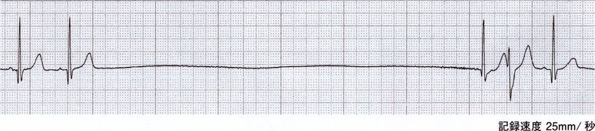
ａ 胸骨圧迫
ｂ 緊急ペーシング
ｃ リドカイン静注
ｄ アドレナリン静注
ｅ カルディオバージョン
✅
ｂ 緊急ペーシング
完全房室ブロックによる繰り返す意識消失（Adams-Stokes発作）→緊急ペーシング（一時ペースメーカー）。
❤️ 完全房室ブロック（Complete AV Block）
症状：Adams-Stokes発作（突然の意識消失・痙攣→自然回復）心電図：P波とQRS波が無関係（完全解離）・心室自己調律（40/分以下）
緊急治療：①アトロピン（迷走神経性なら有効）②緊急一時ペーシング
③確定診断後：恒久的ペースメーカー植込み
🎯 国試ポイント
完全房室ブロック+Adams-Stokes発作→緊急ペーシング。HR14/分は心室自己調律（異所性）。アトロピンより確実なペーシング優先。「胸骨圧迫」は心停止でないため不要。カルディオバージョンも不適（VFでない）。🔍 選択肢解説
意識消失＋徐脈性不整脈(房室ブロック)を疑う。a 胸骨圧迫：心停止でなく不適。
b 緊急ペーシング：徐脈性不整脈による失神に緊急ペーシング。✓
c リドカイン静注：心室性不整脈用。
d アドレナリン静注：不適。
e カルディオバージョン：不適。
Q.233(119D-69)★臨床📷 画像94%
28 歳の女性。動悸を主訴に来院した。午前10 時ごろ、事務仕事中に突然、動悸を自覚した。安静にしていても症状が治まらないため受診した。過去に学校健診で心電図異常を指摘され、当院を受診したが経過観察となっていた。その時の12 誘導心電図（A）を示す。既往歴に気管支喘息があり、吸入薬を使用しているが、年に数回発作を繰り返している。意識は清明。体温36.2℃。脈拍164/ 分、整。血圧120/82mmHg。呼吸数18/ 分。SpO2 99％（roomair）。心音と呼吸音とに異常を認めない。来院時の12 誘導心電図（B）を示す。
まず最初に行うべき対応はどれか。
まず最初に行うべき対応はどれか。
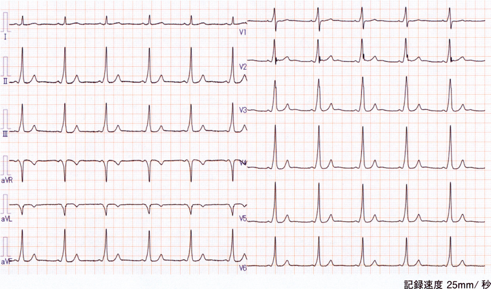
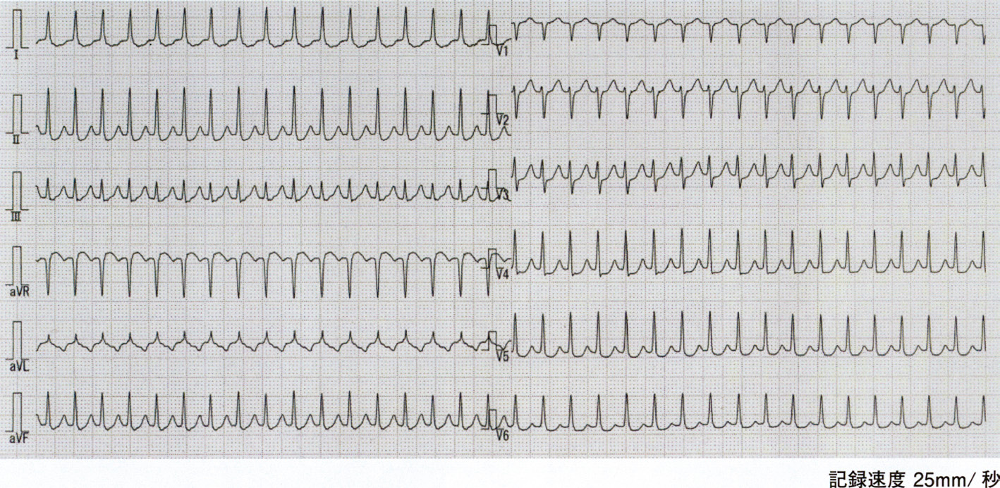
ａ 電気ショック
ｂ Valsalva 手技
ｃ ジゴキシン投与
ｄ 硫酸マグネシウム投与
ｅ アデノシン三リン酸投与
✅
ｂ Valsalva手技
WPW症候群+喘息→β遮断薬・アデノシン禁忌。迷走神経刺激（Valsalva法）を再試→有効なら継続。
❤️ WPW症候群のSVT管理
WPW症候群の禁忌薬：①ジゴキシン（AV node抑制→副伝導路優位→VFリスク）②β遮断薬（喘息あり→気管支攣縮）③ベラパミル（WPW+AfにはNGだが通常SVTには使用可）喘息あり→アデノシン（ATP）も注意（気管支収縮）
治療：迷走神経刺激→プロカインアミド or カルディオバージョン
🎯 国試ポイント
WPW+喘息のSVT：β遮断薬・アデノシン禁忌。まず迷走神経刺激（Valsalva・頸動脈洞）。電気生理学的根治：カテーテルアブレーション（副伝導路焼灼）。🔍 選択肢解説
WPW症候群のPSVT。a 電気ショック：血行動態安定で第一でない。
b Valsalva手技：PSVTにまず迷走神経刺激。✓
c ジゴキシン投与：WPWで副伝導路順伝導を促進し禁忌。
d 硫酸マグネシウム投与：不適。
e アデノシン三リン酸投与：喘息でATPは注意、まずValsalva。
Q.234(118A-51)★臨床📷 画像81%
50 歳の女性。動悸を主訴に救急車で搬入された。数か月前から週に1 回程度の動悸を自覚していたが、すぐに治まるので気にしていなかった。午後8 時、会食中に突然、動悸と呼吸困難が出現したため家族が救急車を要請した。既往歴と家族歴に特記すべきことはない。意識は清明。身長160cm、体重54kg。体温36.6℃。心拍数136/ 分、整。血圧126/90mmHg。呼吸数36/ 分。SpO2 98％（room air）。頸部に雑音を聴取せず、頸静脈の怒張を認めない。心音と呼吸音とに異常を認めない。12 誘導心電図を示す。心電図モニターをつけ、左前腕に静脈路を確保した。息こらえを30 秒行ったが、頻脈は改善しない。気管支喘息の既往がないことを再確認しアデノシン三リン酸を投与することとした。投与後に一過性の胸内苦悶が起こることを患者に説明した。
投与方法で適切なのはどれか。
投与方法で適切なのはどれか。

ａ 舌下投与
ｂ 皮下注射
ｃ 筋肉注射
ｄ 急速静注
ｅ 持続静注
✅
ｄ 急速静注
ATPは半減期が数秒と極めて短い→急速静注（ボーラス投与）しなければ有効血中濃度に到達しない。
❤️ ATP（アデノシン三リン酸）の投与法
機序：房室結節の伝導を一過性にブロック→SVTの折り返し回路を遮断投与方法：10〜20mgを急速静注（ボーラス）→直後に生食10〜20mLフラッシュ
ゆっくり投与=無効（半減期5〜10秒→すぐ分解される）
禁忌：WPW+Af・喘息・II〜III度AVブロック
🎯 国試ポイント
ATP投与=急速静注（ボーラス）+生食フラッシュ。「半減期が数秒」なので緩徐投与では届く前に分解。SVT停止後すぐに効果確認（洞停止→数秒の無収縮→洞調律再開）。🔍 選択肢解説
PSVT・喘息なし確認・Valsalva無効でATP投与。a 舌下投与：投与経路でない。
b 皮下注射：違う。
c 筋肉注射：違う。
d 急速静注：ATPは半減期が短く急速静注。✓
e 持続静注：違う。
Q.235(118D-31)★臨床📷 画像90%
36 歳の男性。動悸を主訴に来院した。10 年前から労作時の動悸と気が遠くなる感じの発作を自覚していた。中学生の時から健診で心電図異常を指摘されているが経過観察となっていた。最近、母方の従兄弟が25 歳で突然死したため心配になり受診した。母方の叔母は心疾患で通院中（詳細不明）。意識は清明。身長168cm、体重70kg。体温36.5℃。脈拍72/ 分、整。血圧124/72mmHg。頸静脈の怒張を認めない。心音と呼吸音とに異常を認めない。四肢に浮腫を認めない。血液検査では、BNP 178pg/mL（基準18.4 以下）以外異常を認めない。12 誘導心電図（A）を示す。胸部エックス線写真で心胸郭比45％、肺うっ血と胸水貯留を認めない。心エコー図（B）を示す。左室心室中隔壁厚22.5mm、後壁厚8.6mm、拡張期径38.0mm、左室駆出率79.6％であり、有意な弁膜症や左室流出路の圧較差を認めなかった。Holter 心電図で非持続性心室頻拍を数回認め、ふらつきを自覚していた。心臓カテーテル検査で冠動脈に狭窄病変を認めない。心臓造影MRI で中隔の心筋中層に遅延造影を認めた。
突然死を予防する治療法はどれか。
突然死を予防する治療法はどれか。
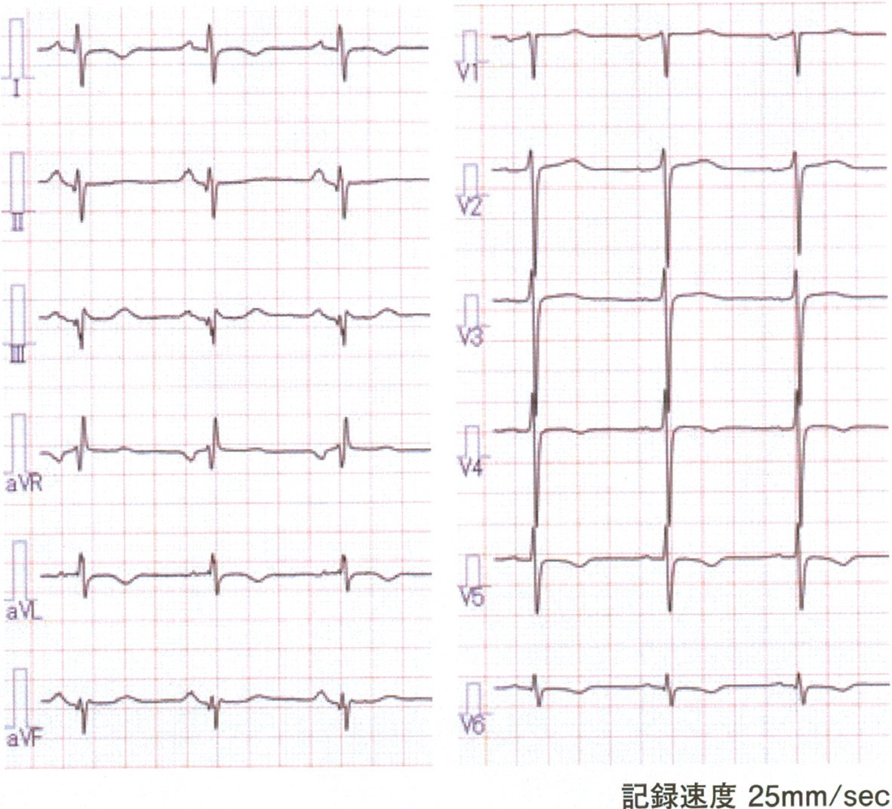
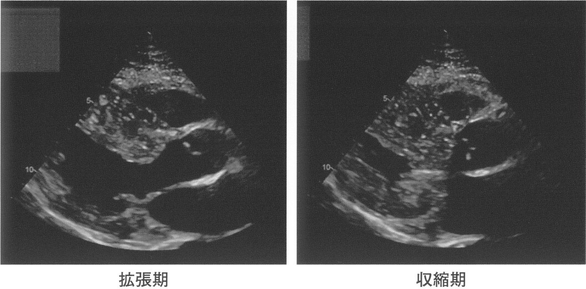
ａ ジゴキシン投与
ｂ ジソピラミド投与
ｃ ループ利尿薬投与
ｄ 恒久的ペースメーカ植込み術
ｅ 植込み型除細動器〈ICD〉植込み術
✅
ｅ 植込み型除細動器（ICD）植込み術
若年男性+失神+家族性突然死+遺伝性不整脈（QT延長症候群/CPVT疑い）→ICD植込みで突然死予防。
❤️ 先天性QT延長症候群（LQTS）の管理
特徴：若年期発症・家族歴・失神・運動誘発性VT（TdP）→突然死リスク高リスク因子：失神・VF/VT既往・QTc>500ms・家族突然死歴
治療：①β遮断薬（運動誘発性VT予防）②ICD（高リスク例）③電解質管理
禁忌：QT延長薬（抗菌薬・抗ヒスタミン等）
🎯 国試ポイント
若年+失神+家族突然死→遺伝性致死性不整脈→ICD。LQTS・Brugada症候群・HCM・ARVC等。症候性高リスク例にはICD植込みが第一選択。β遮断薬はLQTS1・2に有効（LQTSの補助）。🔍 選択肢解説
肥大型心筋症＋失神＋突然死家族歴。a ジゴキシン投与：不適。
b ジソピラミド投与：流出路狭窄に使うが突然死予防でない。
c ループ利尿薬投与：不適。
d 恒久的ペースメーカ植込み術：不適。
e 植込み型除細動器〈ICD〉植込み術：突然死リスク(失神・家族歴)への予防。✓
Q.236(118F-22)★一般83%
抗凝固療法が必須でない人工臓器はどれか。
ａ ECMO
ｂ 人工心肺装置
ｃ 人工弁（機械弁）
ｄ 植込み型ペースメーカ
ｅ 植込み型補助人工心臓
✅
ｄ 植込み型ペースメーカ
心房細動の脳塞栓予防：CHADS₂スコアに基づいてDOAC/ワルファリンを使用。
❤️ 心房細動の治療方針
レートコントロール：β遮断薬・Ca拮抗薬・ジゴキシン（心拍数管理）リズムコントロール：薬物（Ic群・アミオダロン）・電気的除細動・カテーテルアブレーション
脳塞栓予防：CHADS₂スコア≥2→DOAC/ワルファリン
📋 CHADS₂スコア
| 因子 | 内容 | 点数 |
|---|---|---|
| C | 心不全（Congestive HF） | 1点 |
| H | 高血圧（Hypertension） | 1点 |
| A | 年齢≥75歳（Age） | 1点 |
| D | 糖尿病（Diabetes） | 1点 |
| S₂ | 脳卒中/TIA既往（Stroke） | 2点 |
| スコア≥2 | 抗凝固療法適応（DOAC優先） |
🎯 国試ポイント
心房細動の脳塞栓予防：CHADS₂スコア≥2→抗凝固療法（DOAC：リバーロキサバン・アピキサバン等）。弁膜症性Afはワルファリンのみ。抗血小板薬（アスピリン）は脳塞栓予防に不十分。🔍 選択肢解説
a ECMO：抗凝固が必須。b 人工心肺装置：必須。
c 人工弁(機械弁)：必須。
d 植込み型ペースメーカ：抗凝固は不要。✓
e 植込み型補助人工心臓：必須。
Q.237(117A-27)★臨床📷 画像83%
84 歳の男性。心臓ペースメーカー植込み後の定期受診で来院した。3 か月前に気が遠くなるような症状を自覚し、徐脈性心房細動の診断となった。2 か月前に恒久的ペースメーカー植込み術を受けた。今回の受診までに症状はなかった。ペースメーカーは下限レート60/ 分に設定されている。12 誘導心電図の胸部誘導を示す。
この心電図で認める所見はどれか。
この心電図で認める所見はどれか。
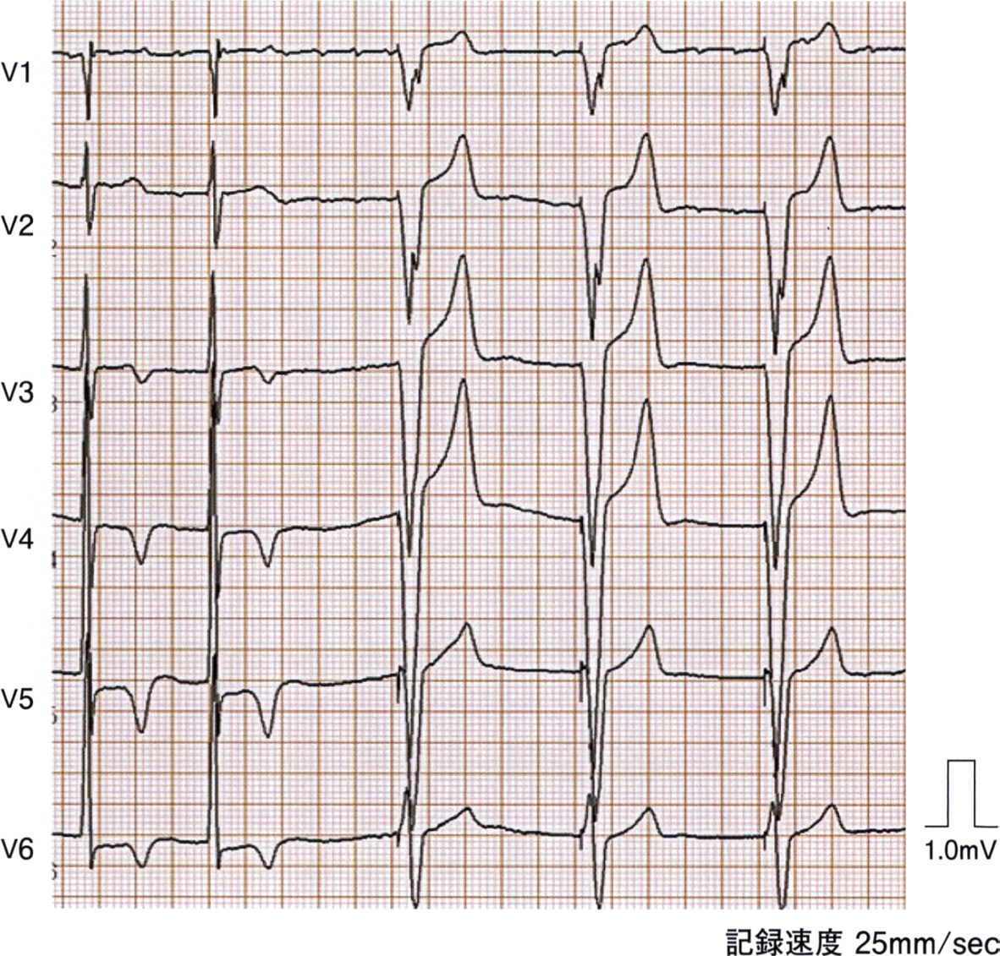
ａ 心室頻拍
ｂ 異常Q 波
ｃ 心室期外収縮
ｄ 心房ペーシングの波形
ｅ 心室ペーシングの波形
✅
ｅ 心室ペーシングの波形
徐脈性AfにPPM（VVIモード）植込み→ペーシングスパイク+LBBB様（幅広）QRS＝心室ペーシング波形。
📋 ペースメーカー心電図の特徴
| 種類 | 心電図所見 | 備考 |
|---|---|---|
| 心房ペーシング | スパイク+P波（形が変わる） | PP間隔が規則的 |
| 心室ペーシング | スパイク+幅広QRS（LBBB様） | 右室先端ペーシング→左脚ブロック様 |
| 両室ペーシング（CRT） | スパイク+QRS（CRT） | DCM・心不全治療 |
| ×心室頻拍 | 幅広QRSだがスパイクなし | 鑑別に注意 |
| 設定確認 | LRL（下限レート）=60/分→HR<60時にペーシング |
🎯 国試ポイント
心室ペーシング波形=スパイク+幅広QRS（LBBB様）。右室先端刺激→左室は遅れて活性化→LBBB様パターン。徐脈性Af→VVIモードが多い。PPM機能確認：スパイクの後にQRSが来るかを確認。🔍 選択肢解説
a 心室頻拍：該当しない。b 異常Q波：該当しない。
c 心室期外収縮：該当しない。
d 心房ペーシングの波形：該当しない。
e 心室ペーシングの波形：ペーシングスパイク＋幅広QRS。✓
Q.238(117A-71)★臨床📷 画像2択53%
22 歳の男性。失神を主訴に来院した。中学生のころから健康診断で心電図異常を指摘されていた。5 年前に失神した際に救急外来で頭部CT、脳波検査を受けたが異常は指摘されず、経過観察となっていた。本日、朝食後、失神したため当院を受診した。外来の処置室でも動悸と気が遠くなることを訴えている。既往歴に特記すべきことはない。母方のおじが14 歳時に死亡している。身長153cm、体重46kg。脈拍64/ 分、整。血圧106/72mmHg。胸腹部に異常を認めない。血液所見：Hb 13.5g/dL、白血球7,600、血小板31 万。血液生化学所見：アルブミン3.3g/dL、AST24U/L、ALT 24U/L、CK 34U/L（基準30 ～140）、尿素窒素11mg/dL、クレアチニン0.5mg/dL、血糖94mg/dL、Na 136mEq/L、K 4.1mEq/L、脳性ナトリウム利尿ペプチド〈BNP〉27.2pg/mL（基準18.4 以下）。心筋トロポニンT 迅速検査陰性。来院時の12 誘導心電図（A）と発作時の心電図モニターの波形（B）とを示す。
初期対応で行うのはどれか。2 つ選べ。
初期対応で行うのはどれか。2 つ選べ。
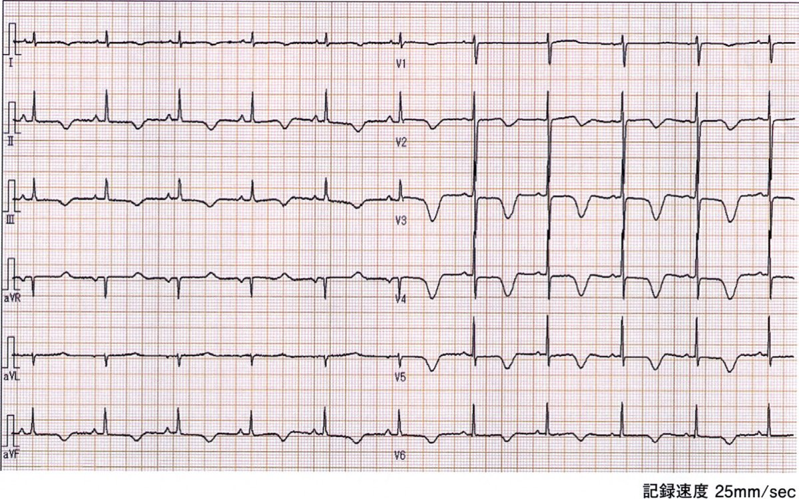
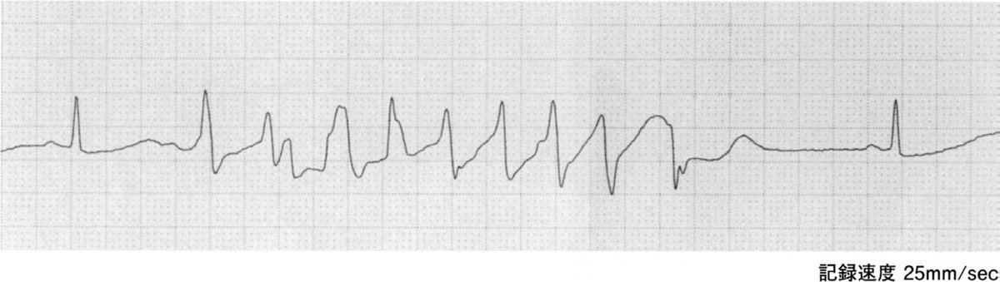
ａ β遮断薬静注
ｂ ヘパリン静注
ｃ ジゴキシン静注
ｄ ループ利尿薬静注
ｅ 硫酸マグネシウム静注
✅
ａ β遮断薬静注 ＋ ｅ 硫酸マグネシウム静注
Torsades de pointes（TdP）→MgSO₄（硫酸マグネシウム）静注+β遮断薬静注（LQTS対策）。
❤️ Torsades de Pointes（TdP）の治療
TdP（多形性VT）：QT延長→心室細動に移行しうる危険な不整脈急性期治療：①MgSO₄（硫酸マグネシウム）1〜2g IV（第一選択）②β遮断薬（LQTS1・2型）
③一時ペーシング（LQTSでQT短縮目的）
④イソプロテレノール（LQTSでは原則禁忌→獲得性TdPには使用）
禁忌：IA・III群抗不整脈薬（QTをさらに延長）
🎯 国試ポイント
TdP→MgSO₄静注（第一選択）。LQTS（先天性）→β遮断薬+ICD。TdP中にIA群（キニジン）・III群（アミオダロン）は禁忌（QT延長↑）。電気的除細動はVFに移行したときに使用。🔍 選択肢解説
先天性QT延長症候群＋失神＋突然死家族歴。a β遮断薬静注：LQTSの治療。✓
b ヘパリン静注：不適。
c ジゴキシン静注：不適。
d ループ利尿薬静注：不適。
e 硫酸マグネシウム静注：torsades de pointesにマグネシウム。✓
Q.239(117B-20)★必修一般91%
失神をきたしうる疾患と失神の誘因との組合せで誤っているのはどれか。
ａ 起立性低血圧 ――――――――― α遮断薬投与
ｂ 頸動脈洞症候群 ―――――――― 頸部の伸展
ｃ Brugada 症候群 ―――――――― 発 熱
ｄ 完全房室ブロック ――――――― 安静臥位
ｅ 閉塞性肥大型心筋症 ―――――― 激しい運動
✅
ｄ 完全房室ブロック ――――――― 安静臥位
完全房室ブロック（Adams-Stokes発作）は体位に関係なく発生→「安静臥位が誘因」は誤り。
📋 失神の誘因と疾患
| 疾患 | 誘因 | 正誤 |
|---|---|---|
| 起立性低血圧 | α遮断薬・臥位→立位（起立） | ✅ 正しい |
| 頸動脈洞症候群 | 頸部の伸展・圧迫 | ✅ 正しい |
| Brugada症候群 | 発熱・睡眠中（副交感亢進） | ✅ 正しい |
| 完全房室ブロック | 安静臥位が特異的な誘因ではない | ❌ 誤り→体位無関係 |
| 閉塞性HCM | 激しい運動・立位 | ✅ 正しい（前負荷↓→流出路閉塞↑） |
🎯 国試ポイント
完全AVブロックのAdams-Stokes発作は体位無関係。Brugada症候群は夜間・発熱時に発作多い（副交感亢進→発作誘発）。閉塞性HCMは立位・運動（前負荷↓）で悪化。🔍 選択肢解説
a 起立性低血圧―α遮断薬投与：正しい。b 頸動脈洞症候群―頸部の伸展：正しい。
c Brugada症候群―発熱：正しい。
d 完全房室ブロック―安静臥位：安静臥位は特異的な誘因でなく誤り。✓
e 閉塞性肥大型心筋症―激しい運動：正しい。
Q.240(117D-13)★一般92%
ボールなどによる前胸部打撲後の心停止について正しいのはどれか。
ａ 高齢者での報告例が多い。
ｂ 死亡に至ることはまれである。
ｃ 受傷後、1 週間前後に心停止が生じる。
ｄ 速やかなAED の使用が予後改善に有効である。
ｅ 迷走神経反射から生じる洞性徐脈が原因である。
✅
ｄ 速やかなAED の使用が予後改善に有効である。
ジゴキシンは房室伝導抑制→高度房室ブロック→徐脈を引き起こす。
📋 房室ブロックを起こす薬剤
| 薬剤 | 機序 |
|---|---|
| ジゴキシン | Na/K-ATPase阻害→迷走神経亢進→AV伝導抑制 |
| β遮断薬 | AV伝導抑制 |
| Ca拮抗薬（非DHP：ベラパミル・ジルチアゼム） | AV伝導抑制 |
| アミオダロン | AV伝導抑制 |
| ×リドカイン | VT/VF治療薬、AV blockは起こしにくい |
| ×ニフェジピン（DHP型） | AV blockを起こしにくい |
🎯 国試ポイント
AV block誘発薬：ジゴキシン・β遮断薬・非DHP型Ca拮抗薬（ベラパミル・ジルチアゼム）・アミオダロン。β遮断薬+ベラパミルの併用は禁忌（完全AVブロック）。🔍 選択肢解説
前胸部打撲後の心停止(commotio cordis)。a 高齢者での報告例が多い：若年アスリートに多く誤り。
b 死亡に至ることはまれ：致死的で誤り。
c 受傷後1週間前後に心停止：即時に生じ誤り。
d 速やかなAEDの使用が予後改善に有効：心室細動に対し速やかな除細動。✓
e 迷走神経反射から生じる洞性徐脈が原因：受攻期の衝撃による心室細動が原因で誤り。
Q.241(117E-7)★必修一般📷 画像87%
失神している患者の心電図モニターの波形を示す。
直ちに投与すべきなのはどれか。
直ちに投与すべきなのはどれか。
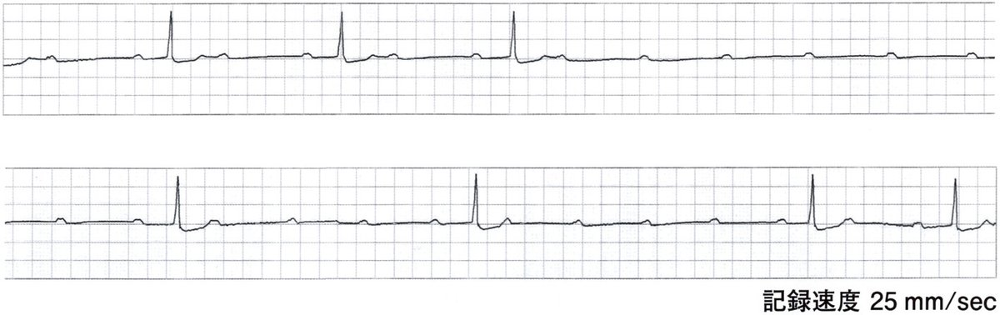
ａ アトロピン
ｂ アドレナリン
ｃ ジアゼパム
ｄ ベラパミル
ｅ リドカイン
✅
ａ アトロピン
徐脈性失神（洞停止or高度AVブロック）→アトロピン（迷走神経遮断→心拍数↑）が第一選択。
❤️ 徐脈性失神の緊急対応
アトロピン0.5〜1mg IV：迷走神経遮断→洞結節自動能↑・AV伝導↑効果不十分→イソプロテレノール（アドレナリン的）or一時ペーシング
×リドカイン：VT/VFに使う（徐脈には無効・悪化も）
×ベラパミル・ジアゼパム：徐脈悪化・鎮静（意識消失時不要）
🎯 国試ポイント
徐脈性失神→まずアトロピン（1mg IV）。改善なし→経皮ペーシング or 経静脈ペーシング（一時PM）。その後：恒久的PM植込みを検討。VF・VT（頻脈性）とは対応が全く逆。🔍 選択肢解説
失神＋徐脈性不整脈の心電図。a アトロピン：徐脈にアトロピン。✓
b アドレナリン：心停止用。
c ジアゼパム：不適。
d ベラパミル：徐脈を悪化。
e リドカイン：心室性不整脈用。
Q.242(116E-21)★必修一般91%
一過性の意識障害が生じた場合、Adams-Stokes 症候群を疑う病歴はどれか。
ａ 排尿後に意識消失した。
ｂ 突然、意識を失い倒れこんだ。
ｃ 意識が回復した後、上下肢の麻痺を認めた。
ｄ 舌を嚙んでいて口腔内からの出血を認めた。
ｅ 意識が回復した後、意識がもうろうとしていた。
✅
ｂ 突然、意識を失い倒れこんだ。
WPW+Af：ベラパミルはAV nodeをブロック→全impulseがKent束経由→心室細動リスク。
❤️ WPW症候群＋心房細動
WPW症候群：副伝導路（Kent束）でAV nodeをバイパス→デルタ波AfになるとKent束経由で高速に心室興奮→心室細動化のリスク
禁忌：ジゴキシン・ベラパミル（AV node抑制→副伝導路に電気が集中→VF）
治療：プロカインアミド・アミオダロン・電気的除細動
🎯 国試ポイント
WPW+Af禁忌：ジゴキシン・ベラパミル・β遮断薬（AV node抑制→VF）。治療：Ic群（プロカインアミド）・アミオダロド・除細動。カテーテルアブレーションで根治可能。🔍 選択肢解説
a 排尿後に意識消失：状況失神を示唆。b 突然、意識を失い倒れこんだ：前兆なく突然＝心原性(Adams-Stokes)。✓
c 意識回復後に上下肢麻痺：脳卒中を示唆。
d 舌を噛んで出血：てんかんを示唆。
e 意識回復後もうろう：てんかん後を示唆。
Q.243(116E-26)★必修臨床75%
76 歳の男性。失神を主訴に来院した。2 年前に持続性心房細動と診断され、抗凝固薬が開始されている。その他の投薬はされていない。最近1 か月の間に2 度失神して、顔面を強打するというエピソードがあった。Holter 心電図を施行したところ、最大心拍数112/ 分であり、ふらつきを伴う最大6.4 秒のR-R 間隔を認めた。
適切な方針はどれか。
適切な方針はどれか。
ａ β遮断薬投与
ｂ Holter 心電図の再検
ｃ イソプロテレノール投与
ｄ 心臓ペースメーカー植込み
ｅ 植込み型除細動器〈ICD〉植込み
✅
ｄ 心臓ペースメーカー植込み
徐脈頻脈症候群（BTS）：最大6.4秒の洞停止（Af停止後）+症状あり→PPM植込みの適応。
❤️ 徐脈頻脈症候群（BTS）の管理
BTS：洞不全症候群（SSS）の一型。Af（頻脈）と洞停止（徐脈）が交互PPM適応基準：①症状あり（失神・眼前暗黒感）+②洞停止≥3秒 or HR<40/分
本症例：6.4秒の洞停止+失神（顔面外傷）→明らかなPPM適応
注意：PPM植込み後に抗不整脈薬でAf管理が可能になる
🎯 国試ポイント
BTS：失神+6秒超の洞停止→PPM植込み。ICDは心室細動/VT既往がなければ不要。抗不整脈薬（β遮断薬）は徐脈をさらに悪化させる→PPM先行。PPM後にAf管理（β遮断薬・アブレーション）可能。🔍 選択肢解説
徐脈頻脈症候群(R-R6.4秒のポーズによる失神)。a β遮断薬投与：徐脈を悪化。
b Holter心電図の再検：診断済みで不要。
c イソプロテレノール投与：一時的。
d 心臓ペースメーカー植込み：長いポーズによる失神にペースメーカ。✓
e 植込み型除細動器〈ICD〉植込み：心室性でなく不要。
Q.244(115B-36)★必修CBT臨床📷 画像72%
38 歳の女性。労作時の息切れを主訴に来院した。3 日前から通勤のための最寄りの駅までの歩行で息切れを感じるようになった。昨日は歩行中に気が遠くなる感じも出現したため受診した。受診時の心電図を示す。
胸部の聴診で特徴的に聴取されるのはどれか。
胸部の聴診で特徴的に聴取されるのはどれか。

ａ Ⅰ音の大砲音
ｂ Ⅱ音の亢進
ｃ Ⅲ音
ｄ Ⅳ音
ｅ 心膜摩擦音
✅
ａ Ⅰ音の大砲音
完全房室ブロック→P波とQRS波が時々偶然同期→強い心房収縮+心室収縮が重なり大砲音（cannon sound）。
❤️ 完全AVブロックの聴診所見
大砲音（cannon A wave・Ⅰ音亢進）：P波とQRS波が偶然同期したときに心房収縮と心室収縮が重なる→強い第1音（大砲音）不規則なⅠ音変動：PR間隔が毎回変わるのでⅠ音の強さが変動
×Ⅲ音（S3）：心不全のGallop（奔馬調律）→別の病態
🎯 国試ポイント
完全AVブロック=Ⅰ音の大砲音（cannon sound）。P波とQRSの非同期→時々Ⅰ音が突然大きくなる（大砲音）。頸静脈波形でも大砲状A波が見られる。徐脈性失神→PPM適応。🔍 選択肢解説
完全房室ブロック(房室解離)。a Ⅰ音の大砲音：房室解離で心房と心室が同時収縮する大砲音(cannon sound)。✓
b Ⅱ音の亢進：肺高血圧の所見。
c Ⅲ音：心不全の所見。
d Ⅳ音：心肥大の所見。
e 心膜摩擦音：心膜炎の所見。
Q.245(115D-9)★一般97%
合併症として完全房室ブロックを最も生じやすいのはどれか。
ａ 強皮症
ｂ Sjögren 症候群
ｃ 甲状腺機能低下症
ｄ 心サルコイドーシス
ｅ 全身性エリテマトーデス〈SLE〉
✅
ｄ 心サルコイドーシス
心サルコイドーシス：肉芽腫が刺激伝導系（房室結節・His束）に浸潤→完全房室ブロック。
📋 完全房室ブロックをきたす疾患
| 疾患 | 機序 | 備考 |
|---|---|---|
| 心サルコイドーシス | 房室結節・伝導系への肉芽腫浸潤 | 最多の原因の一つ |
| ライム病（Borrelia感染） | 心筋炎→伝導障害 | 一過性が多い |
| 先天性完全AVブロック | 母体SLE（抗SS-A抗体）→胎児期障害 | |
| 虚血性心疾患 | 右冠動脈（房室結節枝）梗塞 | 下壁MI合併 |
| ×強皮症・SLE・Sjögren | 心外の自己免疫→心AVブロックは少ない |
🎯 国試ポイント
心サルコイドーシス=完全AVブロック+心室性不整脈。心臓MRI（遅延造影LGE）・FDG-PETで診断。治療：ステロイド（肉芽腫縮小）+PPM/ICD。🔍 選択肢解説
a 強皮症：主でない。b Sjögren症候群：主でない。
c 甲状腺機能低下症：徐脈だが房室ブロックの主因でない。
d 心サルコイドーシス：肉芽腫が刺激伝導系を障害し完全房室ブロック。✓
e SLE：主でない。
Q.246(114B-36)★必修CBT臨床📷 画像82%
13 歳の男子。学校心臓検診で心電図異常を指摘され、父親に連れられて受診した。自覚症状はない。脈拍76/ 分、不整。血圧110/74mmHg。心エコー検査所見に異常を認めない。心電図を示す。この心電図にみられる期外収縮は運動により消失した。Holter 心電図検査において期外収縮の連発を認めなかった。
患児および父親への説明として正しいのはどれか。
患児および父親への説明として正しいのはどれか。

ａ 「不整脈の薬を飲みましょう」
ｂ 「心臓カテーテル検査を行います」
ｃ 「体育の実技は見学してください」
ｄ 「心配はないので経過をみていきましょう」
ｅ 「カテーテルアブレーションという治療を行います」
✅
ｄ 「心配はないので経過をみていきましょう」
良性期外収縮（単形性・運動で消失・連発なし・器質的心疾患なし）→経過観察で十分。
❤️ 小児の期外収縮の評価
良性所見：①単形性②運動で消失（自律神経性）③心エコー正常④連発なし⑤自覚症状なし→経過観察で十分、運動制限不要、薬物不要
要精査所見：多形性・運動で増加・器質的心疾患・失神・家族歴（突然死）
→Holter心電図・電気生理検査・心臓MRI
🎯 国試ポイント
良性期外収縮（運動消失・単形性・器質的疾患なし）→経過観察。「体育見学」「薬物」「カテーテル検査」は過剰対応。小学校心臓検診での異常→精査→良性なら安心させる。🔍 選択肢解説
運動で消失する期外収縮・連発なし＝良性。a 「不整脈の薬を飲みましょう」：不要。
b 「心臓カテーテル検査を行います」：不要。
c 「体育の実技は見学してください」：制限不要。
d 「心配はないので経過をみていきましょう」：運動で消失する期外収縮は良性。✓
e 「カテーテルアブレーション」：不要。
Q.247(114F-37)★臨床98%
75 歳の女性。健康診断で心房細動を指摘され来院した。3 か月前に受けた健康診断で心拍数96/ 分の心房細動を指摘され受診した。動悸やふらつきなどの自覚症状はない。既往歴として4 年前に高血圧症の指摘があり、現在、食事療法を行っている。家族歴に特記すべきことはない。意識は清明。身長165cm、体重59kg。体温36.2℃。脈拍92/ 分、不整。血圧132/88mmHg。呼吸数18/ 分。心音と呼吸音とに異常を認めない。腹部は平坦、軟で、肝・脾を触知しない。神経診察にて異常を認めない。心電図では心拍数102/ 分の心房細動を認めた。心エコー検査では左室駆出率は55％であった。
まず行う対応として正しいのはどれか。
まず行う対応として正しいのはどれか。
ａ 抗凝固薬の投与
ｂ t-PA の点滴静注
ｃ ペースメーカー留置
ｄ カルディオバージョン
ｅ カテーテルアブレーション
✅
ａ 抗凝固薬の投与
心房細動+高血圧1点→CHADS₂スコア1点→CHA₂DS₂-VAScスコアでも抗凝固を考慮。まず脳塞栓予防。
❤️ 心房細動の脳塞栓予防
CHADS₂スコア：C(心不全)H(高血圧)A(年齢75歳以上)D(糖尿病)S₂(脳卒中/TIA歴=2点)本症例：H（高血圧）=1点→CHADS₂スコア1
CHA₂DS₂-VASc：≥2点→抗凝固療法（DOAC優先）
本症例：女性+高血圧+75歳（1点）+年齢65-74歳（1点）→CHA₂DS₂-VASc 3点→抗凝固療法
🎯 国試ポイント
無症状Af発見→脳塞栓予防（抗凝固薬）が最優先。リズムコントロール（除細動）は症状ある場合や心機能低下時に検討。まずDOACで塞栓予防→その後症状対応。🔍 選択肢解説
無症候性AF＋高血圧。a 抗凝固薬の投与：AF＋危険因子で脳塞栓予防。✓
b t-PAの点滴静注：不適。
c ペースメーカー留置：不要。
d カルディオバージョン：無症候で急がない。
e カテーテルアブレーション：まず抗凝固。
Q.248(113F-30)★一般📷 画像55%
頻脈発作時の心電図（A）と電気ショックにより洞調律に復帰した後の心電図（B）を示す。
治療として適切なのはどれか。
治療として適切なのはどれか。
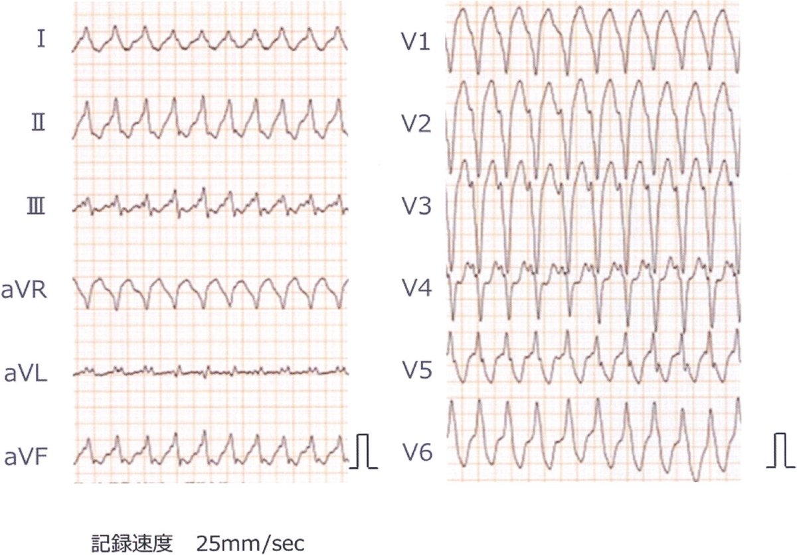
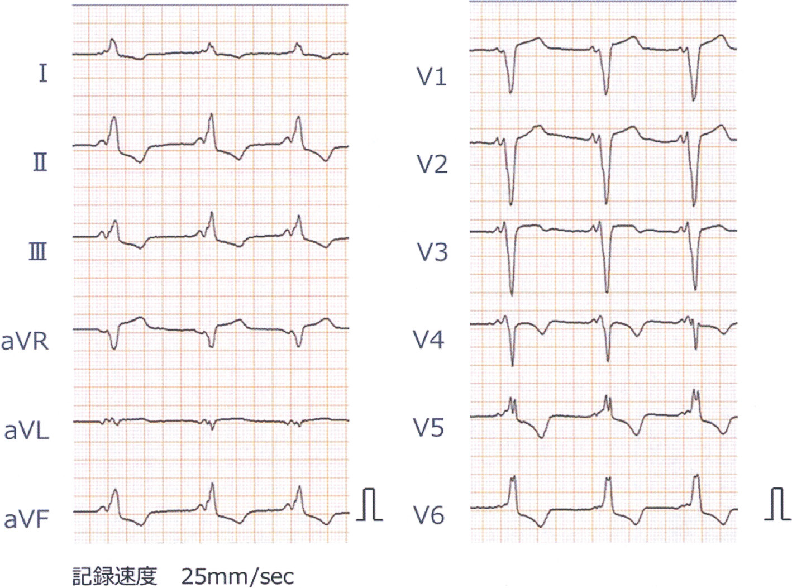
ａ ベラパミル経口投与
ｂ ジギタリス経口投与
ｃ 植込み型除細動器の植込み
ｄ カテーテルアブレーション
ｅ 両室ペーシングによる心臓再同期療法
✅
ｄ カテーテルアブレーション
WPW症候群（副伝導路あり）→カテーテルアブレーション（副伝導路焼灼）で根治が可能・推奨。
❤️ WPW症候群の根治療法
カテーテルアブレーション：高周波で副伝導路（Kent束）を焼灼→根治成功率：90〜95%以上
再発率：5〜10%
適応：①症候性（発作性SVT・AF）②職業的考慮（パイロット等）③突然死リスク（デルタ波のある高リスク例）
×ベラパミル・ジゴキシン：WPW+AfではNGだがSVTには使用可（ただしアブレーションが根本治療）
🎯 国試ポイント
WPW症候群の根治=カテーテルアブレーション（副伝導路焼灼）。薬物療法（β遮断薬・Na₂チャネル遮断薬）は対症療法→再発する。突然死リスク：WPW+AF→急速心室応答→VF。🔍 選択肢解説
WPW症候群の房室回帰性頻拍。a ベラパミル経口投与：根治でない。
b ジギタリス経口投与：WPWに禁忌。
c 植込み型除細動器の植込み：不要。
d カテーテルアブレーション：副伝導路(Kent束)のアブレーション。✓
e 両室ペーシングによる心臓再同期療法：心不全用。
Q.249(112C-13)★一般67%
疾患と用いられる治療との組合せで誤っているのはどれか。
ａ 洞性頻脈 ――――――――――― カテーテルアブレーション
ｂ 急性冠症候群 ――――――――― 経皮的冠動脈インターベンション
ｃ 頸動脈狭窄症 ――――――――― ステント留置術
ｄ 腹部大動脈瘤 ――――――――― ステントグラフト留置術
ｅ 閉塞性動脈硬化症 ――――――― ステント留置術
✅
ａ 洞性頻脈 ――――――――――― カテーテルアブレーション
ICD適応：心室細動や血行動態的に不安定な心室頻拍の既往（二次予防）。
📋 ICDの適応
| 分類 | 適応 |
|---|---|
| 一次予防 | EF≤35%+NYHA II-III（HFrEF）、Brugada（高リスク）、QT延長（高リスク） |
| 二次予防（絶対適応） | 心室細動の既往・持続性VT（血行動態不安定） |
| デバイス療法 | 心臓再同期療法（CRT）はQRS幅>150ms+EF≤35%+NYHA III-IV |
🎯 国試ポイント
ICD二次予防：VF/持続性VT既往→絶対適応。一次予防：EF≤35%（ガイドライン改定で35%以下）。一般的に3か月以上の至適薬物療法後に評価。🔍 選択肢解説
a 洞性頻脈―カテーテルアブレーション：洞性頻脈は原因治療でアブレーションでないため誤り。✓b 急性冠症候群―PCI：正しい。
c 頸動脈狭窄症―ステント留置術：正しい。
d 腹部大動脈瘤―ステントグラフト留置術：正しい。
e 閉塞性動脈硬化症―ステント留置術：正しい。
Q.250(111F-10)★必修一般51%
心拍数と脈拍数が一致しにくいのはどれか。
ａ 心房細動
ｂ 心房頻拍
ｃ Ⅰ度房室ブロック
ｄ 完全房室ブロック
ｅ 4：1 伝導の心房粗動
✅
ａ 心房細動
心房細動→不規則なR-R間隔→拍出量が少ない収縮は脈として触知できない→心拍数>脈拍数（欠損脈）。
❤️ 欠損脈（Pulse Deficit）
欠損脈：心拍数（聴診/心電図）>脈拍数（末梢触知）原因：心房細動（不規則な心拍→短いR-R間隔では拍出量少→脈触知不可）
測定法：同時に心音聴取（心拍数）と脈触知（脈拍数）→差が欠損脈
×Ⅰ度AVブロック：欠損脈なし（PR延長だけ）
🎯 国試ポイント
心房細動=心拍数>脈拍数（欠損脈）。心房細動の診断のヒント：①不整脈②欠損脈③P波消失（ECG）④f波（基線の細かい振動）。2:1心房粗動も心拍数≠脈拍数になりうるがAfほど典型的でない。🔍 選択肢解説
a 心房細動：脈拍欠損(pulse deficit)で心拍数>脈拍数となり一致しにくい。✓b 心房頻拍：概ね一致。
c Ⅰ度房室ブロック：一致。
d 完全房室ブロック：概ね一致。
e 4：1伝導の心房粗動：一致。
Q.251(110F-7)★必修一般📷 画像50%
心電図を示す。
認められる所見はどれか。
認められる所見はどれか。

ａ 右軸偏位
ｂ 心房細動
ｃ 補充調律
ｄ 左脚ブロック
ｅ Ⅰ度房室ブロック
✅
ｅ Ⅰ度房室ブロック
I度房室ブロック：PR間隔延長（>0.20秒）。QRS幅は正常、P波ごとにQRSが続く。
📋 房室ブロック（AV block）の分類
| 分類 | 心電図所見 | 臨床的意義 |
|---|---|---|
| Ⅰ度 | PR間隔>0.20秒（200ms）・全P→QRS伝導 | 無症状→経過観察 |
| Ⅱ度Wenckebach | PR間隔が徐々に延長→QRS脱落（群） | 迷走神経性→通常経過観察 |
| Ⅱ度Mobitz II | 突然のQRS脱落（PRは一定） | PPM適応（予後悪い） |
| Ⅲ度（完全） | P波とQRS無関係（完全解離）・心室自己調律 | PPM適応・Adams-Stokes発作 |
🎯 国試ポイント
Ⅰ度AVブロック=PR>200ms（全P→QRS）。症状なし→経過観察（PPM不要）。Ⅱ度Mobitz IIとⅢ度→PPM適応。Wenckebach型は迷走神経亢進（アスリート等）でも見られ良性。🔍 選択肢解説
a 右軸偏位：該当しない。b 心房細動：該当しない。
c 補充調律：該当しない。
d 左脚ブロック：該当しない。
e Ⅰ度房室ブロック：PR時間の延長。✓
Q.252(108I-20)★一般📷 画像24%
72 歳の男性。今朝、起床時から全身倦怠感が出現しているため来院した。心電図を示す。
認められる所見はどれか。
認められる所見はどれか。

ａ 洞停止
ｂ 心房粗動
ｃ Ⅰ度房室ブロック
ｄ Ⅱ度房室ブロック
ｅ 心室固有調律
✅
ｄ Ⅱ度房室ブロック
Ⅱ度AVブロック：一部のP波がQRSに伝導されない（P:QRS比が2:1や3:2）。
❤️ Ⅱ度AVブロックの判定
Wenckebach型（Mobitz I）：PR間隔が徐々に延長→QRS脱落→繰り返す（群）Mobitz II型：PRは一定→突然QRS脱落→予後悪い（完全AVブロックへ移行リスク高）→PPM適応
判定のコツ：PとQRSの関係を規則的に確認→「脱落」があるかを見る
🎯 国試ポイント
Ⅱ度AVブロック（Mobitz II）→PPM適応。高齢者+全身倦怠感→徐脈性AVブロックは見逃せない。Wenckebach型は通常症状軽微→経過観察も可。Mobitz II・完全AVブロック→PPM必須。🔍 選択肢解説
a 洞停止：該当しない。b 心房粗動：該当しない。
c Ⅰ度房室ブロック：該当しない。
d Ⅱ度房室ブロック：一部のP波が心室に伝導されない。✓
e 心室固有調律：該当しない。
Q.253(94B-23)★一般📷 画像2択
突然の意識消失発作を主訴とした患者の来院時の第Ⅱ誘導心電図を示す。
この患者で考えられるのはどれか。2 つ選べ。
この患者で考えられるのはどれか。2 つ選べ。

ａ 洞不全症候群
ｂ 心室性頻拍症
ｃ 心房粗動
ｄ 高度房室ブロック
ｅ Adams-Stokes 症候群
✅
ｄ 高度房室ブロック ＋ ｅ Adams-Stokes 症候群
アミオダロンはIII群抗不整脈薬→K⁺チャネル遮断→QT延長。
📋 QT延長を起こす薬剤
| 薬剤 | 備考 |
|---|---|
| Ia群 | キニジン・プロカインアミド・ジソピラミド→Torsades de pointes（TdP）のリスク |
| III群 | アミオダロン・ソタロール→QT延長 |
| 向精神薬 | ハロペリドール・クロルプロマジン |
| 抗菌薬 | クラリスロマイシン・フルオロキノロン |
| 抗ヒスタミン薬（旧世代） | テルフェナジン（現在使用禁止） |
| ×リドカイン（Ib群） | QT延長しない（むしろ短縮傾向） |
🎯 国試ポイント
QT延長→Torsades de pointes（TdP）→VFのリスク。TdPはQT>500msで特に危険。低K・低Mg血症で悪化。治療：MgSO₄投与・一時ペーシング。🔍 選択肢解説
突然の意識消失＋徐脈性不整脈。a 洞不全症候群：可能性はあるが所見と合致しにくい。
b 心室性頻拍症：波形が異なる。
c 心房粗動：意識消失は少ない。
d 高度房室ブロック：高度徐脈で失神。✓
e Adams-Stokes症候群：不整脈による失神発作の総称。✓
Q.254(94D-28)★必修臨床📷 画像
55 歳の女性。動悸と呼吸困難とを主訴に来院した。5 年前に僧帽弁置換術を受けている。現在ジギタリス、フロセミドおよびワルファリンの投薬を受けている。術後の代表的な心電図（A）と来院時の心電図（B）とを示す。
この患者に静脈内投与で用いる治療薬はどれか。
この患者に静脈内投与で用いる治療薬はどれか。
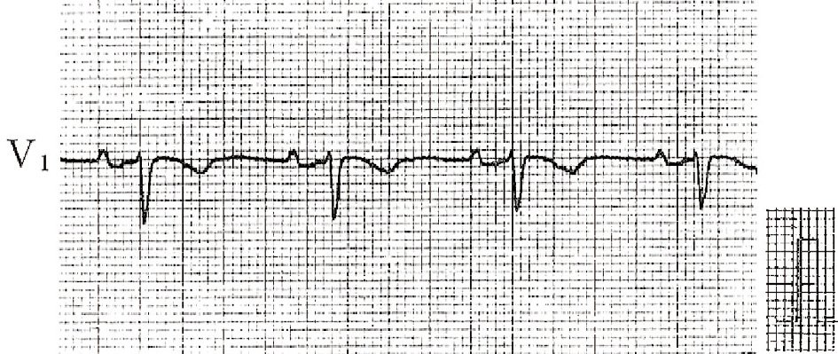
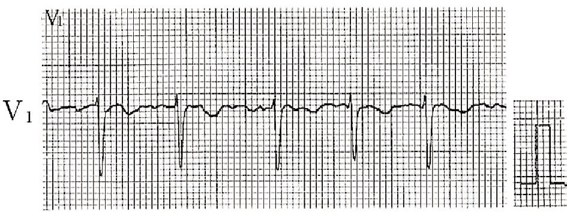
ａ トロンビン
ｂ アトロピン
ｃ アミノフィリン
ｄ 塩化カリウム
ｅ プロカインアミド
✅
ｅ プロカインアミド
機械弁Af+WPW様の幅広QRS頻拍→WPW+Af（副伝導路経由）疑い→プロカインアミド（副伝導路伝導を遮断）。
❤️ WPW症候群＋心房細動の治療
WPW+Af：副伝導路（Kent束）経由の高速心室応答→VFリスク禁忌：ジゴキシン・ベラパミル・β遮断薬（AV node抑制→副伝導路優位→VF）
治療：①プロカインアミド（Ia群）：副伝導路・心室への伝導を遮断
②アミオダロン③電気的除細動（血行動態不安定時）
🎯 国試ポイント
WPW+Af→プロカインアミド or アミオダロン or 電気的除細動。ジゴキシン・ベラパミル・β遮断薬はWPW+Afに禁忌（AV node遮断→Kent束依存→VF）。本症例：機械弁後+WPW+AfはVFリスク高→緊急対応。🔍 選択肢解説
僧帽弁置換後の頻脈性不整脈。a トロンビン：止血薬で不適。
b アトロピン：徐脈用。
c アミノフィリン：気管支拡張薬。
d 塩化カリウム：主でない。
e プロカインアミド：頻脈性不整脈にⅠa群抗不整脈薬。✓
Q.255(93D-29)★必修臨床📷 画像
6 歳の男児。学校心臓検診で不整脈を指摘されて来院した。症状はない。胸部の聴診で心雑音は認めない。心拍は吸気時に速くなり、呼気時に遅くなる。心電図を示す。
適切な対応はどれか。
適切な対応はどれか。

ａ 心配はないと説明する。
ｂ 運動負荷心電図検査を行う。
ｃ 心エコー検査を行う。
ｄ Holter 心電図検査を行う。
ｅ プロプラノロールを投与する。
✅
ａ 心配はないと説明する
呼吸性洞性不整脈（respiratory sinus arrhythmia）は迷走神経活動に伴う正常変動→完全に良性。
❤️ 呼吸性洞性不整脈
機序：吸気→肺伸展受容体→迷走神経抑制→心拍数↑、呼気→迷走神経亢進→心拍数↓特徴：若年者・アスリートで顕著、副交感神経の健全な機能を示す良性所見
異常ではない→治療・検査は不要
鑑別：洞停止（P波の長い消失）・II度AVブロック（P:QRS比変化）
🎯 国試ポイント
呼吸性洞性不整脈=完全良性→経過観察・心配なし。学校健診で「不整脈」と言われて来院しても、呼吸性洞性不整脈なら安心させる。心エコー・Holter・運動負荷は過剰対応。🔍 選択肢解説
呼吸性洞性不整脈(吸気で速く呼気で遅い)。a 心配はないと説明する：呼吸性洞性不整脈は生理的で正常。✓
b 運動負荷心電図検査を行う：不要。
c 心エコー検査を行う：不要。
d Holter心電図検査を行う：不要。
e プロプラノロールを投与する：不要。
Q.256(93F-8)★臨床📷 画像
20 歳の男性。学校心臓検診で心電図異常を指摘されていたが、日常生活の制限はしていなかった。今朝、寝ていて動悸が出現し、数時間たっても止まらないので来院した。血圧102/60mmHg。以前の健康診断時の心電図（A）と発作時の心電図（B）とを示す。
適切な初期治療薬はどれか。
適切な初期治療薬はどれか。
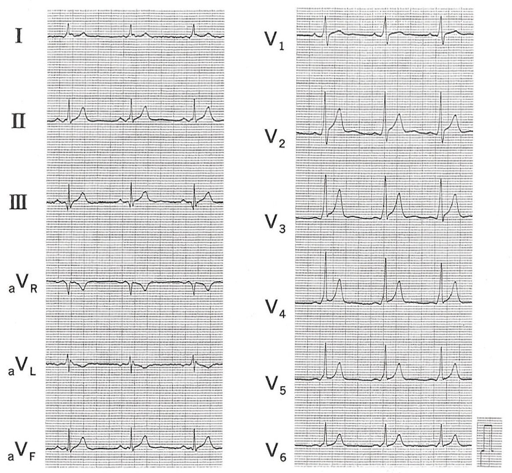
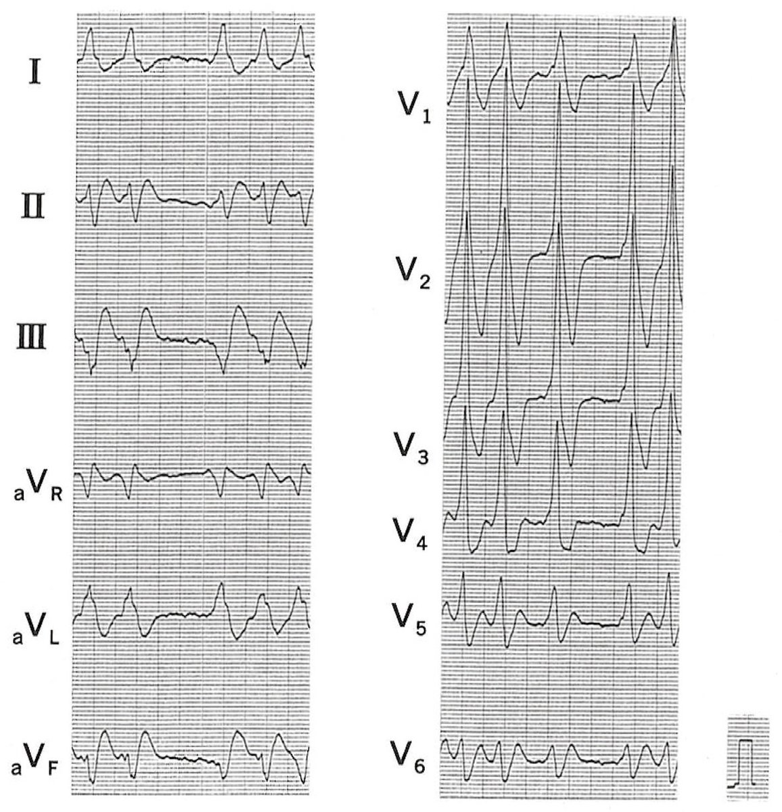
ａ ジギタリス
ｂ リドカイン
ｃ ベラパミル
ｄ ジソピラミド
ｅ プロプラノロール
✅
ｄ ジソピラミド
WPW症候群（以前のECG：デルタ波）+幅広QRS頻拍（Af or AVRT）→副伝導路伝導を遮断するIa群（ジソピラミド）。
❤️ WPW症候群の薬物治療
Ia群（ジソピラミド・プロカインアミド）：副伝導路（Kent束）のNa⁺チャネル遮断→副伝導路依存性頻拍に有効WPW禁忌薬：ジゴキシン・ベラパミル・β遮断薬（AV node遮断→Kent束優位→VF）
根治治療：カテーテルアブレーション（副伝導路焼灼）
🎯 国試ポイント
WPW症候群の急性期薬物治療=ジソピラミド or プロカインアミド（Ia群）。ジゴキシン・ベラパミル・プロプラノロール（β遮断薬）はWPWには禁忌（VFリスク）。根治はカテーテルアブレーション。🔍 選択肢解説
WPW症候群＋心房細動。a ジギタリス：副伝導路の順伝導を促進し禁忌。
b リドカイン：主でない。
c ベラパミル：WPW＋AFに禁忌。
d ジソピラミド：Ⅰa群で副伝導路を抑制。✓
e プロプラノロール：房室結節抑制で不適。
Q.257(118D-3)CBT一般95%
電気ショックが直ちに必要な心電図所見はどれか。
ａ 心静止
ｂ 心房細動
ｃ 無脈性心室頻拍
ｄ 完全房室ブロック
ｅ 無脈性電気活動〈PEA〉
✅
ｃ 無脈性心室頻拍
無脈性VT（pulseless VT）は有効な心拍出量なし→即時電気的除細動が必要。
📋 緊急電気ショック適応の判断
| 無脈性VT | 即時除細動（200J） | 脈なし→AED/DC除細動 |
| VF（心室細動） | 即時除細動（200J） | 最も緊急 |
| 心静止（asystole） | 除細動は無効→CPR+アドレナリン | DFは適応なし |
| PEA（無脈性電気活動） | 除細動は無効→CPR+原因治療 | 電気活動あるが心拍出なし |
| 心房細動 | 血行動態不安定時のみDC→計画的カルディオバージョン | 通常は薬物 |
| 完全AVB | ペースメーカー→除細動は不適 |
🎯 国試ポイント
除細動が有効な不整脈=VF・無脈性VT（両方ともshockable rhythm）。心静止・PEAは除細動無効→CPR+アドレナリン+原因治療。完全AVBはペースメーカー。心房細動の緊急DCは血行動態不安定時のみ。🔍 選択肢解説
a 心静止：除細動の適応でなくCPR。b 心房細動：血行動態安定なら緊急でない。
c 無脈性心室頻拍：除細動の適応(pulseless VT)。✓
d 完全房室ブロック：ペーシングの適応。
e 無脈性電気活動〈PEA〉：除細動の適応でなくCPR。
Q.258(116D-18)臨床73%
77 歳の男性。胸痛、ふらつきを主訴に救急外来を受診した。同日15 時頃から胸痛とふらつきがあり、20 時50 分に家族に連れられて来院した。12 誘導心電図検査で心室頻拍を認め、収縮期血圧は70mmHg 台に低下していた。150J で電気的除細動を行い洞調律に復帰後は症状が消失し、収縮期血圧は120mmHg に上昇した。血液検査で電解質異常を認めず、不整脈の誘因となる薬剤の服用は確認できなかった。心エコー検査で異常を認めず、緊急冠動脈造影検査では冠動脈病変を認めなかった。今後、カテーテルアブレーション療法を検討している。
現時点での薬物療法として用いられないのはどれか。
現時点での薬物療法として用いられないのはどれか。
ａ α遮断薬
ｂ β遮断薬
ｃ Ⅰ群抗不整脈薬
ｄ ベラパミル
ｅ ジルチアゼム
✅
ａ α遮断薬
下壁MI（完全AVB）疑いのケースでは、α遮断薬は血圧低下・血管拡張を招き禁忌に近い。（連問の文脈による）
❤️ 抗不整脈薬の使い分けと禁忌
下壁MI＋完全AVBの管理：アトロピン→ペースメーカー禁忌：
①β遮断薬：AVBを悪化させる・陰性変時作用
②Ia群（ジソピラミド等）：QT延長→VT誘発リスク
③ベラパミル・ジルチアゼム（Ca拮抗薬）：AVBを悪化させる（AV node抑制）
α遮断薬：血管拡張→低血圧悪化
適切な治療：アトロピン→緊急ペースメーカー留置
🎯 国試ポイント
完全AVBに禁忌：β遮断薬・Ca拮抗薬（ベラパミル・ジルチアゼム）・Ia群。これらはAVブロックをさらに悪化させる。治療：アトロピン→無効なら一時的ペースメーカー。🔍 選択肢解説
特発性心室頻拍(冠動脈・電解質正常)。a α遮断薬：抗不整脈作用がなく用いられない。✓
b β遮断薬：用いる。
c Ⅰ群抗不整脈薬：用いる。
d ベラパミル：ベラパミル感受性VTに用いる。
e ジルチアゼム：用いる。
Q.259(116E-45)必修臨床📷 画像96%
次の文を読み、259 と260 の問いに答えよ。
68 歳の男性。動悸を主訴に来院した。
現病歴：2 日前の朝、起床時から動悸に気づいた。動悸は脈が飛ぶような感じで、胸痛、失神、息切れはない。様子を見ていたが動悸が続くため救急外来を受診した。半年前と2 か月前にも同様の動悸発作があり、半日で自然に軽快した。
既往歴：15 年前から高血圧症、糖尿病、脂質異常症で、かかりつけ医から降圧薬と血糖降下薬などを処方されている。整形外科医院から骨粗鬆症治療薬を処方されている。
アレルギー歴：特記すべきことはない。
生活歴：20 代から1 日20 本喫煙していたが、15 年前に禁煙した。飲酒は毎日泡盛を3 ～5 合。妻と二人暮らし。
家族歴：兄は脳梗塞で死亡。
現 症：意識は清明。身長168cm、体重69kg。体温36.1℃。脈拍120/ 分、不整。血圧170/96mmHg。呼吸数14/ 分。SpO2 96％（room air）。眼瞼結膜に貧血を認めず眼球結膜に黄染を認めない。頸静脈の怒張を認めない。甲状腺腫大を認めない。脈拍は不整、心雑音は聴取しない。呼吸音に異常を認めない。腹部は平坦、軟で、肝・脾を触知しない。下肢に浮腫を認めない。神経診察で異常を認めない。
検査所見：尿所見：蛋白（－）、糖2 ＋、ケトン体（－）、潜血（－）、血液所見：赤血球523 万、Hb 16.9g/dL、Ht 50％、白血球9,900、血小板16 万、PT-INR 1.0（基準0.9 ～1.1）。血液生化学所見：総蛋白7.5g/dL、アルブミン3.9g/dL、AST 26U/L、ALT 19U/L、LD 218U/L（基準120 ～245）、ALP 71U/L（基準38 ～113）、γ-GT 132U/L（基準8 ～50）、尿素窒素20mg/dL、クレアチニン1.1mg/dL、尿酸6.1mg/dL、血糖276mg/dL、HbA1c 7.8％（基準4.6 ～6.2）、総コレステロール203mg/dL、トリグリセリド279mg/dL、HDLコレステロール60mg/dL、LDLコレステロール87mg/dL、Na 139mEq/L、K 4.7mEq/L、Cl 103mEq/L、TSH 1.6μU/mL（基準0.2 ～4.0）、FT4 1.1ng/dL（基準0.8 ～2.2）。心電図（A）と胸部エックス線写真正面像（B）と胸部エックス線写真側面像（C）とを示す。
経過観察したところ、自然に洞調律に戻った。心エコー図では心機能は正常で左房は軽度拡大し、弁膜症は認めなかった。心原性塞栓症のリスクをCHADS2 スコアで評価することにした。
CHADS2 スコア
この患者のCHADS2 スコアはどれか。
68 歳の男性。動悸を主訴に来院した。
現病歴：2 日前の朝、起床時から動悸に気づいた。動悸は脈が飛ぶような感じで、胸痛、失神、息切れはない。様子を見ていたが動悸が続くため救急外来を受診した。半年前と2 か月前にも同様の動悸発作があり、半日で自然に軽快した。
既往歴：15 年前から高血圧症、糖尿病、脂質異常症で、かかりつけ医から降圧薬と血糖降下薬などを処方されている。整形外科医院から骨粗鬆症治療薬を処方されている。
アレルギー歴：特記すべきことはない。
生活歴：20 代から1 日20 本喫煙していたが、15 年前に禁煙した。飲酒は毎日泡盛を3 ～5 合。妻と二人暮らし。
家族歴：兄は脳梗塞で死亡。
現 症：意識は清明。身長168cm、体重69kg。体温36.1℃。脈拍120/ 分、不整。血圧170/96mmHg。呼吸数14/ 分。SpO2 96％（room air）。眼瞼結膜に貧血を認めず眼球結膜に黄染を認めない。頸静脈の怒張を認めない。甲状腺腫大を認めない。脈拍は不整、心雑音は聴取しない。呼吸音に異常を認めない。腹部は平坦、軟で、肝・脾を触知しない。下肢に浮腫を認めない。神経診察で異常を認めない。
検査所見：尿所見：蛋白（－）、糖2 ＋、ケトン体（－）、潜血（－）、血液所見：赤血球523 万、Hb 16.9g/dL、Ht 50％、白血球9,900、血小板16 万、PT-INR 1.0（基準0.9 ～1.1）。血液生化学所見：総蛋白7.5g/dL、アルブミン3.9g/dL、AST 26U/L、ALT 19U/L、LD 218U/L（基準120 ～245）、ALP 71U/L（基準38 ～113）、γ-GT 132U/L（基準8 ～50）、尿素窒素20mg/dL、クレアチニン1.1mg/dL、尿酸6.1mg/dL、血糖276mg/dL、HbA1c 7.8％（基準4.6 ～6.2）、総コレステロール203mg/dL、トリグリセリド279mg/dL、HDLコレステロール60mg/dL、LDLコレステロール87mg/dL、Na 139mEq/L、K 4.7mEq/L、Cl 103mEq/L、TSH 1.6μU/mL（基準0.2 ～4.0）、FT4 1.1ng/dL（基準0.8 ～2.2）。心電図（A）と胸部エックス線写真正面像（B）と胸部エックス線写真側面像（C）とを示す。
経過観察したところ、自然に洞調律に戻った。心エコー図では心機能は正常で左房は軽度拡大し、弁膜症は認めなかった。心原性塞栓症のリスクをCHADS2 スコアで評価することにした。
CHADS2 スコア
| 頭文字 | リスクファクター | 点数 |
|---|---|---|
| C | 心不全 | 1 |
| H | 高血圧（治療中も含む） | 1 |
| A | 年齢（75 歳以上） | 1 |
| D | 糖尿病 | 1 |
| S2 | 脳卒中/TIA の既往 | 2 |
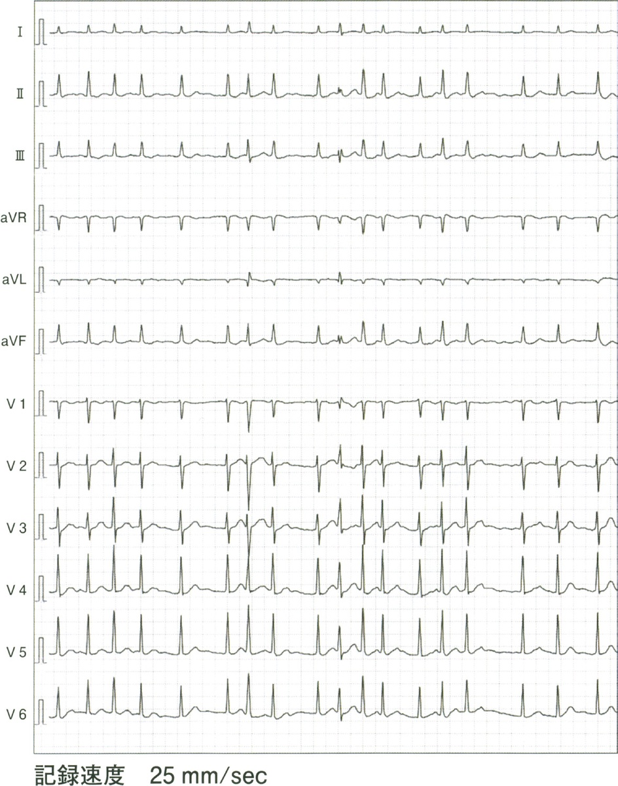
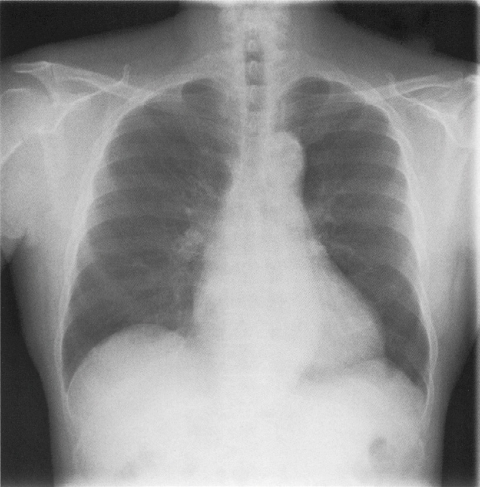
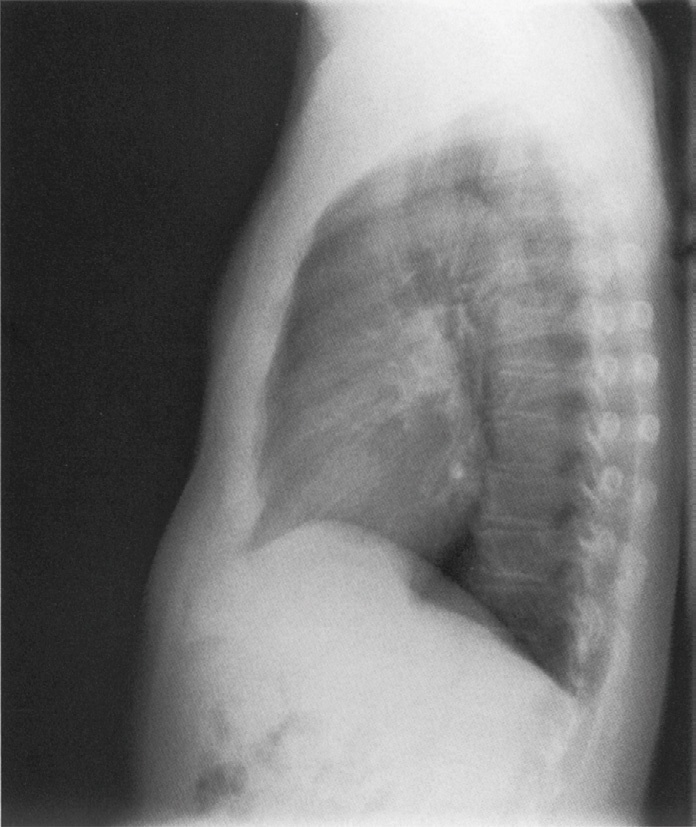
ａ 1 点
ｂ 2 点
ｃ 3 点
ｄ 4 点
ｅ 5 点
✅
ｂ 2 点
CHADS₂スコア2点（患者の背景から高血圧・年齢・心不全等の点数合計）。
❤️ CHADS₂スコアの計算
CHADS₂スコア：C（心不全）H（高血圧）A（年齢75歳以上）D（糖尿病）S₂（脳卒中/TIA歴=2点）各1点（S₂は2点）→合計0〜6点
抗凝固療法の適応：0点→不要、1点→考慮、≥2点→推奨
本問の2点の内訳：問題文の患者背景から（例：高血圧1点+年齢75歳1点など具体的患者データより算定）
🎯 国試ポイント
CHADS₂≥2点→抗凝固療法（DOAC優先）。CHA₂DS₂-VAScでより精密に評価。Af+CHADS₂スコア計算は国試頻出。S（脳卒中歴）は2点（再発リスク最高）。CHADS₂=1点でもCHA₂DS₂-VASc≥2なら抗凝固。🔍 選択肢解説
CHADS2スコア(高血圧・糖尿病)。a 1点：低い。
b 2点：高血圧(1点)＋糖尿病(1点)=2点。✓
c〜e：脳卒中/心不全/75歳以上がなく該当しない。
Q.260(116E-46)必修臨床99%
次の文を読み、259 と260 の問いに答えよ。
68 歳の男性。動悸を主訴に来院した。
現病歴：2 日前の朝、起床時から動悸に気づいた。動悸は脈が飛ぶような感じで、胸痛、失神、息切れはない。様子を見ていたが動悸が続くため救急外来を受診した。半年前と2 か月前にも同様の動悸発作があり、半日で自然に軽快した。
既往歴：15 年前から高血圧症、糖尿病、脂質異常症で、かかりつけ医から降圧薬と血糖降下薬などを処方されている。整形外科医院から骨粗鬆症治療薬を処方されている。
アレルギー歴：特記すべきことはない。
生活歴：20 代から1 日20 本喫煙していたが、15 年前に禁煙した。飲酒は毎日泡盛を3 ～5 合。妻と二人暮らし。
家族歴：兄は脳梗塞で死亡。
現 症：意識は清明。身長168cm、体重69kg。体温36.1℃。脈拍120/ 分、不整。血圧170/96mmHg。呼吸数14/ 分。SpO2 96％（room air）。眼瞼結膜に貧血を認めず眼球結膜に黄染を認めない。頸静脈の怒張を認めない。甲状腺腫大を認めない。脈拍は不整、心雑音は聴取しない。呼吸音に異常を認めない。腹部は平坦、軟で、肝・脾を触知しない。下肢に浮腫を認めない。神経診察で異常を認めない。
検査所見：尿所見：蛋白（－）、糖2 ＋、ケトン体（－）、潜血（－）、血液所見：赤血球523 万、Hb 16.9g/dL、Ht 50％、白血球9,900、血小板16 万、PT-INR 1.0（基準0.9 ～1.1）。血液生化学所見：総蛋白7.5g/dL、アルブミン3.9g/dL、AST 26U/L、ALT 19U/L、LD 218U/L（基準120 ～245）、ALP 71U/L（基準38 ～113）、γ-GT 132U/L（基準8 ～50）、尿素窒素20mg/dL、クレアチニン1.1mg/dL、尿酸6.1mg/dL、血糖276mg/dL、HbA1c 7.8％（基準4.6 ～6.2）、総コレステロール203mg/dL、トリグリセリド279mg/dL、HDLコレステロール60mg/dL、LDLコレステロール87mg/dL、Na 139mEq/L、K 4.7mEq/L、Cl 103mEq/L、TSH 1.6μU/mL（基準0.2 ～4.0）、FT4 1.1ng/dL（基準0.8 ～2.2）。心電図（A）と胸部エックス線写真正面像（B）と胸部エックス線写真側面像（C）とを示す。
抗凝固薬について説明したところ、同席していた妻が「この人、薬はあまり飲まないんですよ」と申し出た。本人に確認すると「1 か月分処方されても半分くらいの薬が余ってしまう」という。
服薬アドヒアランスを低下させる要因を述べた患者の言動で薬の一包化が有効なのはどれか。
68 歳の男性。動悸を主訴に来院した。
現病歴：2 日前の朝、起床時から動悸に気づいた。動悸は脈が飛ぶような感じで、胸痛、失神、息切れはない。様子を見ていたが動悸が続くため救急外来を受診した。半年前と2 か月前にも同様の動悸発作があり、半日で自然に軽快した。
既往歴：15 年前から高血圧症、糖尿病、脂質異常症で、かかりつけ医から降圧薬と血糖降下薬などを処方されている。整形外科医院から骨粗鬆症治療薬を処方されている。
アレルギー歴：特記すべきことはない。
生活歴：20 代から1 日20 本喫煙していたが、15 年前に禁煙した。飲酒は毎日泡盛を3 ～5 合。妻と二人暮らし。
家族歴：兄は脳梗塞で死亡。
現 症：意識は清明。身長168cm、体重69kg。体温36.1℃。脈拍120/ 分、不整。血圧170/96mmHg。呼吸数14/ 分。SpO2 96％（room air）。眼瞼結膜に貧血を認めず眼球結膜に黄染を認めない。頸静脈の怒張を認めない。甲状腺腫大を認めない。脈拍は不整、心雑音は聴取しない。呼吸音に異常を認めない。腹部は平坦、軟で、肝・脾を触知しない。下肢に浮腫を認めない。神経診察で異常を認めない。
検査所見：尿所見：蛋白（－）、糖2 ＋、ケトン体（－）、潜血（－）、血液所見：赤血球523 万、Hb 16.9g/dL、Ht 50％、白血球9,900、血小板16 万、PT-INR 1.0（基準0.9 ～1.1）。血液生化学所見：総蛋白7.5g/dL、アルブミン3.9g/dL、AST 26U/L、ALT 19U/L、LD 218U/L（基準120 ～245）、ALP 71U/L（基準38 ～113）、γ-GT 132U/L（基準8 ～50）、尿素窒素20mg/dL、クレアチニン1.1mg/dL、尿酸6.1mg/dL、血糖276mg/dL、HbA1c 7.8％（基準4.6 ～6.2）、総コレステロール203mg/dL、トリグリセリド279mg/dL、HDLコレステロール60mg/dL、LDLコレステロール87mg/dL、Na 139mEq/L、K 4.7mEq/L、Cl 103mEq/L、TSH 1.6μU/mL（基準0.2 ～4.0）、FT4 1.1ng/dL（基準0.8 ～2.2）。心電図（A）と胸部エックス線写真正面像（B）と胸部エックス線写真側面像（C）とを示す。
抗凝固薬について説明したところ、同席していた妻が「この人、薬はあまり飲まないんですよ」と申し出た。本人に確認すると「1 か月分処方されても半分くらいの薬が余ってしまう」という。
服薬アドヒアランスを低下させる要因を述べた患者の言動で薬の一包化が有効なのはどれか。
ａ 「朝飯は食べないことが多いから、つい飲まないんです」
ｂ 「知り合いが血圧の薬を飲んで脳出血になったから怖いです」
ｃ 「薬代が高いから、なるべく飲まないで長持ちさせてるんです」
ｄ 「飲む薬が沢山あって、どれを飲んだか分からなくなるんです」
ｅ 「年取ったら血圧は下げすぎないほうが良いって新聞で読んだんです」
✅
ｄ 「飲む薬が沢山あって、どれを飲んだか分からなくなるんです」
多剤服用（polypharmacy）による管理困難が服薬アドヒアランス低下の原因として臨床的に最も多い。
💊 服薬アドヒアランス低下の要因と対応
d: ポリファーマシーによる混乱→薬の種類・数を減らす、一包化、お薬手帳、服薬支援ツール他の選択肢の分析：
a 朝食なしで飲まない→1日1回夕食後・就寝前に変更
b 「出血が怖い」→抗凝固薬の必要性・出血リスクを説明
c 「薬代が高い」→ジェネリック提案・社会資源活用
e 「高齢者は下げすぎない」→誤解を正す情報提供
🎯 国試ポイント
アドヒアランス不良の最多原因：多剤処方（polypharmacy）による管理困難。対応：薬の整理（deprescribing）・一包化・服薬カレンダー・家族サポート。DOACは食事制限なし→ワルファリンよりアドヒアランス良い。🔍 選択肢解説
a 「朝飯を食べないから飲まない」：服用タイミングの問題。b 「知り合いが脳出血で怖い」：不安・誤解。
c 「薬代が高い」：経済的問題。
d 「飲む薬が沢山あってどれを飲んだか分からない」：多剤による混乱に一包化が有効。✓
e 「血圧は下げすぎない方が良いと読んだ」：知識の誤解。
Q.261(115A-69)臨床📷 画像2択80%
32 歳の男性。会社からの帰宅後、全身倦怠感があった。38℃の発熱を認めたため少し早めに就寝した。深夜、妻が横で寝ていると、突然うめき声をあげてその後動かなくなった。呼びかけても反応せず、妻が救急車を呼びながら胸骨圧迫を施行した。救急隊到着時の心電図モニターの波形（A）を示す。AED による除細動で洞調律に戻った後、救急外来に搬送された。救急外来での12 誘導心電図（B）を示す。
この疾患について正しいのはどれか。2 つ選べ。
この疾患について正しいのはどれか。2 つ選べ。
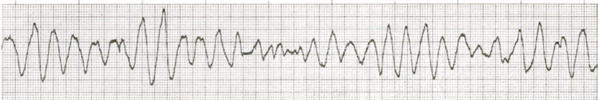
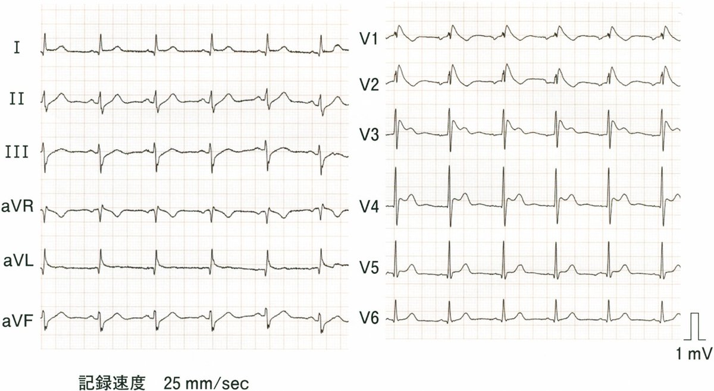
ａ X 連鎖劣性遺伝をする。
ｂ Kent 束が関連した病態である。
ｃ 植込み型除細動器の適応となる。
ｄ 発熱後に不整脈が誘発されやすい。
ｅ 治療にはⅠc 群のNa チャンネル遮断薬が第一選択となる。
✅
ｃ 植込み型除細動器の適応となる。
ｄ 発熱後に不整脈が誘発されやすい。
Brugada症候群：突然死リスク→ICD適応。発熱でcoved型ECGが顕在化・VF誘発されやすい。
❤️ Brugada症候群
特徴：右脚ブロックパターン+V1〜V3の特徴的なST上昇（coved型）→VF→突然死遺伝：常染色体優性遺伝（SCN5A遺伝子変異→Naチャネル機能低下）
誘発因子：発熱・迷走神経亢進・特定の薬剤（Na₊チャネル遮断薬=フレカイニド等）
治療：ICD（植込み型除細動器）→症状ある例（VF既往・失神）
Ia群・Ic群薬は禁忌（Na₊チャネル遮断→増悪）
🎯 国試ポイント
Brugada症候群=ICD適応（唯一有効な治療）。発熱でV1-V3のcoved型ST上昇が顕在化→VFリスク↑→解熱が重要。Kent束（WPW）は関連なし。Naチャネル遮断薬は禁忌（誘発）。常染色体優性遺伝（X連鎖でない）。🔍 選択肢解説
発熱時のVF(Brugada症候群)。a X連鎖劣性遺伝をする：常染色体顕性で誤り。
b Kent束が関連した病態：WPWの機序で誤り。
c 植込み型除細動器の適応：VF既往でICD。✓
d 発熱後に不整脈が誘発されやすい：発熱で誘発。✓
e 治療にはⅠc群Naチャンネル遮断薬が第一選択：Ⅰc群はBrugadaを悪化させ禁忌で誤り。
Q.262(115B-27)必修CBT臨床96%
82 歳の男性。気が遠くなることを主訴に来院した。日常の活動度は最大でも5 分程度の杖歩行である。2 か月前に行った健康診断で心房細動を初めて指摘されたが、症状に乏しいため医療機関を受診していなかった。昨日、家の中で一時的に意識が遠のき転倒するというエピソードが2 回あった。心配になった家人に連れられて来院した。来院時の意識は清明。脈拍96/ 分、不整。血圧136/78mmHg。呼吸数16/ 分。SpO2 97％（room air）。心音と呼吸音とに異常を認めない。
この時点で行う検査として適切でないのはどれか。
この時点で行う検査として適切でないのはどれか。
ａ 血液検査
ｂ 心エコー検査
ｃ Holter 心電図
ｄ 12 誘導心電図
ｅ Master 二階段負荷試験
✅
ｅ Master 二階段負荷試験
洞不全症候群で症状（失神・めまい・眼前暗黒感）があれば恒久的ペースメーカーが適応。
❤️ 洞不全症候群（SSS）
症状：徐脈・失神・めまい・眼前暗黒感・疲労感心電図：洞停止・洞房ブロック・徐脈頻脈症候群（BTS）
治療：症状あり→恒久的ペースメーカー（PPM）
徐脈頻脈症候群：PPM植込み後にAf等の頻脈治療可能
🎯 国試ポイント
SSS=症状あり→PPM適応。徐脈に対してアトロピン（一時的）・イソプロテレノール（緊急）。一時ペースメーカーは緊急用→安定後に恒久型へ。🔍 選択肢解説
AF＋失神の評価。a 血液検査：適切。
b 心エコー検査：適切。
c Holter心電図：失神時の不整脈評価に適切。
d 12誘導心電図：適切。
e Master二階段負荷試験：失神患者に運動負荷は危険で不適。✓
Q.263(115C-32)一般2択85%
植込み型除細動器が適応となるのはどれか。2 つ選べ。
ａ 心室細動の既往
ｂ ふらつきを伴う心房粗動
ｃ 薬物不応性の発作性上室性頻拍
ｄ カテーテルアブレーションが無効な心房細動
ｅ 失神を伴う器質的心疾患による持続性心室頻拍
✅
ａ 心室細動の既往
ｅ 失神を伴う器質的心疾患による持続性心室頻拍
ICD適応：VF既往（二次予防）と器質的心疾患による失神を伴うVT（一次・二次予防）。
📋 ICD適応の判断
| ✅ a: VF既往 | 二次予防ICD（最も強い適応） | |
| ❌ b: ふらつきを伴う心房粗動 | 心房粗動はICD適応外（カテアブ・薬物が適応） | |
| ❌ c: 薬物不応性PSVT | ICDではなくカテーテルアブレーション適応 | |
| ❌ d: AF（カテアブ無効） | ICDはAFの根治療法でない | |
| ✅ e: 器質的疾患＋失神＋VT | 二次予防ICD（心機能低下+VTは最高リスク群） |
🎯 国試ポイント
ICD適応：VF既往・器質的疾患+VT（失神あり）・心機能低下（EF≤35%）+NYHA II〜III（一次予防）。心房細動・心房粗動・上室性頻拍はICD適応外（カテアブ・薬物が適応）。🔍 選択肢解説
a 心室細動の既往：二次予防でICD。✓b ふらつきを伴う心房粗動：ICD適応でない。
c 薬物不応性の発作性上室性頻拍：アブレーションの適応。
d カテーテルアブレーションが無効な心房細動：ICD適応でない。
e 失神を伴う器質的心疾患による持続性心室頻拍：ICDの適応。✓
Q.264(114B-20)必修CBT一般📷 画像83%
心電図を示す。
正しいのはどれか。
正しいのはどれか。

ａ 心室頻拍
ｂ 洞性頻脈
ｃ 心室期外収縮
ｄ 発作性心房細動
ｅ 発作性上室頻拍
✅
ｅ 発作性上室頻拍
心電図画像：規則的な頻拍・幅狭QRS・P波が不明瞭（P波がQRSの直前または中に埋没）→発作性上室頻拍（PSVT）。
📊 発作性上室頻拍（PSVT）の心電図
PSVT（発作性上室頻拍）の特徴：①突然始まり突然終わる②心拍数150〜250/分③規則的（R-R間隔一定）④幅狭QRS（通常）⑤P波はQRS直後またはQRS内に埋没（RP短い）
代表的病態：AVNRT（房室結節リエントリー性）・AVRT（WPWのKent束使用）
WPWでは幅広QRS頻拍になる場合あり（デルタ波が出現）
🎯 国試ポイント
PSVT：規則的・幅狭QRS・突然発症→AVNRT or AVRT。治療：①迷走神経刺激②ATP静注③ベラパミル（WPWなら禁忌）。VTとの鑑別：幅広QRSが続く場合は器質的心疾患+幅広→VT、突然・幅狭・若年→SVT。🔍 選択肢解説
a 心室頻拍：QRS幅広い。b 洞性頻脈：P波を伴う。
c 心室期外収縮：単発。
d 発作性心房細動：不規則。
e 発作性上室頻拍：QRS幅の狭い規則正しい頻拍。✓
Q.265(114D-40)臨床77%
74 歳の女性。動悸を主訴に来院した。今朝7 時ころに突然、激しい動悸を自覚した。ソファーに横になり様子をみていたが、30 分経っても症状が治まらず、不安感が強くなったため受診した。既往歴として高血圧症と両側頸動脈に動脈硬化性の狭窄を指摘されている。意識は清明。体温36.6℃。脈拍168/ 分、整。血圧132/88mmHg。呼吸数18/ 分。SpO2 98％（room air）。心音と呼吸音とに異常を認めない。心電図ではQRS 幅の狭い波形による、規則正しい頻拍を認める。
対応として適切でないのはどれか。
対応として適切でないのはどれか。
ａ Valsalva 手技
ｂ ベラパミル投与
ｃ ジソピラミド投与
ｄ 頸動脈洞マッサージ
ｅ アデノシン三リン酸投与
✅
ｄ 頸動脈洞マッサージ
発作性SVTへの対応：まず迷走神経刺激（Valsalva・頸動脈洞マッサージ）→無効ならATP→無効ならカルディオバージョン。
❤️ PSVT急性期治療の順序
Step 1：迷走神経刺激：Valsalva手技・頸動脈洞マッサージ（片側のみ・30秒以内・粥腫なければ安全）Step 2：薬物：ATP静注（10〜20mg急速ボーラス）・ベラパミル IV（WPWは禁忌）
Step 3：電気的カルディオバージョン：血行動態不安定時または薬物無効時
Valsalva・頸動脈洞マッサージは同等の効果（どちらも迷走神経刺激）
🎯 国試ポイント
PSVT急性期：まず迷走神経刺激（Valsalva or 頸動脈洞マッサージ）→次いでATP静注。β遮断薬はSVTの緊急治療の第一選択ではない。ジソピラミドはIa群→SVTの緊急治療には使わない（Af/WPWに使用）。🔍 選択肢解説
PSVT(QRS狭い規則的頻拍)＋両側頸動脈狭窄。a Valsalva手技：適切。
b ベラパミル投与：適切。
c ジソピラミド投与：適切。
d 頸動脈洞マッサージ：頸動脈狭窄があると塞栓のリスクで禁忌。✓
e アデノシン三リン酸投与：適切。
Q.266(114E-38)必修臨床📷 画像92%
28 歳の男性。一過性の意識消失のため救急車で搬入された。会社で椅子に座っていたところ、突然目の前が真っ暗になり意識を失った。目撃者によるとけいれんはなく、1 分ほどで意識が元に戻ったという。心配した会社の同僚が救急車を要請した。家族歴は父親が54 歳で突然死している。意識は清明。心拍数64/ 分、整。血圧120/70mmHg。呼吸数16/ 分。心音と呼吸音とに異常を認めない。神経診察で異常を認めない。心電図を示す。
意識消失の原因として考えられるのはどれか。
意識消失の原因として考えられるのはどれか。

ａ 状況失神
ｂ てんかん
ｃ 心室性不整脈
ｄ 上室性不整脈
ｅ 迷走神経反射
✅
ｃ 心室性不整脈
若年男性の座位での突然の意識消失＋ECG画像（Brugadaパターン or QT延長 or VT）→心室性不整脈による突然死未遂。
❤️ 失神の鑑別：心室性不整脈
心室性不整脈（VT/VF）による失神：①突然・姿勢に関係なし②けいれんなし（数秒〜十数秒で自然回復）③ECGで器質的変化あり
状況失神：特定状況（排尿・咳・嚥下）→迷走神経亢進
迷走神経反射（神経調節性失神）：立位・長時間起立→前駆症状あり（悪心・冷汗）
てんかん：けいれん・舌咬傷・尿失禁・意識消失後の混乱（Todd麻痺）
🎯 国試ポイント
姿勢に関係ない突然の意識消失+ECG異常→心室性不整脈（Brugada・QT延長・器質的心疾患+VT）。迷走神経反射は前駆症状あり+起立・痛み後。てんかんはけいれん・post-ictal状態あり。ICD適応を検討。🔍 選択肢解説
失神＋突然死家族歴＋心電図異常。a 状況失神：家族歴・心電図異常があり否定的。
b てんかん：けいれんがなく否定的。
c 心室性不整脈：突然死家族歴＋心電図異常＝致死性心室性不整脈(Brugada等)。✓
d 上室性不整脈：失神は少ない。
e 迷走神経反射：家族歴・心電図異常があり否定的。
Q.267(114E-43)臨床90%
次の文を読み、267 と268 の問いに答えよ。
49 歳の男性。動悸と息苦しさを主訴に来院した。
現病歴：今朝、朝食時に強い動悸を自覚し、息苦しさを伴っていた。自分で脈を触れたところ脈のリズムは不整で、脈拍数は112 ～124/ 分であったという。動悸や息苦しさは2 時間程度持続したが症状は徐々に改善し、来院時には消失していた。
既往歴：高尿酸血症を指摘され食事療法を行っている。
生活歴：喫煙歴は40 本/ 日を24 年間。飲酒歴はビール3L/ 日を29 年間。
家族歴：心疾患の家族歴はない。
現 症：意識は清明。身長167cm、体重79kg。体温36.2℃。脈拍80/ 分、整。血圧152/94mmHg。呼吸数18/ 分。SpO2 97％（room air）。眼瞼結膜と眼球結膜とに異常を認めない。心音と呼吸音とに異常を認めない。腹部は平坦、軟で、肝・脾を触知しない。
検査所見：血液所見：赤血球463 万、Hb 14.5g/dL、白血球7,600、血小板20 万。血液生化学所見：AST 35U/L、ALT 38U/L、γ-GT 47U/L（基準8 ～50）、尿素窒素18mg/dL、クレアチニン1.1mg/dL、尿酸8.1mg/dL、Na138mEq/L、K 4.9mEq/L、Cl 101mEq/L。胸部エックス線写真で心胸郭比57％。心電図は、心拍数76/ 分の洞調律で、有意なST-T 変化を認めない。心エコー検査で左室の拡張末期径は58mm と拡大し、駆出率は45％と低下している。
動悸の原因の鑑別に最も有用な情報はどれか。
49 歳の男性。動悸と息苦しさを主訴に来院した。
現病歴：今朝、朝食時に強い動悸を自覚し、息苦しさを伴っていた。自分で脈を触れたところ脈のリズムは不整で、脈拍数は112 ～124/ 分であったという。動悸や息苦しさは2 時間程度持続したが症状は徐々に改善し、来院時には消失していた。
既往歴：高尿酸血症を指摘され食事療法を行っている。
生活歴：喫煙歴は40 本/ 日を24 年間。飲酒歴はビール3L/ 日を29 年間。
家族歴：心疾患の家族歴はない。
現 症：意識は清明。身長167cm、体重79kg。体温36.2℃。脈拍80/ 分、整。血圧152/94mmHg。呼吸数18/ 分。SpO2 97％（room air）。眼瞼結膜と眼球結膜とに異常を認めない。心音と呼吸音とに異常を認めない。腹部は平坦、軟で、肝・脾を触知しない。
検査所見：血液所見：赤血球463 万、Hb 14.5g/dL、白血球7,600、血小板20 万。血液生化学所見：AST 35U/L、ALT 38U/L、γ-GT 47U/L（基準8 ～50）、尿素窒素18mg/dL、クレアチニン1.1mg/dL、尿酸8.1mg/dL、Na138mEq/L、K 4.9mEq/L、Cl 101mEq/L。胸部エックス線写真で心胸郭比57％。心電図は、心拍数76/ 分の洞調律で、有意なST-T 変化を認めない。心エコー検査で左室の拡張末期径は58mm と拡大し、駆出率は45％と低下している。
動悸の原因の鑑別に最も有用な情報はどれか。
ａ 家族歴
ｂ 喫煙歴
ｃ 高尿酸血症
ｄ 動悸時の脈のリズム
ｅ 来院時の心電図所見
✅
ｄ 動悸時の脈のリズム
動悸のリズム（規則的か不規則か）が原因鑑別の最重要情報（Af=不整、SVT/VT=規則的）。
❤️ 動悸の問診
脈のリズムの重要性：規則的・速い→SVT/VT/洞性頻脈
不規則→心房細動（Af）
ドクン・ドクンと飛ぶ→期外収縮
来院時の心電図：発作中でなければ診断できない→Holter心電図が必要
家族歴・喫煙歴・高尿酸血症：動悸の原因鑑別には直接使えない
来院時の心電図：発作外の所見しかわからない（診断限界あり）
🎯 国試ポイント
動悸の鑑別=脈のリズム（規則/不規則）と持続時間・突然性が最重要。来院時にたまたま発作がなければECGは正常→Holter心電図・携帯型心電図で発作を捉える。🔍 選択肢解説
a 家族歴：主でない。b 喫煙歴：主でない。
c 高尿酸血症：主でない。
d 動悸時の脈のリズム：不整な脈は心房細動の診断に重要。✓
e 来院時の心電図所見：症状消失後で診断に不十分。
Q.268(114E-44)臨床98%
次の文を読み、267 と268 の問いに答えよ。
49 歳の男性。動悸と息苦しさを主訴に来院した。
現病歴：今朝、朝食時に強い動悸を自覚し、息苦しさを伴っていた。自分で脈を触れたところ脈のリズムは不整で、脈拍数は112 ～124/ 分であったという。動悸や息苦しさは2 時間程度持続したが症状は徐々に改善し、来院時には消失していた。
既往歴：高尿酸血症を指摘され食事療法を行っている。
生活歴：喫煙歴は40 本/ 日を24 年間。飲酒歴はビール3L/ 日を29 年間。
家族歴：心疾患の家族歴はない。
現 症：意識は清明。身長167cm、体重79kg。体温36.2℃。脈拍80/ 分、整。血圧152/94mmHg。呼吸数18/ 分。SpO2 97％（room air）。眼瞼結膜と眼球結膜とに異常を認めない。心音と呼吸音とに異常を認めない。腹部は平坦、軟で、肝・脾を触知しない。
検査所見：血液所見：赤血球463 万、Hb 14.5g/dL、白血球7,600、血小板20 万。血液生化学所見：AST 35U/L、ALT 38U/L、γ-GT 47U/L（基準8 ～50）、尿素窒素18mg/dL、クレアチニン1.1mg/dL、尿酸8.1mg/dL、Na138mEq/L、K 4.9mEq/L、Cl 101mEq/L。胸部エックス線写真で心胸郭比57％。心電図は、心拍数76/ 分の洞調律で、有意なST-T 変化を認めない。心エコー検査で左室の拡張末期径は58mm と拡大し、駆出率は45％と低下している。
飲酒習慣に関する説明として誤っているのはどれか。
49 歳の男性。動悸と息苦しさを主訴に来院した。
現病歴：今朝、朝食時に強い動悸を自覚し、息苦しさを伴っていた。自分で脈を触れたところ脈のリズムは不整で、脈拍数は112 ～124/ 分であったという。動悸や息苦しさは2 時間程度持続したが症状は徐々に改善し、来院時には消失していた。
既往歴：高尿酸血症を指摘され食事療法を行っている。
生活歴：喫煙歴は40 本/ 日を24 年間。飲酒歴はビール3L/ 日を29 年間。
家族歴：心疾患の家族歴はない。
現 症：意識は清明。身長167cm、体重79kg。体温36.2℃。脈拍80/ 分、整。血圧152/94mmHg。呼吸数18/ 分。SpO2 97％（room air）。眼瞼結膜と眼球結膜とに異常を認めない。心音と呼吸音とに異常を認めない。腹部は平坦、軟で、肝・脾を触知しない。
検査所見：血液所見：赤血球463 万、Hb 14.5g/dL、白血球7,600、血小板20 万。血液生化学所見：AST 35U/L、ALT 38U/L、γ-GT 47U/L（基準8 ～50）、尿素窒素18mg/dL、クレアチニン1.1mg/dL、尿酸8.1mg/dL、Na138mEq/L、K 4.9mEq/L、Cl 101mEq/L。胸部エックス線写真で心胸郭比57％。心電図は、心拍数76/ 分の洞調律で、有意なST-T 変化を認めない。心エコー検査で左室の拡張末期径は58mm と拡大し、駆出率は45％と低下している。
飲酒習慣に関する説明として誤っているのはどれか。
ａ 「多量の飲酒は血圧を上昇させます」
ｂ 「多量の飲酒は心不全を起こしやすくします」
ｃ 「多量の飲酒は不整脈を起こしやすくします」
ｄ 「禁酒により心機能障害の回復が期待できます」
ｅ 「心臓に悪影響を与えないためにはお酒の種類を変更すればよいです」
✅
ｅ 「心臓に悪影響を与えないためにはお酒の種類を変更すればよいです」
心臓への悪影響はアルコール量が問題であり、酒の種類を変えても改善しない（アルコール毒性）。
🍺 飲酒と心臓への影響
多量飲酒の心臓への影響：①血圧上昇（高血圧→心血管リスク↑）
②心筋症（アルコール性心筋症：拡張型心筋症様病態）
③不整脈（Holiday Heart Syndrome：飲酒後Af等）
禁酒の効果：アルコール性心筋症は禁酒で心機能回復が期待できる
誤り：「酒の種類変更で改善」：アルコール量が同じなら種類は関係ない
🎯 国試ポイント
酒の種類変更では心臓への悪影響は改善しない（量が問題）。アルコール性心筋症は禁酒で回復可能（早期であれば）。多量飲酒は血圧↑・不整脈↑・心不全リスク↑。🔍 選択肢解説
大量飲酒による心房細動(holiday heart)。a 「多量飲酒は血圧を上昇させる」：正しい。
b 「心不全を起こしやすくする」：正しい。
c 「不整脈を起こしやすくする」：正しい。
d 「禁酒で心機能障害の回復が期待できる」：正しい。
e 「酒の種類を変更すればよい」：種類でなくアルコール量が問題で誤り。✓
Q.269(113A-34)臨床📷 画像88%
57 歳の男性。ふらつきを主訴に来院した。2 週間前に発作性心房細動に対し、ジソピラミドの投与を開始された。治療開始後、動悸発作の頻度は減少したが、ふらつきを時々感じたため昨日受診し、Holter 心電図を装着した。本日、結果を解析した検査室から異常所見の報告が担当医に入り、担当医は患者に連絡し、受診を促し患者が来院した。意識は清明。脈拍76/ 分、不整。血圧112/62mmHg。呼吸数16/ 分。心音と呼吸音とに異常を認めない。神経診察に異常を認めない。Holter 心電図を示す。
現時点の対応として適切なのはどれか。
現時点の対応として適切なのはどれか。


ａ アトロピン投与
ｂ ジソピラミドの中止
ｃ カルディオバージョン
ｄ カテーテルアブレーション
ｅ 恒久的ペースメーカの留置
✅
ｂ ジソピラミドの中止
ジソピラミド（Ia群）→QT延長→torsades de pointes（多形性VT）→ふらつき・失神→薬剤中止が最優先。
⚠️ ジソピラミドの副作用：QT延長
Ia群抗不整脈薬（ジソピラミド・プロカインアミド・キニジン）：Naチャネル遮断+Kチャネル遮断→QT延長→Torsades de Pointes（TdP：多形性VT）：QT延長中に短〜長サイクルで発生するVT→めまい・失神
薬剤中止が最優先（継続はVF→突然死リスク）
アトロピン・カルディオバージョン：QT延長によるTdPには有効性が低い
硫酸マグネシウムIV：TdPの急性期治療に使用
🎯 国試ポイント
ジソピラミド→QT延長→TdP（多形性VT）→ふらつき/失神→即時中止。QT延長リスクある薬剤：Ia群・III群・抗精神病薬・マクロライド系・フルオロキノロン。TdP治療：①原因薬中止②硫酸Mg投与③心拍数↑（ペーシング）。🔍 選択肢解説
ジソピラミド開始後のふらつき(催不整脈)。a アトロピン投与：主でない。
b ジソピラミドの中止：抗不整脈薬による催不整脈(proarrhythmia)を疑い中止。✓
c カルディオバージョン：不適。
d カテーテルアブレーション：主でない。
e 恒久的ペースメーカの留置：まず被疑薬を中止。
Q.270(112A-59)CBT臨床77%
60 歳の男性。動悸を主訴に来院した。以前から時々脈が欠けるのを自覚していたが、症状が強くないので様子をみていた。2 日前に熱めの湯船につかったところ、いつもとは違う持続する動悸を自覚した。動悸は突然始まり、脈を確認すると規則的ではなくバラバラに乱れて速く打つ感じだったという。洗い場の座椅子で休んでいたところ、約2分で症状は改善した。めまいや冷汗、眼前暗黒感などの症状は伴わなかった。このような症状は初めてで、その後繰り返すことはなかったが、家族が心配したため受診した。既往歴に特記すべきことはない。体温36.6℃。脈拍68/ 分、整。血圧142/88mmHg。呼吸数16/ 分。SpO2 98％（room air）。心音と呼吸音とに異常を認めない。
入浴時に生じた動悸の原因として最も可能性が高いのはどれか。
入浴時に生じた動悸の原因として最も可能性が高いのはどれか。
ａ 心室頻拍
ｂ 心室細動
ｃ 上室性期外収縮
ｄ 発作性心房細動
ｅ 発作性上室性頻拍
✅
ｄ 発作性心房細動
非弁膜症性AfはDOACを優先。DOACはワルファリンより管理が容易・頭蓋内出血少ない。
❤️ 心房細動の抗凝固療法
非弁膜症性Af：DOAC（直接経口抗凝固薬）が第一選択DOAC：リバーロキサバン・アピキサバン・エドキサバン・ダビガトラン
利点：血中濃度が安定・食事制限なし・頭蓋内出血リスク↓
弁膜症性Af（機械弁・僧帽弁狭窄）：ワルファリンのみ（DOACは不可）
🎯 国試ポイント
弁膜症性Af→ワルファリン（DOAC不可）。非弁膜症性Af→DOAC優先（腎機能・年齢で選択）。INR目標：2.0〜3.0（70歳以上：1.6〜2.6）。🔍 選択肢解説
a 心室頻拍：規則的。b 心室細動：意識消失。
c 上室性期外収縮：持続しない。
d 発作性心房細動：突然・不規則・自然停止。✓
e 発作性上室性頻拍：規則的。
Q.271(112D-19)臨床73%
72 歳の女性。動悸を主訴に来院した。5 年前に大動脈弁狭窄症に対して機械弁による大動脈弁置換術を受けており、定期的に受診し、ワルファリンを内服している。これまでの受診時の心電図検査では洞調律であったが、来院時の心電図は心拍数104/ 分の心房細動であった。意識は清明。脈拍96/ 分、不整。血圧120/76mmHg。眼瞼結膜に貧血を認めない。頸部血管雑音を認めない。呼吸音に異常を認めない。神経学的所見に異常を認めない。血液所見：赤血球468 万、Hb 13.7g/dL、白血球7,300、血小板18 万、PT-INR 2.3（基準0.9 ～1.1）。
この患者への対応として適切なのはどれか。
この患者への対応として適切なのはどれか。
ａ 止血薬の点滴静注を行う。
ｂ ヘパリンの皮下注を追加する。
ｃ 現在の抗凝固療法を継続する。
ｄ ビタミンK の投与を直ちに行う。
ｅ ワルファリン以外の経口抗凝固薬を追加する。
✅
ｃ 現在の抗凝固療法を継続する。
機械弁置換術後は生涯にわたるワルファリン継続が必須。Afが追加されてもDOAC変更は不可。
❤️ 機械弁患者の抗凝固療法
機械弁置換術後：血栓弁（stroke）リスク高→生涯ワルファリン継続DOACは機械弁後には使用不可（RE-ALIGN試験でリバロキサバン等が劣っていた）
目標PT-INR：僧帽弁2.5〜3.5、大動脈弁2.0〜3.0
Afが合併しても：ワルファリン継続（DOACに変更しない）
止血薬・Vit.K投与：緊急出血時のみ→通常管理では不要
🎯 国試ポイント
機械弁術後=生涯ワルファリン継続（DOACは禁忌）。ビタミンKはワルファリンを拮抗→緊急出血時のみ使用。通常の抗凝固管理ではワルファリン継続・INR調整が原則。ヘパリン追加は侵襲的処置前後のブリッジング療法。🔍 選択肢解説
機械弁＋新規AF＋PT-INR2.3(適正)。a 止血薬の点滴静注を行う：不要。
b ヘパリンの皮下注を追加：INR適正で不要。
c 現在の抗凝固療法を継続する：機械弁でワルファリン継続(INR適正)。✓
d ビタミンKの投与を直ちに行う：不要。
e ワルファリン以外の経口抗凝固薬を追加：機械弁にDOACは不可。
Q.272(112D-65)臨床📷 画像2択88%
26 歳の女性。会議中に突然起こった動悸を主訴に来院した。以前から同様の規則的に早く打つ動悸が年に数回あるという。気管支喘息で治療中である。意識は清明。脈拍148/ 分、整。血圧104/52mmHg。呼吸数20/ 分。心雑音と肺雑音とを聴取しない。心電図を示す。
対応として適切なのはどれか。2 つ選べ。
対応として適切なのはどれか。2 つ選べ。

ａ 硝酸薬投与
ｂ ベラパミル投与
ｃ アトロピン投与
ｄ イソプロテレノール投与
ｅ Valsalva 手技
✅
ｂ ベラパミル投与
ｅ Valsalva 手技
喘息患者のPSVT→β遮断薬禁忌（気管支攣縮悪化）→ベラパミル（Ca拮抗薬）またはValsalvaが適切。
❤️ 喘息患者のSVT治療
β遮断薬禁忌（気管支喘息）：気管支β₂受容体を遮断→気管支攣縮→喘息発作誘発→SVTの治療はベラパミル（Ca拮抗薬）またはValsalva手技（迷走神経刺激）
ATP静注も可（喘息患者では注意が必要だが使用可）
禁忌：β遮断薬（プロプラノロール・メトプロロール等）
カルディオバージョン：血行動態安定→薬物・迷走神経刺激が先
🎯 国試ポイント
喘息患者のSVT→β遮断薬禁忌→ベラパミル or Valsalva。ベラパミルはWPW症候群のAfには禁忌。アトロピンは徐脈（洞停止・AVB）に使用。イソプロテレノールはβ刺激→頻拍誘発→SVT治療には使わない。🔍 選択肢解説
PSVT＋喘息。a 硝酸薬投与：不適。
b ベラパミル投与：喘息患者のPSVTにカルシウム拮抗薬。✓
c アトロピン投与：頻脈を悪化。
d イソプロテレノール投与：頻脈を悪化。
e Valsalva手技：迷走神経刺激。✓
Q.273(112F-40)一般2択92%
完全房室ブロックを合併しやすいのはどれか。2 つ選べ。
ａ WPW 症候群
ｂ 肥大型心筋症
ｃ 大動脈弁狭窄症
ｄ 急性心筋梗塞（下壁）
ｅ 心サルコイドーシス
✅
ｄ 急性心筋梗塞（下壁）
ｅ 心サルコイドーシス
下壁MI（RCA→AV node虚血）と心サルコイドーシス（伝導系肉芽腫浸潤）が完全AVB合併リスク高い。
📋 完全AVBを合併しやすい疾患
| 下壁MI（RCA） | RCA→AV node支配→虚血で完全AVB | 可逆性（再灌流で改善） |
| 心サルコイドーシス | 伝導系への肉芽腫浸潤→完全AVB | 永久ペースメーカー必要 |
| Lyme病（ライム病） | 心臓伝導系への炎症→AVB | 抗菌薬+PM |
| 心アミロイドーシス | 伝導系へのアミロイド沈着 | |
| WPW症候群 | AVBでなくSVT（Kent束経由リエントリー） | |
| 肥大型心筋症 | VT/VFが問題→AVBは主ではない |
🎯 国試ポイント
完全AVB合併しやすい疾患：下壁MI・心サルコイドーシス・ライム病・アミロイド。大動脈弁狭窄症（AVS）術後にもAVBが起こることがある（His束周囲操作による）。WPW・HCMはAVBとは直接関係なし。🔍 選択肢解説
a WPW症候群：副伝導路の病態で異なる。b 肥大型心筋症：主でない。
c 大動脈弁狭窄症：主でない。
d 急性心筋梗塞(下壁)：RCA閉塞で房室結節が虚血し房室ブロック。✓
e 心サルコイドーシス：肉芽腫が伝導系を障害。✓
Q.274(111D-21)臨床📷 画像86%
47 歳の男性。意識障害のため救急車で搬入された。以前から1 か月に2 回程度の5 分ほど続く動悸を自覚しており、2 年前の健康診断でWPW 症候群を指摘されていたが、医療機関は受診していなかった。本日20 時ごろに突然意識を失って倒れたため、家族が救急車を要請した。脈は微弱（頻脈）。意識レベルはJCSⅠ-30（編註：「JCSⅡ-30」の誤記と思われる）。心拍数172/ 分。血圧64/48mmHg。呼吸数28/ 分。SpO2 92％（リザーバー付マスク10L/ 分酸素投与下）。顔色は不良である。2 年前の心電図（A）と今回の心電図（B）とを示す。
次に行うべき処置はどれか。
次に行うべき処置はどれか。
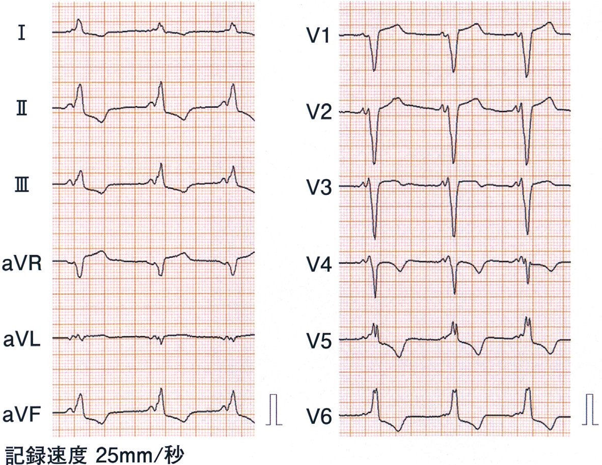
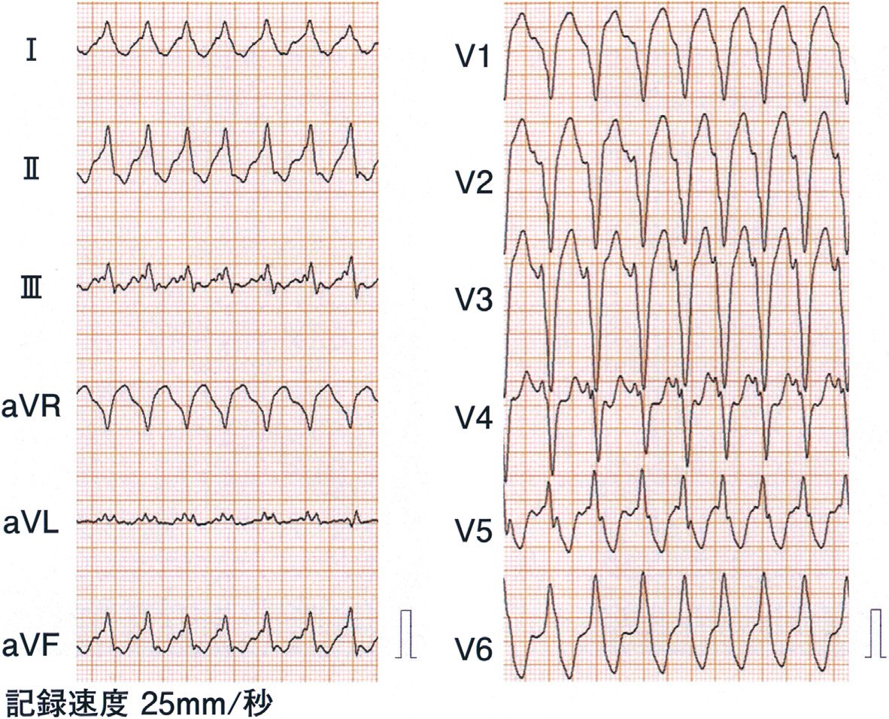
ａ α遮断薬投与
ｂ β遮断薬投与
ｃ ジギタリス投与
ｄ カテコラミン投与
ｅ カルディオバージョン
✅
ｅ カルディオバージョン
WPW症候群+血行動態不安定（意識障害）→緊急電気的カルディオバージョン。
❤️ WPW症候群+血行動態不安定の緊急対応
血行動態不安定（意識障害）→即時電気的カルディオバージョンWPWのAf（副伝導路経由の高速応答）→250〜300/分以上→VFに近い状態→意識障害
禁忌：ジギタリス・ベラパミル・β遮断薬（AV nodeを抑制→Kent束優位→さらに高速伝導→VF）
血行動態安定時：プロカインアミド・アミオダロン→Kent束も遮断
根本治療：カテーテルアブレーション
🎯 国試ポイント
WPW+血行動態不安定→緊急DC（カルディオバージョン）。意識障害=cardiac emergency→除細動優先。血行動態安定のWPW+Af→プロカインアミド or アミオダロン。ジゴキシン・ベラパミル・β遮断薬はWPW+Afに禁忌。🔍 選択肢解説
WPW＋心房細動で偽性心室頻拍・ショック。a α遮断薬投与：不適。
b β遮断薬投与：WPW＋AFで危険。
c ジギタリス投与：WPW＋AFに禁忌。
d カテコラミン投与：頻脈を悪化。
e カルディオバージョン：血行動態不安定な頻拍に電気的除細動。✓
Q.275(111G-63)臨床95%
次の文を読み、275 ～277 の問いに答えよ。
84 歳の女性。失神と眼前暗黒感とを主訴に来院した。
現病歴：1 週間前から時々気が遠くなるようなふらつきを自覚していたが、本日、朝食前に突然眼前暗黒感を自覚し意識が消失した。意識はすぐに回復したが、心配になり長女に付き添われて救急外来を受診した。
既往歴：60 歳ごろから高血圧症と脂質異常症。75 歳ごろから骨粗鬆症と逆流性食道炎。80 歳ごろから心不全と心房細動で内服治療中。アンジオテンシンⅡ受容体拮抗薬、スタチン〈HMG-CoA 還元酵素阻害薬〉、ビスホスホネート製剤、プロトンポンプ阻害薬およびジゴキシンを処方されている。
生活歴：ADL は自立している。長女夫婦と3 人暮らし。喫煙歴と飲酒歴はない。
家族歴：父親が心筋梗塞で死亡。母親が胃癌で死亡。
現 症：意識は清明。身長150cm、体重42kg。体温35.8℃。脈拍36/ 分、不整。血圧152/70mmHg。呼吸数20/ 分。SpO2 96％（room air）。眼瞼結膜と眼球結膜とに異常を認めない。心尖部を最強点とするⅡ/ Ⅵの汎収縮期雑音を聴取する。呼吸音に異常を認めない。腹部は平坦、軟で、肝・脾を触知しない。下腿に浮腫を認めない。神経学的所見に異常を認めない。
検査所見：尿所見：蛋白（±）、糖（－）、沈渣に白血球を認めない。血液所見：赤血球352 万、Hb 11.8g/dL、Ht36％、白血球5,800、血小板16 万。血液生化学所見：総蛋白6.8g/dL、アルブミン3.9g/dL、AST 28U/L、ALT 32U/L、ALP 164U/L（基準115 ～359）、CK 45U/L（基準30 ～140）、尿素窒素24mg/dL、クレアチニン1.4mg/dL、血糖110mg/dL、HbA1c 5.7％（基準4.6 ～6.2）、Na 133mEq/L、K 3.6mEq/L、Cl 97mEq/L。CRP 0.3mg/dL。
まず行うべきなのはどれか。
84 歳の女性。失神と眼前暗黒感とを主訴に来院した。
現病歴：1 週間前から時々気が遠くなるようなふらつきを自覚していたが、本日、朝食前に突然眼前暗黒感を自覚し意識が消失した。意識はすぐに回復したが、心配になり長女に付き添われて救急外来を受診した。
既往歴：60 歳ごろから高血圧症と脂質異常症。75 歳ごろから骨粗鬆症と逆流性食道炎。80 歳ごろから心不全と心房細動で内服治療中。アンジオテンシンⅡ受容体拮抗薬、スタチン〈HMG-CoA 還元酵素阻害薬〉、ビスホスホネート製剤、プロトンポンプ阻害薬およびジゴキシンを処方されている。
生活歴：ADL は自立している。長女夫婦と3 人暮らし。喫煙歴と飲酒歴はない。
家族歴：父親が心筋梗塞で死亡。母親が胃癌で死亡。
現 症：意識は清明。身長150cm、体重42kg。体温35.8℃。脈拍36/ 分、不整。血圧152/70mmHg。呼吸数20/ 分。SpO2 96％（room air）。眼瞼結膜と眼球結膜とに異常を認めない。心尖部を最強点とするⅡ/ Ⅵの汎収縮期雑音を聴取する。呼吸音に異常を認めない。腹部は平坦、軟で、肝・脾を触知しない。下腿に浮腫を認めない。神経学的所見に異常を認めない。
検査所見：尿所見：蛋白（±）、糖（－）、沈渣に白血球を認めない。血液所見：赤血球352 万、Hb 11.8g/dL、Ht36％、白血球5,800、血小板16 万。血液生化学所見：総蛋白6.8g/dL、アルブミン3.9g/dL、AST 28U/L、ALT 32U/L、ALP 164U/L（基準115 ～359）、CK 45U/L（基準30 ～140）、尿素窒素24mg/dL、クレアチニン1.4mg/dL、血糖110mg/dL、HbA1c 5.7％（基準4.6 ～6.2）、Na 133mEq/L、K 3.6mEq/L、Cl 97mEq/L。CRP 0.3mg/dL。
まず行うべきなのはどれか。
ａ 脳 波
ｂ 心電図
ｃ 頭部MRI
ｄ 胸部造影CT
ｅ ヘッドアップティルト試験
✅
ｂ 心電図
失神の初期評価で最も重要かつ基本的な検査は12誘導心電図（AVB・QT延長・Brugada・WPWを除外）。
❤️ 失神の初期評価
失神の評価手順：①病歴聴取（誘因・前駆症状・姿勢・目撃情報）②身体診察（血圧・脈拍・起立時血圧）③12誘導心電図（最初に実施）12誘導ECGで確認：完全AVB・QT延長・Brugada・WPW・AMI・His束ブロック
その他の検査：Holter心電図・心エコー（器質的疾患除外）・ヘッドアップティルト試験（神経調節性失神）
脳波・頭部MRI：てんかん疑いの場合（失神と鑑別）
🎯 国試ポイント
失神初期評価の第一検査=12誘導心電図（非侵襲的・即時・費用安い）。頭部MRI・脳波はけいれんとの鑑別のため（失神の第一選択ではない）。胸部CT→解離疑い時。ヘッドアップティルト試験→神経調節性失神の確認。🔍 選択肢解説
失神＋ジゴキシン内服(徐脈疑い)。a 脳波：不要。
b 心電図：失神の原因(不整脈)評価にまず心電図。✓
c 頭部MRI：主でない。
d 胸部造影CT：不要。
e ヘッドアップティルト試験：不適。
Q.276(111G-64)臨床89%
次の文を読み、275 ～277 の問いに答えよ。
84 歳の女性。失神と眼前暗黒感とを主訴に来院した。
現病歴：1 週間前から時々気が遠くなるようなふらつきを自覚していたが、本日、朝食前に突然眼前暗黒感を自覚し意識が消失した。意識はすぐに回復したが、心配になり長女に付き添われて救急外来を受診した。
既往歴：60 歳ごろから高血圧症と脂質異常症。75 歳ごろから骨粗鬆症と逆流性食道炎。80 歳ごろから心不全と心房細動で内服治療中。アンジオテンシンⅡ受容体拮抗薬、スタチン〈HMG-CoA 還元酵素阻害薬〉、ビスホスホネート製剤、プロトンポンプ阻害薬およびジゴキシンを処方されている。
生活歴：ADL は自立している。長女夫婦と3 人暮らし。喫煙歴と飲酒歴はない。
家族歴：父親が心筋梗塞で死亡。母親が胃癌で死亡。
現 症：意識は清明。身長150cm、体重42kg。体温35.8℃。脈拍36/ 分、不整。血圧152/70mmHg。呼吸数20/ 分。SpO2 96％（room air）。眼瞼結膜と眼球結膜とに異常を認めない。心尖部を最強点とするⅡ/ Ⅵの汎収縮期雑音を聴取する。呼吸音に異常を認めない。腹部は平坦、軟で、肝・脾を触知しない。下腿に浮腫を認めない。神経学的所見に異常を認めない。
検査所見：尿所見：蛋白（±）、糖（－）、沈渣に白血球を認めない。血液所見：赤血球352 万、Hb 11.8g/dL、Ht36％、白血球5,800、血小板16 万。血液生化学所見：総蛋白6.8g/dL、アルブミン3.9g/dL、AST 28U/L、ALT 32U/L、ALP 164U/L（基準115 ～359）、CK 45U/L（基準30 ～140）、尿素窒素24mg/dL、クレアチニン1.4mg/dL、血糖110mg/dL、HbA1c 5.7％（基準4.6 ～6.2）、Na 133mEq/L、K 3.6mEq/L、Cl 97mEq/L。CRP 0.3mg/dL。
中止すべき薬剤はどれか。
84 歳の女性。失神と眼前暗黒感とを主訴に来院した。
現病歴：1 週間前から時々気が遠くなるようなふらつきを自覚していたが、本日、朝食前に突然眼前暗黒感を自覚し意識が消失した。意識はすぐに回復したが、心配になり長女に付き添われて救急外来を受診した。
既往歴：60 歳ごろから高血圧症と脂質異常症。75 歳ごろから骨粗鬆症と逆流性食道炎。80 歳ごろから心不全と心房細動で内服治療中。アンジオテンシンⅡ受容体拮抗薬、スタチン〈HMG-CoA 還元酵素阻害薬〉、ビスホスホネート製剤、プロトンポンプ阻害薬およびジゴキシンを処方されている。
生活歴：ADL は自立している。長女夫婦と3 人暮らし。喫煙歴と飲酒歴はない。
家族歴：父親が心筋梗塞で死亡。母親が胃癌で死亡。
現 症：意識は清明。身長150cm、体重42kg。体温35.8℃。脈拍36/ 分、不整。血圧152/70mmHg。呼吸数20/ 分。SpO2 96％（room air）。眼瞼結膜と眼球結膜とに異常を認めない。心尖部を最強点とするⅡ/ Ⅵの汎収縮期雑音を聴取する。呼吸音に異常を認めない。腹部は平坦、軟で、肝・脾を触知しない。下腿に浮腫を認めない。神経学的所見に異常を認めない。
検査所見：尿所見：蛋白（±）、糖（－）、沈渣に白血球を認めない。血液所見：赤血球352 万、Hb 11.8g/dL、Ht36％、白血球5,800、血小板16 万。血液生化学所見：総蛋白6.8g/dL、アルブミン3.9g/dL、AST 28U/L、ALT 32U/L、ALP 164U/L（基準115 ～359）、CK 45U/L（基準30 ～140）、尿素窒素24mg/dL、クレアチニン1.4mg/dL、血糖110mg/dL、HbA1c 5.7％（基準4.6 ～6.2）、Na 133mEq/L、K 3.6mEq/L、Cl 97mEq/L。CRP 0.3mg/dL。
中止すべき薬剤はどれか。
ａ スタチン〈HMG-CoA 還元酵素阻害薬〉
ｂ アンジオテンシンⅡ受容体拮抗薬
ｃ ビスホスホネート製剤
ｄ プロトンポンプ阻害薬
ｅ ジゴキシン
✅
ｅ ジゴキシン
高齢者でのジゴキシン過剰→中毒（徐脈・AVブロック・失神）。腎機能低下でさらに蓄積。
⚠️ ジゴキシン中毒
ジゴキシン中毒の症状：徐脈・AVブロック・嘔気・嘔吐・視覚障害（黄緑色視）・心室性不整脈高齢者でリスク高：腎機能低下→ジゴキシン排泄↓→血中濃度↑（有効域：0.5〜1.0ng/mL）
対処：中止→ジゴキシン抗体（DigiFab）→透析（高度中毒時）
スタチン・ARB・ビスホスホネート・PPI：ジゴキシン中毒とは関係なし
🎯 国試ポイント
高齢者+腎機能低下+ジゴキシン→中毒リスク→徐脈・AVB・失神。ジゴキシンの安全域は狭い（治療域=0.5〜1.0ng/mL）。電解質：低K・低Mg・高Caはジゴキシン毒性を増強。治療：中止＋支持療法＋重症時ジゴキシン抗体。🔍 選択肢解説
a スタチン：徐脈を来さない。b ARB：徐脈を来さない。
c ビスホスホネート製剤：徐脈を来さない。
d プロトンポンプ阻害薬：徐脈を来さない。
e ジゴキシン：ジギタリス中毒による徐脈。✓
Q.277(111G-65)臨床57%
次の文を読み、275 ～277 の問いに答えよ。
84 歳の女性。失神と眼前暗黒感とを主訴に来院した。
現病歴：1 週間前から時々気が遠くなるようなふらつきを自覚していたが、本日、朝食前に突然眼前暗黒感を自覚し意識が消失した。意識はすぐに回復したが、心配になり長女に付き添われて救急外来を受診した。
既往歴：60 歳ごろから高血圧症と脂質異常症。75 歳ごろから骨粗鬆症と逆流性食道炎。80 歳ごろから心不全と心房細動で内服治療中。アンジオテンシンⅡ受容体拮抗薬、スタチン〈HMG-CoA 還元酵素阻害薬〉、ビスホスホネート製剤、プロトンポンプ阻害薬およびジゴキシンを処方されている。
生活歴：ADL は自立している。長女夫婦と3 人暮らし。喫煙歴と飲酒歴はない。
家族歴：父親が心筋梗塞で死亡。母親が胃癌で死亡。
現 症：意識は清明。身長150cm、体重42kg。体温35.8℃。脈拍36/ 分、不整。血圧152/70mmHg。呼吸数20/ 分。SpO2 96％（room air）。眼瞼結膜と眼球結膜とに異常を認めない。心尖部を最強点とするⅡ/ Ⅵの汎収縮期雑音を聴取する。呼吸音に異常を認めない。腹部は平坦、軟で、肝・脾を触知しない。下腿に浮腫を認めない。神経学的所見に異常を認めない。
検査所見：尿所見：蛋白（±）、糖（－）、沈渣に白血球を認めない。血液所見：赤血球352 万、Hb 11.8g/dL、Ht36％、白血球5,800、血小板16 万。血液生化学所見：総蛋白6.8g/dL、アルブミン3.9g/dL、AST 28U/L、ALT 32U/L、ALP 164U/L（基準115 ～359）、CK 45U/L（基準30 ～140）、尿素窒素24mg/dL、クレアチニン1.4mg/dL、血糖110mg/dL、HbA1c 5.7％（基準4.6 ～6.2）、Na 133mEq/L、K 3.6mEq/L、Cl 97mEq/L。CRP 0.3mg/dL。薬剤を中止したところ状態は改善した。
今回の経過に関連したのはどれか。
84 歳の女性。失神と眼前暗黒感とを主訴に来院した。
現病歴：1 週間前から時々気が遠くなるようなふらつきを自覚していたが、本日、朝食前に突然眼前暗黒感を自覚し意識が消失した。意識はすぐに回復したが、心配になり長女に付き添われて救急外来を受診した。
既往歴：60 歳ごろから高血圧症と脂質異常症。75 歳ごろから骨粗鬆症と逆流性食道炎。80 歳ごろから心不全と心房細動で内服治療中。アンジオテンシンⅡ受容体拮抗薬、スタチン〈HMG-CoA 還元酵素阻害薬〉、ビスホスホネート製剤、プロトンポンプ阻害薬およびジゴキシンを処方されている。
生活歴：ADL は自立している。長女夫婦と3 人暮らし。喫煙歴と飲酒歴はない。
家族歴：父親が心筋梗塞で死亡。母親が胃癌で死亡。
現 症：意識は清明。身長150cm、体重42kg。体温35.8℃。脈拍36/ 分、不整。血圧152/70mmHg。呼吸数20/ 分。SpO2 96％（room air）。眼瞼結膜と眼球結膜とに異常を認めない。心尖部を最強点とするⅡ/ Ⅵの汎収縮期雑音を聴取する。呼吸音に異常を認めない。腹部は平坦、軟で、肝・脾を触知しない。下腿に浮腫を認めない。神経学的所見に異常を認めない。
検査所見：尿所見：蛋白（±）、糖（－）、沈渣に白血球を認めない。血液所見：赤血球352 万、Hb 11.8g/dL、Ht36％、白血球5,800、血小板16 万。血液生化学所見：総蛋白6.8g/dL、アルブミン3.9g/dL、AST 28U/L、ALT 32U/L、ALP 164U/L（基準115 ～359）、CK 45U/L（基準30 ～140）、尿素窒素24mg/dL、クレアチニン1.4mg/dL、血糖110mg/dL、HbA1c 5.7％（基準4.6 ～6.2）、Na 133mEq/L、K 3.6mEq/L、Cl 97mEq/L。CRP 0.3mg/dL。薬剤を中止したところ状態は改善した。
今回の経過に関連したのはどれか。
ａ 薬物相互作用
ｂ 薬物排泄の低下
ｃ 薬物代謝の低下
ｄ 薬物吸収の低下
ｅ 服薬アドヒアランスの低下
✅
ｂ 薬物排泄の低下
高齢者の腎機能低下→ジゴキシン排泄↓→血中濃度蓄積→中毒。これは「薬物排泄の低下」による毒性増強。
💊 薬物動態と高齢者の変化
高齢者の薬物動態変化：①腎機能低下：糸球体濾過率↓→ジゴキシン・アミノグリコシド等の排泄↓→蓄積
②肝機能低下：代謝能↓→一部の薬剤は血中濃度↑
③脂肪割合↑：脂溶性薬物の分布容積↑（効果の遅延）
④アルブミン低下：タンパク結合型↓→遊離型↑→毒性増強
薬物相互作用：複数薬剤→代謝競合（CYP阻害等）→血中濃度変化
🎯 国試ポイント
高齢者+腎機能低下→ジゴキシン排泄低下→蓄積→中毒。薬物排泄の低下が最主因。薬物相互作用（CYP阻害など）はジゴキシンには少ない（主に腎排泄）。高齢者の薬物使用：腎機能に合わせた用量調整が重要。🔍 選択肢解説
a 薬物相互作用：主でない。b 薬物排泄の低下：加齢の腎機能低下でジゴキシンが蓄積。✓
c 薬物代謝の低下：ジゴキシンは腎排泄が主。
d 薬物吸収の低下：逆。
e 服薬アドヒアランスの低下：施設で管理されている。
Q.278(111H-2)必修一般📷 画像77%
心電図と同期させた頸静脈波の模式図を示す。
矢印で示す波が消失するのはどれか。
矢印で示す波が消失するのはどれか。

ａ 心房細動
ｂ 房室解離
ｃ 左房粘液腫
ｄ 肺高血圧症
ｅ Ⅰ度房室ブロック
✅
ａ 心房細動
頸静脈波のa波（心房収縮→右心房圧↑）が消失するのは心房細動（心房収縮がなくなるため）。
❤️ 頸静脈波（JVP）の読み方
正常JVP波形：a波（心房収縮）→c波（三尖弁閉鎖）→x降下（心房弛緩）→v波（静脈還流）→y降下（三尖弁開放）
a波消失→心房細動：心房の機械的収縮がなくなる→a波消失
a波亢進：三尖弁狭窄・完全AVB（大砲波=cannon A wave）
v波亢進：三尖弁閉鎖不全症（逆流による大きなv波）
🎯 国試ポイント
a波=心房収縮による圧波→心房細動では消失（心房の機械的収縮なし）。完全AVBではAとVの解離→時々大きな砲声音（cannon sound）と大きなa波（cannon A wave）。房室解離もa波とQRSの関係が崩れる。🔍 選択肢解説
頸静脈波のa波(心房収縮)が消失するもの。a 心房細動：心房収縮の消失でa波が消失。✓
b 房室解離：cannon a波が出現。
c 左房粘液腫：主でない。
d 肺高血圧症：a波は増大。
e Ⅰ度房室ブロック：a波は保たれる。
Q.279(111I-27)一般2択57%
植込み型除細動器が適応となるのはどれか。2 つ選べ。
ａ 心室細動
ｂ 無症候性の心房粗動
ｃ 薬物不応性の心房細動
ｄ 胸痛を伴う発作性上室性頻拍
ｅ 失神を伴う器質的心疾患による持続性心室頻拍
✅
ａ 心室細動
ｅ 失神を伴う器質的心疾患による持続性心室頻拍
ICD適応：VF（二次予防）と器質的心疾患＋失神を伴うVT（二次予防）。
❤️ ICD（植込み型除細動器）の適応
二次予防適応（実際に起きた場合）：①VF既往②血行動態が不安定なVT③失神の原因がVF/VTと判明した場合一次予防適応（起きる前の予防）：器質的心疾患+EF≤35%+NYHA II〜III（MADIT II・SCD-HeFT試験等より）
心房粗動・Af・SVT→ICD適応なし（電気的除細動の適応ではない）
🎯 国試ポイント
ICD=VF既往・VT（失神あり器質的疾患）・低EF（一次予防）が主な適応。SVT・Af・心房粗動はICD適応外（カテアブ・薬物が適応）。胸痛を伴うPSVT→血行動態安定→薬物・カテアブが優先。🔍 選択肢解説
a 心室細動：ICDの適応。✓b 無症候性の心房粗動：適応でない。
c 薬物不応性の心房細動：適応でない。
d 胸痛を伴う発作性上室性頻拍：適応でない。
e 失神を伴う器質的心疾患による持続性心室頻拍：ICDの適応。✓
Q.280(111I-65)臨床📷 画像82%
76 歳の男性。58 歳時に心不全症状のため心房中隔欠損孔閉鎖術を受けた。現在の心電図を示す。
認められる所見はどれか。
認められる所見はどれか。

ａ 心房粗動
ｂ 心房細動
ｃ 心房性期外収縮
ｄ 完全房室ブロック
ｅ 完全左脚ブロック
✅
ｂ 心房細動
心房中隔欠損閉鎖術後の慢性期→左房拡大・右房拡大→心房細動のリスク高。ECGは心房細動を示す。
❤️ ASD術後の晩期合併症
心房中隔欠損（ASD）術後の問題：①遅発性心房細動：長年の心房負荷→心房リモデリング→Af発生（閉鎖術を受けても残存）
②肺高血圧：術前からの高度肺高血圧は術後改善しない
③上室性頻拍：リエントリー（外科手術後の瘢痕組織）
心電図（Af）：P波消失→f波（細かい基線の乱れ）、不規則なR-R間隔、幅狭QRS
🎯 国試ポイント
ASD術後→晩期心房細動が多い（長年の右房・左房拡大→心房リモデリング）。心電図でP波消失+不規則R-R=Af。完全AVBはASD術後にも起こりうるが「完全AVB→規則的な徐脈」→不整脈（不規則なR-R）があればAf。🔍 選択肢解説
a 心房粗動：規則的な鋸歯状波。b 心房細動：不規則なRR・P波消失。✓
c 心房性期外収縮：単発。
d 完全房室ブロック：該当しない。
e 完全左脚ブロック：該当しない。
Q.281(110A-10)一般95%
QT 延長のある患者で注意すべき不整脈はどれか。
ａ 洞停止
ｂ 心房細動
ｃ 心房粗動
ｄ 多形性心室頻拍
ｅ 発作性上室性頻拍
✅
ｄ 多形性心室頻拍
QT延長（先天性・薬剤性）→再分極不均一→torsades de pointes（多形性VT）→失神・VF移行リスク。
❤️ QT延長症候群と不整脈
QT延長→Torsades de Pointes（TdP）：多形性VT（QRS形態が変化するVT）機序：早期後脱分極（EAD）→triggered activityにより発生
先天性QT延長（Romano-Ward/Jervell-Lange-Nielsen症候群）：SCN5A・KCNQ1等の遺伝子変異
後天性（薬剤性）QT延長：Ia群・III群・抗精神病薬・マクロライド系・フルオロキノロン
洞停止・Af・心房粗動・SVTはQT延長との直接関係なし
🎯 国試ポイント
QT延長→TdP（多形性VT）→失神/VF。QTc≥0.47秒（男性≥0.45秒）が延長の目安。治療：①原因薬中止②硫酸マグネシウムIV③心拍数を上げる（ペーシング・イソプロテレノール）④先天性は症状あればICD。🔍 選択肢解説
a 洞停止：該当しない。b 心房細動：該当しない。
c 心房粗動：該当しない。
d 多形性心室頻拍：QT延長→torsades de pointes(多形性VT)。✓
e 発作性上室性頻拍：該当しない。
Q.282(110D-54)臨床📷 画像91%
60 歳の男性。気が遠くなるようなめまいが出現したことを主訴に来院した。この症状は1 週前から1 日に1、2 回自覚している。めまいの発作の出現は立位動作とは関係がなく、歩行中や座位でも生じるという。失神はない。高血圧症、左室肥大、胃潰瘍および脂質異常症で内服治療中である。意識は清明。身長169cm、体重65kg。体温36.2℃。脈拍60/ 分、整。血圧148/82mmHg。心音と呼吸音とに異常を認めない。神経学的所見に異常を認めない。血液生化学所見に異常を認めない。心電図は洞調律、心拍数60/ 分でPQ 時間が0.24 秒（基準0.12 ～0.20）である。その他に異常を認めない。胸部エックス線写真で異常を認めない。心エコーで異常を認めない。Holter 心電図におけるめまい自覚時の記録を示す。
内服を中止する必要があるのはどれか。
内服を中止する必要があるのはどれか。
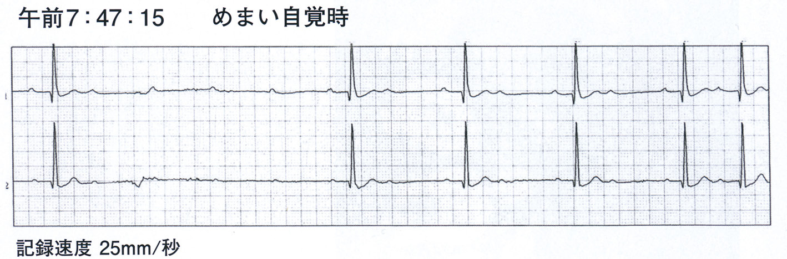
ａ α遮断薬
ｂ β遮断薬
ｃ HMG-CoA 還元酵素阻害薬
ｄ ヒスタミンH2 受容体拮抗薬
ｅ アンジオテンシンⅡ受容体拮抗薬
✅
ｂ β遮断薬
β遮断薬の陰性変時・変力作用→心拍数低下・心拍出量低下→めまい（徐脈性）。
❤️ β遮断薬による徐脈性めまい
β遮断薬の副作用：徐脈（陰性変時）・低血圧・房室ブロック悪化・気管支攣縮（非選択性）本症例：気が遠くなるめまいが起立と無関係（起立性低血圧でない）→心拍数低下による低心拍出→中枢神経低灌流
×α遮断薬：起立性低血圧（起立時に悪化）→本症例は起立無関係
スタチン・H2遮断薬・ARB：徐脈とは直接関係なし
🎯 国試ポイント
β遮断薬→徐脈・低心拍出→起立に関係ないめまい・失神。α遮断薬は起立性低血圧（起立時めまい）。まず12誘導ECGで徐脈・AVBを確認→β遮断薬減量・中止を検討。Holter心電図で詳細を確認。🔍 選択肢解説
高血圧・左室肥大＋非体位性のめまい発作。a α遮断薬：不適。
b β遮断薬：頻脈性発作・交感神経活動の抑制に適切。✓
c HMG-CoA還元酵素阻害薬：脂質異常症用で症状に無関係。
d ヒスタミンH2受容体拮抗薬：胃潰瘍用。
e ARB：降圧のみで症状の主対応でない。
Q.283(110E-34)一般2択10%
QT 延長に注意すべき抗菌薬はどれか。2 つ選べ。
ａ セフェム系
ｂ ペニシリン系
ｃ マクロライド系
ｄ ニューキノロン系
ｅ アミノグリコシド系
✅
ｃ マクロライド系
ｄ ニューキノロン系
マクロライド系（エリスロマイシン・クラリスロマイシン）とニューキノロン系（モキシフロキサシン等）はQT延長リスクあり。
📋 QT延長リスクのある薬剤（抗菌薬）
| マクロライド系 | エリスロマイシン・クラリスロマイシン | QT延長注意（特にエリスロマイシン） |
| ニューキノロン系 | モキシフロキサシン・スパルフロキサシン | QT延長注意（モキシフロキサシンが最大） |
| セフェム系 | セフトリアキソン等 | QT延長リスクなし |
| ペニシリン系 | アモキシシリン等 | QT延長リスクなし |
| アミノグリコシド系 | ゲンタマイシン等 | QT延長リスクなし（腎毒性・耳毒性が問題） |
🎯 国試ポイント
QT延長注意の抗菌薬：マクロライド+ニューキノロン。クラリスロマイシン（H.pylori除菌にも使用）もQT延長注意。既存のQT延長患者・QT延長薬使用中には慎重投与。🔍 選択肢解説
a セフェム系：QT延長は少ない。b ペニシリン系：QT延長は少ない。
c マクロライド系：QT延長に注意。✓
d ニューキノロン系：QT延長に注意。✓
e アミノグリコシド系：QT延長は少ない。
Q.284(109A-31)臨床📷 画像68%
78 歳の男性。動悸を主訴に来院した。3 日前に家の片付けを行っていたところ動悸を初めて自覚した。動悸は突然始まり、脈がバラバラに乱れている感じで持続していたが、日常生活には影響しなかったので経過をみていた。本日になっても続くため心配になって受診した。特に易疲労感、呼吸困難感およびめまいなどは自覚していない。10 年前から高血圧症で加療中。家族歴に特記すべきことはない。意識は清明。身長168cm、体重62kg。体温36.2℃。脈拍76/ 分、不整。血圧152/90mmHg。呼吸数16/ 分。SpO2 98％（room air）。Ⅰ音の強さが変化する。呼吸音に異常を認めない。血液所見：赤血球464 万、Hb 14.0g/dL、Ht 42％、白血球6,800、血小板21 万。血液生化学所見：総蛋白7.0g/dL、アルブミン3.6g/dL、総ビリルビン0.9mg/dL、AST 26IU/L、ALT 18IU/L、LD 178IU/L（基準176 ～353）、ALP 352IU/L（基準115 ～359）、γ-GTP 42IU/L（基準8 ～50）、尿素窒素12mg/dL、クレアチニン0.6mg/dL、Na 138mEq/L、K 4.4mEq/L、Cl 97mEq/L、TSH 0.8μU/mL（基準0.4 ～4.0）、FT4 1.4ng/dL（基準0.8～1.8）。胸部エックス線写真で心胸郭比48％、肺野に異常を認めない。心電図を示す。
まず行うべき対応はどれか。
まず行うべき対応はどれか。
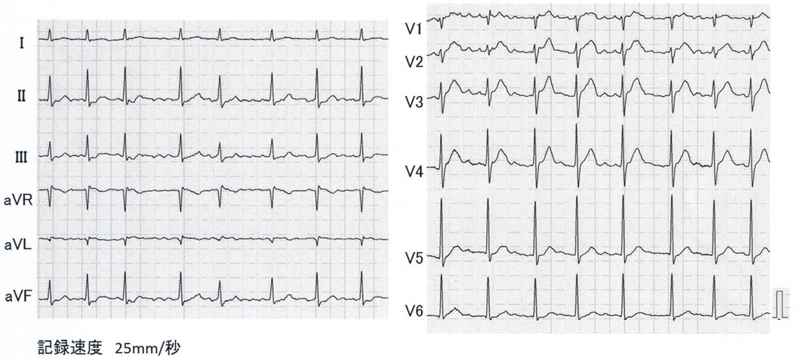
ａ 経過観察
ｂ 抗凝固薬投与
ｃ 抗不整脈薬の静脈内投与
ｄ カテーテルアブレーション
ｅ 電気ショック（カルディオバージョン）
✅
ｂ 抗凝固薬投与
新規心房細動（>48時間の可能性）→脳塞栓予防目的の抗凝固療法が最優先（除細動前に必要）。
❤️ 新規発症Afの管理
48時間ルール：Af発症から48時間以内→経食道心エコー（TEE）で血栓確認後に除細動可または48時間以降（不明）→抗凝固療法3週間→除細動→抗凝固継続4週間
本症例：3日前から（>48時間）→まず抗凝固療法（ヘパリンorDOAC）→心拍数コントロール→除細動
カテーテルアブレーション・抗不整脈薬静注：抗凝固なしでは塞栓リスクあり
🎯 国試ポイント
Af持続>48時間（または発症時期不明）→除細動前に抗凝固療法3週間が必要（心房血栓形成リスクがあるため）。緊急除細動が必要な血行動態不安定時を除く。TEEで血栓なし確認→即時除細動も可。🔍 選択肢解説
初発の心房細動(無症状)＋高血圧。a 経過観察：抗凝固が必要。
b 抗凝固薬投与：AF＋高齢・高血圧で脳塞栓予防。✓
c 抗不整脈薬の静脈内投与：急がない。
d カテーテルアブレーション：まず抗凝固。
e 電気ショック：発症48時間以上で血栓リスク。
Q.285(109A-32)臨床📷 画像77%
78 歳の男性。全身倦怠感とめまいとを主訴に来院した。65 歳時から高血圧症と糖尿病で、5 年前から発作性心房細動で内服治療中である。2 か月前から時々目の前が暗くなることがあった。1 週前から全身倦怠感とめまいとが出現したため受診した。身長164cm、体重58kg。脈拍32/ 分、整。血圧138/80mmHg。呼吸数20/ 分。心尖拍動を鎖骨中線から2cm 外側に触知する。Ⅰ音の強さは一定しない。下腿に著明な浮腫を認める。4 か月前と本日の心電図（A，B）を示す。
全身倦怠感とめまいの原因として正しいのはどれか。
全身倦怠感とめまいの原因として正しいのはどれか。
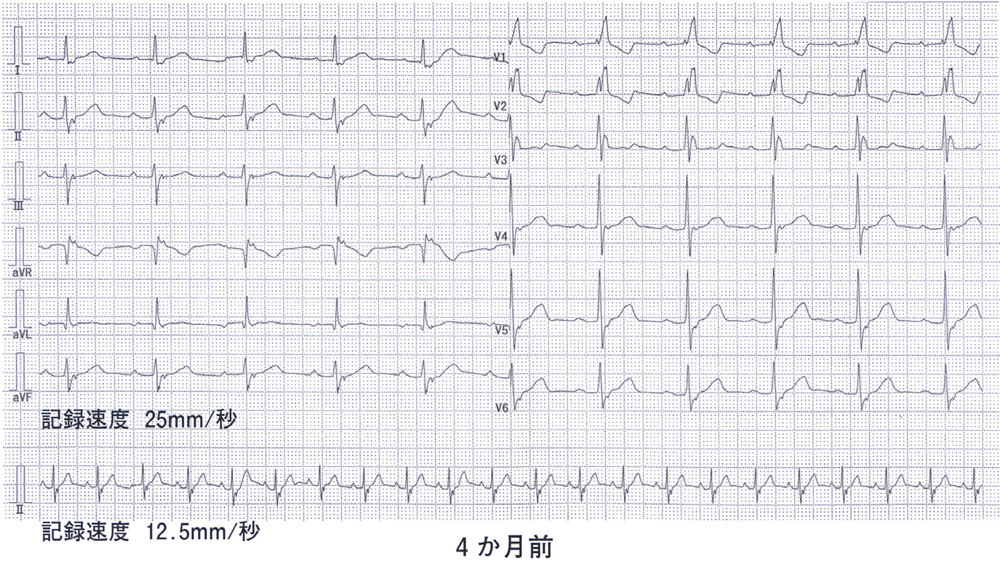
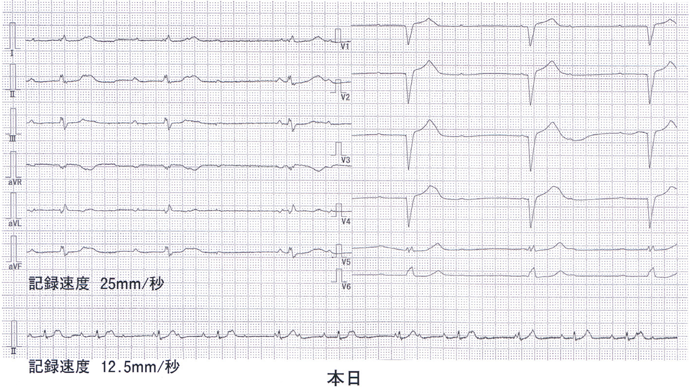
ａ 洞不全症候群
ｂ 心室期外収縮
ｃ 発作性心房細動
ｄ 完全右脚ブロック
ｅ 完全房室ブロック
✅
ｅ 完全房室ブロック
発作性Af治療薬（抗不整脈薬）の副作用→洞不全・完全AVB→全身倦怠感・前失神（目の前が暗くなる）。
❤️ 完全房室ブロック（Complete AVB）
心電図所見：P波とQRS波が完全に解離（PとQRSの間に規則性なし）、心室自己調律（幅広QRS・心拍数30〜50/分）本症例の機序：Af治療薬（アミオダロン・プロパフェノン・β遮断薬等）→AV node抑制→完全AVB
症状：全身倦怠感・易疲労感・前失神・Adams-Stokes発作（完全意識消失）
治療：原因薬中止+永久ペースメーカー
🎯 国試ポイント
発作性Af治療薬+高齢者→完全AVB→倦怠感・前失神。完全AVBはペースメーカー（PPM）適応。心室期外収縮：動悸あるが失神なし。発作性Af：不整脈感+脈不整。完全右脚ブロック：失神の原因にはならない。🔍 選択肢解説
発作性AF治療中の徐脈(HR32)・めまい。a 洞不全症候群：可能性はあるが所見と合致しにくい。
b 心室期外収縮：該当しない。
c 発作性心房細動：頻脈で該当しない。
d 完全右脚ブロック：症状を出さない。
e 完全房室ブロック：高度徐脈(HR32)・房室解離(Ⅰ音が不定)。✓
Q.286(109D-7)一般65%
心房細動の患者において心原性脳塞栓症のリスクファクターでないのはどれか。
ａ 糖尿病
ｂ 心不全
ｃ 高血圧症
ｄ 75 歳以上
ｅ 脂質異常症
✅
ｅ 脂質異常症
脂質異常症はAfによる脳塞栓リスクのCHADS₂/CHA₂DS₂-VAScスコアに含まれない。
❤️ CHA₂DS₂-VAScスコア
CHA₂DS₂-VAScスコア：C: Congestive HF/LV dysfunction（心不全/左室機能低下）＝1点
H: Hypertension（高血圧）＝1点
A₂: Age≥75歳＝2点（A1 = 65〜74歳=1点）
D: Diabetes（糖尿病）＝1点
S₂: Stroke/TIA/血栓塞栓症歴＝2点
V: Vascular disease（MI・末梢動脈疾患・大動脈プラーク）＝1点
A: Age 65〜74歳＝1点
Sc: Sex category（女性）＝1点
脂質異常症はスコアに含まれない
🎯 国試ポイント
脂質異常症はCHADS₂/CHA₂DS₂-VAScに含まれない（心房細動の脳塞栓リスク因子ではない）。CHADS₂で最高リスク：脳卒中/TIA歴（2点）。CHA₂DS₂-VASc≥2点→抗凝固療法推奨。🔍 選択肢解説
AFの脳塞栓リスク(CHADS2)。a 糖尿病：リスク。
b 心不全：リスク。
c 高血圧症：リスク。
d 75歳以上：リスク。
e 脂質異常症：CHADS2に含まれずリスクでない。✓
Q.287(109D-33)臨床📷 画像68%
62 歳の女性。動悸とめまいとを主訴に来院した。2 年前に皮膚サルコイドーシスの診断を受け、薬物治療は行わず経過観察されている。3 週前から労作時の息切れを自覚している。今朝から動悸と気が遠くなるようなめまいとが出現したため受診した。意識は清明。身長159cm、体重62kg。脈拍78/ 分、不整。血圧116/74mmHg。心雑音を認めない。下腿に浮腫を認めない。心エコー検査で左心室の一部が菲薄化し瘤状に変形し、収縮の低下を認める。Holter心電図を示す。
対応として適切なのはどれか。
対応として適切なのはどれか。

ａ アトロピンの投与
ｂ ジギタリスの投与
ｃ アドレナリンの投与
ｄ ジソピラミドの投与
ｅ 植込み型除細動器〈ICD〉植込み術
✅
ｅ 植込み型除細動器〈ICD〉植込み術
サルコイドーシス→心臓サルコイドーシス→伝導障害（AVB）/VT/VF→ICD適応。
❤️ 心臓サルコイドーシスの不整脈管理
心臓サルコイドーシス：肉芽腫が心筋・伝導系に浸潤→①完全AVB②心室性不整脈（VT/VF）③心不全不整脈の種類：VT/VF→ICD適応（突然死予防）
完全AVB→ペースメーカー（ただしVTリスクもあればICD→ペーシング機能付き）
×アトロピン・ジギタリス・ジソピラミド：根本治療にならない
ステロイド治療：病勢コントロール（不整脈の直接治療ではない）
🎯 国試ポイント
心臓サルコイドーシス+VT/VF→ICD適応。皮膚/眼/肺サルコイドーシス既往者の動悸・失神→心臓サルコイドーシスを疑う。完全AVB+VTリスク→ICD（ペーシング+除細動機能付き）。ステロイドで病勢改善後も不整脈は残存することがある。🔍 選択肢解説
心サルコイドーシス＋心室瘤＋心室頻拍。a アトロピンの投与：不適。
b ジギタリスの投与：不適。
c アドレナリンの投与：不適。
d ジソピラミドの投与：主でない。
e 植込み型除細動器〈ICD〉植込み術：心サルコイドーシスのVT/突然死予防にICD。✓
Q.288(109D-54)臨床📷 画像88%
63 歳の男性。動悸と労作時息切れとを主訴に来院した。3 年前の健康診断で心拡大を指摘されたが無症状であるため医療機関を受診しなかった。1 週前から動悸を自覚するようになり、坂道を歩くと息切れを感じるため受診した。脈拍104/ 分、不整。血圧122/78mmHg。SpO2 97％（room air）。胸骨左縁第2 肋間を最強点とする収縮期雑音とⅡ音の固定性分裂とを聴取する。肝を3cm 触知する。下腿に軽度の浮腫を認める。12 誘導心電図（A）、胸部エックス線写真（B）及び心エコー図（C，D）を示す。
今後の方針として適切なのはどれか。
今後の方針として適切なのはどれか。


ａ 心内修復術
ｂ 在宅酸素療法
ｃ 血栓溶解療法
ｄ ペースメーカ植込み
ｅ カテーテルアブレーション
✅
ａ 心内修復術
3年前からの心拡大+動悸+労作時息切れ→心房中隔欠損症（ASD）or VSD等の先天性心疾患→心内修復術（欠損閉鎖術）。
❤️ ASD（心房中隔欠損症）の治療
ASD：左→右シャント→右房・右室・肺動脈の容量負荷→右心拡大→Af等の不整脈治療：心内修復術（外科的閉鎖）orカテーテル閉鎖術（経皮的）
適応：①症状あり②Qp/Qs>1.5③右心系拡大
×在宅酸素：原発性肺高血圧等の終末期（今回は適応外）
×血栓溶解：血栓性疾患ではない
ペースメーカー・アブレーション：不整脈の対症療法（根本治療でない）
🎯 国試ポイント
ASD→右心拡大→Af→心内修復術（カテーテル閉鎖）が根本治療。Afが合併した場合→閉鎖術+Afの管理。肺高血圧が高度（Eisenmenger化）→閉鎖術禁忌。🔍 選択肢解説
心房中隔欠損症(Ⅱ音の固定性分裂・右心負荷)。a 心内修復術：ASDの閉鎖(心内修復術)。✓
b 在宅酸素療法：不適。
c 血栓溶解療法：不適。
d ペースメーカ植込み：不要。
e カテーテルアブレーション：根本はASD閉鎖。
Q.289(108C-21)必修臨床📷 画像98%
76 歳の女性。一過性の右不全片麻痺と構音障害を主訴に来院した。15 年前から高血圧症で通院中である。2 年前の心電図検査では異常がなかった。数日前から動悸を自覚していたが、症状が軽かったため様子をみていた。今朝、朝食中に右上下肢の脱力感と構音障害とが出現した。症状は30 分程度で消失したが、心配した家族に付き添われて受診した。来院時、意識は清明。脈拍92/ 分、不整。血圧124/74mmHg。眼瞼結膜に貧血を認めない。頸部血管雑音を認めない。過剰心音と心雑音とを認めない。呼吸音に異常を認めない。神経学的診察で異常を認めない。頭部CT では明らかな異常を認めない。来院時に記録した12 誘導心電図を示す。
この患者に対する説明として適切なのはどれか。
この患者に対する説明として適切なのはどれか。
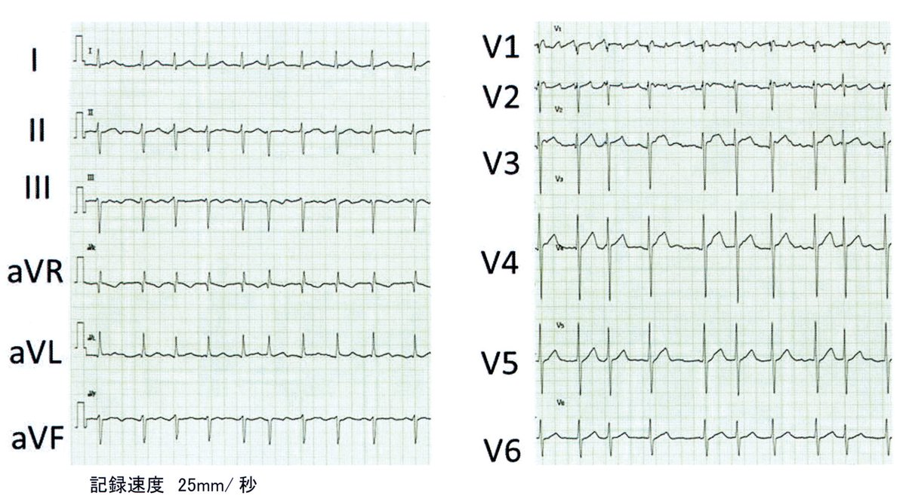
ａ 「高血圧の薬を変更します」
ｂ 「今日の心電図は2 年前と変わりはないようです」
ｃ 「いつもの薬をしっかり内服していれば大丈夫です」
ｄ 「高齢者ではよくあることですので様子をみてください」
ｅ 「血液を固まりにくくする薬で治療する必要があります」
✅
ｅ 「血液を固まりにくくする薬で治療する必要があります」
TIA（一過性脳虚血発作）+動悸の新規出現→心房細動による心原性脳塞栓の前駆発作→抗凝固療法が必須。
❤️ TIA後の心房細動管理
TIA=脳梗塞の前兆：24時間以内に症状消失するが脳梗塞へ移行リスク高（2日以内に20%）心房細動→脳塞栓：心房内に血栓形成→脳動脈塞栓→脳梗塞（心原性脳塞栓）
→抗凝固療法（DOAC優先）が最優先
誤りの選択肢：「今日の心電図と変わらない」→TIA後にAfが出現した場合は変化あり。「薬をしっかり飲んで」「よくあること」は不適切な対応。「高血圧の薬変更」は対症的すぎ
🎯 国試ポイント
TIA+新規Af→心原性塞栓の危険→抗凝固療法（DOAC）開始。TIAはstroke emergencyとして緊急精査（MRI・エコー・ホルター）が必要。CHADS₂≥2（脳卒中歴=2点+高血圧=1点→最低3点）→抗凝固必須。🔍 選択肢解説
一過性脳虚血発作(TIA)＋新規心房細動。a 「高血圧の薬を変更します」：主でない。
b 「心電図は2年前と変わりない」：AFは新規。
c 「いつもの薬をしっかり内服していれば大丈夫」：抗凝固が必要。
d 「高齢者ではよくあること」：不適。
e 「血液を固まりにくくする薬で治療する必要があります」：AFによる心原性塞栓に抗凝固。✓
Q.290(107E-34)一般2択95%
失神に対して植込み型除細動器が適応となるのはどれか。2 つ選べ。
ａ 洞不全症候群
ｂ Brugada 症候群
ｃ 大動脈弁狭窄症
ｄ 完全房室ブロック
ｅ 先天性QT 延長症候群
✅
ｂ Brugada 症候群
ｅ 先天性QT 延長症候群
Brugada症候群と先天性QT延長症候群（症状あり）は致死的VT/VFリスクが高くICD適応。
📋 ICD適応と非適応の疾患
| 洞不全症候群 | ペースメーカー適応（ICDでない） | |
| Brugada症候群+失神 | ICD（VF→突然死リスク） | |
| 大動脈弁狭窄症 | AVR（弁置換術）適応→突然死は低酸素由来 | |
| 完全房室ブロック | ペースメーカー適応（ICDでない） | |
| 先天性QT延長症候群+失神 | ICD（TdP→VF→突然死） |
🎯 国試ポイント
ICD適応：Brugada症候群+症状（失神/VF）・先天性QT延長症候群+症状・VF既往・器質的疾患+VT+失神。洞不全・完全AVBはペースメーカーが適応（除細動器でない）。ASはAVRが根本治療。🔍 選択肢解説
a 洞不全症候群：ペースメーカの適応。b Brugada症候群：失神＋Brugadaでは突然死予防にICD。✓
c 大動脈弁狭窄症：弁置換の適応。
d 完全房室ブロック：ペースメーカの適応。
e 先天性QT延長症候群：失神例でβ遮断薬/ICD。✓
Q.291(107E-58)臨床📷 画像93%
次の文を読み、291 ～293 の問いに答えよ。
79 歳の男性。ふらつきを主訴に来院した。
現病歴：3 年前に妻を亡くし、1 人暮らし。隣県に住む娘が時々様子を見に来ており、数か月前から物忘れが目立ち、残薬も多いことに気づいたが、主治医には知らせていなかった。食事は給食サービスを受けていたが、服薬管理など生活上の問題を心配した娘が、2 週前に老人ホームに入居させた。以後は介護職員が薬を管理している。約1 週前から起立時や歩行時にふらつきを自覚するようになり、心配した職員に付き添われて受診した。
既往歴：60 歳で高血圧症と糖尿病とを指摘され、1 年前から利尿薬、β遮断薬、抗血小板薬、スルホニル尿素薬およびアンジオテンシン変換酵素阻害薬を処方されている。この1 年間処方内容は変更されていない。
家族歴：父親が脳卒中のため65 歳で死亡。
現 症：意識は清明。身長165cm、体重67kg。体温35.8℃。脈拍36/ 分。血圧128/64mmHg。呼吸数16/ 分。口腔内は湿潤している。心雑音を聴取しない。呼吸音に異常を認めない。腹部は平坦、軟で、肝・脾を触知しない。四肢の筋力は保たれており、浮腫を認めない。腱反射に異常はない。
検査所見：血液所見：赤血球407 万、Hb 12.4g/dl、Ht 38％、白血球6,800、血小板18 万。血液生化学所見：随時血糖126mg/dl、HbA1c（NGSP）6.5％（基準4.6 ～6.2）、総蛋白7.0g/dl、アルブミン3.8g/dl、尿素窒素18mg/dl、クレアチニン1.2mg/dl、AST 38IU/l、ALT 32IU/l、Na 135mEq/l、K 4.6mEq/l、Cl 108mEq/l。CRP 0.3mg/dl。心電図を示す。
心電図所見はどれか。
79 歳の男性。ふらつきを主訴に来院した。
現病歴：3 年前に妻を亡くし、1 人暮らし。隣県に住む娘が時々様子を見に来ており、数か月前から物忘れが目立ち、残薬も多いことに気づいたが、主治医には知らせていなかった。食事は給食サービスを受けていたが、服薬管理など生活上の問題を心配した娘が、2 週前に老人ホームに入居させた。以後は介護職員が薬を管理している。約1 週前から起立時や歩行時にふらつきを自覚するようになり、心配した職員に付き添われて受診した。
既往歴：60 歳で高血圧症と糖尿病とを指摘され、1 年前から利尿薬、β遮断薬、抗血小板薬、スルホニル尿素薬およびアンジオテンシン変換酵素阻害薬を処方されている。この1 年間処方内容は変更されていない。
家族歴：父親が脳卒中のため65 歳で死亡。
現 症：意識は清明。身長165cm、体重67kg。体温35.8℃。脈拍36/ 分。血圧128/64mmHg。呼吸数16/ 分。口腔内は湿潤している。心雑音を聴取しない。呼吸音に異常を認めない。腹部は平坦、軟で、肝・脾を触知しない。四肢の筋力は保たれており、浮腫を認めない。腱反射に異常はない。
検査所見：血液所見：赤血球407 万、Hb 12.4g/dl、Ht 38％、白血球6,800、血小板18 万。血液生化学所見：随時血糖126mg/dl、HbA1c（NGSP）6.5％（基準4.6 ～6.2）、総蛋白7.0g/dl、アルブミン3.8g/dl、尿素窒素18mg/dl、クレアチニン1.2mg/dl、AST 38IU/l、ALT 32IU/l、Na 135mEq/l、K 4.6mEq/l、Cl 108mEq/l。CRP 0.3mg/dl。心電図を示す。
心電図所見はどれか。
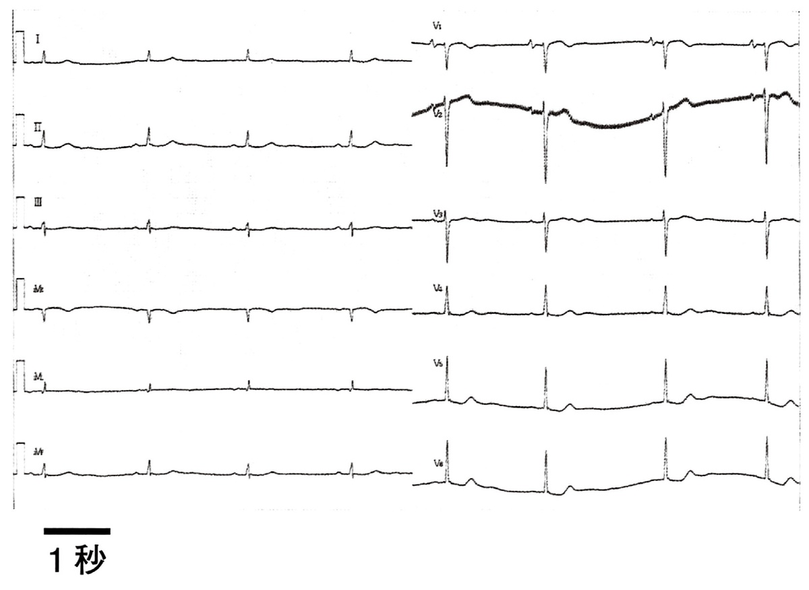
ａ QT 延長
ｂ 洞性徐脈
ｃ 心房細動
ｄ 房室接合部調律
ｅ Ⅱ度房室ブロック
✅
ｂ 洞性徐脈
高齢者での徐脈（安静時心拍数<60/分・P波あり・PP間隔一定）→洞性徐脈。薬剤性が多い。
❤️ 洞性徐脈の心電図と鑑別
洞性徐脈：P波正常（洞起源）、PP間隔一定（規則的）、心拍数<60/分PR間隔正常→洞結節の自動能低下
鑑別：
・QT延長：PR正常・QT間隔が延長（T波の終わりが遠い）
・Af：P波消失・不規則なR-R間隔
・Ⅱ度AVB：一部のP波がQRSに伝導されない
・房室接合部調律：P波逆行性またはQRSに埋没・心拍数40〜60/分
🎯 国試ポイント
洞性徐脈：P波あり+規則的+心拍数<60/分。高齢者のβ遮断薬・Ca拮抗薬・ジゴキシン使用→洞性徐脈。症状あれば薬剤減量・中止。症状なければ経過観察可。スポーツ選手も洞性徐脈あり（良性）。🔍 選択肢解説
β遮断薬内服＋ふらつき。a QT延長：該当しない。
b 洞性徐脈：β遮断薬による洞性徐脈。✓
c 心房細動：該当しない。
d 房室接合部調律：主でない。
e Ⅱ度房室ブロック：主でない。
Q.292(107E-59)臨床94%
次の文を読み、291 ～293 の問いに答えよ。
79 歳の男性。ふらつきを主訴に来院した。
現病歴：3 年前に妻を亡くし、1 人暮らし。隣県に住む娘が時々様子を見に来ており、数か月前から物忘れが目立ち、残薬も多いことに気づいたが、主治医には知らせていなかった。食事は給食サービスを受けていたが、服薬管理など生活上の問題を心配した娘が、2 週前に老人ホームに入居させた。以後は介護職員が薬を管理している。約1 週前から起立時や歩行時にふらつきを自覚するようになり、心配した職員に付き添われて受診した。
既往歴：60 歳で高血圧症と糖尿病とを指摘され、1 年前から利尿薬、β遮断薬、抗血小板薬、スルホニル尿素薬およびアンジオテンシン変換酵素阻害薬を処方されている。この1 年間処方内容は変更されていない。
家族歴：父親が脳卒中のため65 歳で死亡。
現 症：意識は清明。身長165cm、体重67kg。体温35.8℃。脈拍36/ 分。血圧128/64mmHg。呼吸数16/ 分。口腔内は湿潤している。心雑音を聴取しない。呼吸音に異常を認めない。腹部は平坦、軟で、肝・脾を触知しない。四肢の筋力は保たれており、浮腫を認めない。腱反射に異常はない。
検査所見：血液所見：赤血球407 万、Hb 12.4g/dl、Ht 38％、白血球6,800、血小板18 万。血液生化学所見：随時血糖126mg/dl、HbA1c（NGSP）6.5％（基準4.6 ～6.2）、総蛋白7.0g/dl、アルブミン3.8g/dl、尿素窒素18mg/dl、クレアチニン1.2mg/dl、AST 38IU/l、ALT 32IU/l、Na 135mEq/l、K 4.6mEq/l、Cl 108mEq/l。CRP 0.3mg/dl。心電図を示す。
服用している薬剤でこの心電図異常の原因となるのはどれか。
79 歳の男性。ふらつきを主訴に来院した。
現病歴：3 年前に妻を亡くし、1 人暮らし。隣県に住む娘が時々様子を見に来ており、数か月前から物忘れが目立ち、残薬も多いことに気づいたが、主治医には知らせていなかった。食事は給食サービスを受けていたが、服薬管理など生活上の問題を心配した娘が、2 週前に老人ホームに入居させた。以後は介護職員が薬を管理している。約1 週前から起立時や歩行時にふらつきを自覚するようになり、心配した職員に付き添われて受診した。
既往歴：60 歳で高血圧症と糖尿病とを指摘され、1 年前から利尿薬、β遮断薬、抗血小板薬、スルホニル尿素薬およびアンジオテンシン変換酵素阻害薬を処方されている。この1 年間処方内容は変更されていない。
家族歴：父親が脳卒中のため65 歳で死亡。
現 症：意識は清明。身長165cm、体重67kg。体温35.8℃。脈拍36/ 分。血圧128/64mmHg。呼吸数16/ 分。口腔内は湿潤している。心雑音を聴取しない。呼吸音に異常を認めない。腹部は平坦、軟で、肝・脾を触知しない。四肢の筋力は保たれており、浮腫を認めない。腱反射に異常はない。
検査所見：血液所見：赤血球407 万、Hb 12.4g/dl、Ht 38％、白血球6,800、血小板18 万。血液生化学所見：随時血糖126mg/dl、HbA1c（NGSP）6.5％（基準4.6 ～6.2）、総蛋白7.0g/dl、アルブミン3.8g/dl、尿素窒素18mg/dl、クレアチニン1.2mg/dl、AST 38IU/l、ALT 32IU/l、Na 135mEq/l、K 4.6mEq/l、Cl 108mEq/l。CRP 0.3mg/dl。心電図を示す。
服用している薬剤でこの心電図異常の原因となるのはどれか。
ａ 利尿薬
ｂ β遮断薬
ｃ 抗血小板薬
ｄ スルホニル尿素薬
ｅ アンジオテンシン変換酵素阻害薬
✅
ｂ β遮断薬
β遮断薬はβ₁受容体阻害→洞結節の自動能低下→洞性徐脈。抗高血圧・狭心症治療薬として広く使用。
💊 薬剤性洞性徐脈の原因
β遮断薬（最も多い）：β₁受容体遮断→洞結節の歩調取り機能↓→徐脈Ca拮抗薬（非DHP系）：ベラパミル・ジルチアゼム→洞結節・AV node抑制→徐脈+AVB
ジゴキシン：迷走神経亢進→徐脈（中毒では高度徐脈）
利尿薬・抗血小板薬・ACEI：徐脈とは直接関係なし
🎯 国試ポイント
薬剤性徐脈の原因薬：β遮断薬・非DHP系Ca拮抗薬・ジゴキシン。β遮断薬は最多原因→減量・中止で改善。外来での服薬歴確認が重要（複数の診療所で処方された場合）。🔍 選択肢解説
a 利尿薬：主でない。b β遮断薬：洞性徐脈を来しふらつきの原因。✓
c 抗血小板薬：徐脈を来さない。
d スルホニル尿素薬：低血糖の原因。
e アンジオテンシン変換酵素阻害薬：徐脈を来さない。
Q.293(107E-60)臨床86%
次の文を読み、291 ～293 の問いに答えよ。
79 歳の男性。ふらつきを主訴に来院した。
現病歴：3 年前に妻を亡くし、1 人暮らし。隣県に住む娘が時々様子を見に来ており、数か月前から物忘れが目立ち、残薬も多いことに気づいたが、主治医には知らせていなかった。食事は給食サービスを受けていたが、服薬管理など生活上の問題を心配した娘が、2 週前に老人ホームに入居させた。以後は介護職員が薬を管理している。約1 週前から起立時や歩行時にふらつきを自覚するようになり、心配した職員に付き添われて受診した。
既往歴：60 歳で高血圧症と糖尿病とを指摘され、1 年前から利尿薬、β遮断薬、抗血小板薬、スルホニル尿素薬およびアンジオテンシン変換酵素阻害薬を処方されている。この1 年間処方内容は変更されていない。
家族歴：父親が脳卒中のため65 歳で死亡。
現 症：意識は清明。身長165cm、体重67kg。体温35.8℃。脈拍36/ 分。血圧128/64mmHg。呼吸数16/ 分。口腔内は湿潤している。心雑音を聴取しない。呼吸音に異常を認めない。腹部は平坦、軟で、肝・脾を触知しない。四肢の筋力は保たれており、浮腫を認めない。腱反射に異常はない。
検査所見：血液所見：赤血球407 万、Hb 12.4g/dl、Ht 38％、白血球6,800、血小板18 万。血液生化学所見：随時血糖126mg/dl、HbA1c（NGSP）6.5％（基準4.6 ～6.2）、総蛋白7.0g/dl、アルブミン3.8g/dl、尿素窒素18mg/dl、クレアチニン1.2mg/dl、AST 38IU/l、ALT 32IU/l、Na 135mEq/l、K 4.6mEq/l、Cl 108mEq/l。CRP 0.3mg/dl。心電図を示す。
老人ホーム入居に伴う変化で、ふらつきの発生に最も関係したと考えられるのはどれか。
79 歳の男性。ふらつきを主訴に来院した。
現病歴：3 年前に妻を亡くし、1 人暮らし。隣県に住む娘が時々様子を見に来ており、数か月前から物忘れが目立ち、残薬も多いことに気づいたが、主治医には知らせていなかった。食事は給食サービスを受けていたが、服薬管理など生活上の問題を心配した娘が、2 週前に老人ホームに入居させた。以後は介護職員が薬を管理している。約1 週前から起立時や歩行時にふらつきを自覚するようになり、心配した職員に付き添われて受診した。
既往歴：60 歳で高血圧症と糖尿病とを指摘され、1 年前から利尿薬、β遮断薬、抗血小板薬、スルホニル尿素薬およびアンジオテンシン変換酵素阻害薬を処方されている。この1 年間処方内容は変更されていない。
家族歴：父親が脳卒中のため65 歳で死亡。
現 症：意識は清明。身長165cm、体重67kg。体温35.8℃。脈拍36/ 分。血圧128/64mmHg。呼吸数16/ 分。口腔内は湿潤している。心雑音を聴取しない。呼吸音に異常を認めない。腹部は平坦、軟で、肝・脾を触知しない。四肢の筋力は保たれており、浮腫を認めない。腱反射に異常はない。
検査所見：血液所見：赤血球407 万、Hb 12.4g/dl、Ht 38％、白血球6,800、血小板18 万。血液生化学所見：随時血糖126mg/dl、HbA1c（NGSP）6.5％（基準4.6 ～6.2）、総蛋白7.0g/dl、アルブミン3.8g/dl、尿素窒素18mg/dl、クレアチニン1.2mg/dl、AST 38IU/l、ALT 32IU/l、Na 135mEq/l、K 4.6mEq/l、Cl 108mEq/l。CRP 0.3mg/dl。心電図を示す。
老人ホーム入居に伴う変化で、ふらつきの発生に最も関係したと考えられるのはどれか。
ａ 塩分摂取
ｂ カロリー摂取
ｃ 身体活動
ｄ 精神的ストレス
ｅ 服薬アドヒアランス
✅
ｅ 服薬アドヒアランス
老人ホーム入居→介護者による服薬管理の徹底→β遮断薬を規則的に飲むようになった→徐脈悪化→ふらつき。
🏠 施設入所後の服薬アドヒアランスと副作用
老人ホーム入居の変化：①食事管理（規則的な食事→変化）
②身体活動（減少することも）
③服薬アドヒアランスの向上：看護師・介護士が管理→以前飲み忘れていた薬を確実に服薬→副作用が顕在化
本症例：β遮断薬を不規則に服薬→施設入所後に規則的服薬→徐脈悪化→ふらつき
精神的ストレス・塩分・カロリーはふらつき（徐脈）と直接関係なし
🎯 国試ポイント
施設入所後のアドヒアランス向上→以前は不規則服薬だった薬の副作用が顕在化。β遮断薬を不規則に飲んでいた患者が規則的服薬→徐脈↑→ふらつき。薬剤の再評価（polypharmacy対策）が重要。🔍 選択肢解説
老人ホーム入居で薬が管理されるようになった。a 塩分摂取：主でない。
b カロリー摂取：主でない。
c 身体活動：主でない。
d 精神的ストレス：主でない。
e 服薬アドヒアランス：介護職員による薬管理でアドヒアランスが向上(以前は残薬多)。✓
Q.294(107I-76)臨床📷 画像2択88%
72 歳の男性。2 日前に急性心筋梗塞のため入院し、緊急の経皮的冠動脈インターベンションを受けた。術後の経過は良好であり、今朝は食事を全量摂取した。午前中に冠動脈疾患集中治療室〈CCU〉から一般病棟に移る予定であった。主治医の回診時、脈拍92/ 分、整、血圧128/72mmHg、SpO2 98％（room air）であった。主治医と会話中に患者が突然胸部不快感を訴え、その直後に意識を消失した。呼びかけに反応がなく、頸動脈の拍動を触知しない。この時のモニター心電図を示す。
直ちに行うべきなのはどれか。2 つ選べ。
直ちに行うべきなのはどれか。2 つ選べ。

ａ 胸骨圧迫
ｂ リドカインの静脈内投与
ｃ 体外式ペースメーカの留置
ｄ 電気的除細動（電気ショック）
ｅ 緊急冠動脈インターベンション
✅
ａ 胸骨圧迫
ｄ 電気的除細動（電気ショック）
AMI後の一般病棟での突然の意識消失+ECGモニター（VFパターン）→即時胸骨圧迫+電気ショック（BLS→ALS）。
⚡ AMI後VFへの対応（BLS/ACLS）
発見後の手順：①反応確認②緊急コール③脈確認（10秒以内）→脈なし→CPR開始④胸骨圧迫（100〜120回/分）→⑤AED/除細動器準備→⑥電気ショック（200J）
→CPR30:2→2分後再評価→繰り返し
AMI後24〜48時間は一次性VFリスク最高→CCU/病棟モニタリングが必須
リドカイン静注・ペースメーカー・緊急PCI：VFの即時対応には間に合わない
🎯 国試ポイント
VF→まず胸骨圧迫+除細動が2大最優先行動。「除細動→CPR」か「CPR→除細動」か：発見直後（目撃あり）→即時除細動が先。目撃なし（時間不明）→CPR2分後に除細動。AMI後VFは一次性→PCI後の経過でも発生しうる。🔍 選択肢解説
心筋梗塞後の心室細動(心停止)。a 胸骨圧迫：心停止(VF)にCPR。✓
b リドカインの静脈内投与：除細動が優先。
c 体外式ペースメーカの留置：不適。
d 電気的除細動（電気ショック）：VFに除細動。✓
e 緊急冠動脈インターベンション：まず蘇生。
Q.295(106A-58)臨床📷 画像2択86%
72 歳の男性。動悸を主訴に来院した。10 年前から高血圧を指摘されていたが、自覚症状がないため受診しなかった。2 日前から感冒症状があった。6 時間前から動悸を自覚し、改善しないため受診した。呼吸困難やめまいはないという。脈拍144/ 分、整。血圧120/76mmHg。心音と呼吸音とに異常を認めない。心電図を示す。
治療薬として適切なのはどれか。2 つ選べ。
治療薬として適切なのはどれか。2 つ選べ。

ａ アトロピン
ｂ ニトログリセリン
ｃ プロプラノロール
ｄ ベラパミル
ｅ リドカイン
✅
ｃ プロプラノロール
ｄ ベラパミル
発作性心房細動（Af）の心拍数コントロール→β遮断薬（プロプラノロール）orCa拮抗薬（ベラパミル・ジルチアゼム）。
❤️ 発作性Afの急性期心拍数コントロール
心拍数コントロール薬（AV node抑制）：①β遮断薬（プロプラノロール・メトプロロール）：AV node β₁遮断→心拍数↓
②非DHP系Ca拮抗薬（ベラパミル・ジルチアゼム）：AV node Ca遮断→心拍数↓
③ジゴキシン：静脈内→AV node伝導抑制（緩徐な効果）
リドカイン：心室性不整脈（VT/VF）に使用→AfのRate controlには不適
×WPW合併Af：β遮断薬・Ca拮抗薬は禁忌
🎯 国試ポイント
Afの心拍数コントロール：β遮断薬またはCa拮抗薬（非DHP系）。リズムコントロール（除細動）は症状あり・心機能低下合併時に検討。WPW+Afには両者とも禁忌（Kent束経由の高速伝導→VF）。🔍 選択肢解説
規則的な頻拍(PSVT/心房粗動)。a アトロピン：頻脈を悪化。
b ニトログリセリン：不適。
c プロプラノロール：房室結節の抑制。✓
d ベラパミル：房室結節の抑制。✓
e リドカイン：心室性不整脈用。
Q.296(106H-24)必修臨床📷 画像78%
58 歳の男性。職場の定期健康診断で初めて不整脈を指摘されたため来院した。自覚症状はない。7 年前から高血圧症のため治療中である。家族歴に特記すべきことはない。脈拍64/ 分、整。血圧134/78mmHg。身体診察所見、12誘導心電図および胸部エックス線写真に異常を認めない。心エコー検査で軽度の左室肥大を認める。24 時間Holter心電図を示す。この心電図にみられる異常波形は1 日102 回あったが、自覚症状は認められなかった。
対応として適切なのはどれか。
対応として適切なのはどれか。

ａ 経過観察
ｂ 抗不整脈薬の投与
ｃ ジゴキシンの投与
ｄ 植え込み型除細動器の留置
ｅ カテーテルアブレーション
✅
ａ 経過観察
無症状の高血圧患者の偶発的に見つかった不整脈（画像：完全右脚ブロックや洞性不整脈など良性所見）→経過観察。
❤️ 健診での偶発的不整脈の対応
経過観察でよい不整脈：①完全右脚ブロック（CRBBB）：無症状では治療不要
②呼吸性洞性不整脈：迷走神経の正常反応→良性
③孤立性期外収縮（心室・上室）：無症状・頻度少→経過観察
治療が必要な不整脈：VF既往・失神を伴う器質的VT・完全AVBなど
無症状+脈整→器質的異常なし→経過観察が適切
🎯 国試ポイント
無症状の良性不整脈（CRBBBや呼吸性洞性不整脈）→経過観察。抗不整脈薬・ジゴキシン・ICD・カテアブは過剰介入。心エコーで器質的疾患がなければさらに安心。次回の健診時に再確認。🔍 選択肢解説
無症候性の期外収縮(1日102回・器質的異常なし)。a 経過観察：無症候性の期外収縮は経過観察。✓
b 抗不整脈薬の投与：不要。
c ジゴキシンの投与：不要。
d 植え込み型除細動器の留置：不要。
e カテーテルアブレーション：不要。
Q.297(106I-50)臨床📷 画像96%
78 歳の男性。突然の意識消失を繰り返すことを主訴に来院した。発作は約3 か月前からみられ、頻度は2 週に1回程度であるという。薬は服用していない。来院時、意識は清明。脈拍52/ 分、整。血圧116/68mmHg。身体診察所見、胸部エックス線写真および12 誘導心電図に異常を認めない。携帯型心電図記録計による症状発現時の心電図を示す。
治療として適切なのはどれか。
治療として適切なのはどれか。

ａ β遮断薬の投与
ｂ 抗コリン薬の投与
ｃ 植え込み型除細動器の留置
ｄ 心臓ペースメーカーの留置
ｅ カテーテルアブレーション
✅
ｄ 心臓ペースメーカーの留置
高齢者の繰り返す失神＋安静時徐脈（52/分）＋心電図（洞不全症候群or完全AVB）→PPM（恒久的ペースメーカー）適応。
❤️ 恒久的ペースメーカー（PPM）の適応
PPM適応：①症候性洞不全症候群（失神・Adams-Stokes・著明な徐脈による症状）
②完全房室ブロック（症状あり）
③Mobitz II型II度AVB（症状あり）
④一部の洞性徐脈（<40/分+症状）
本症例：繰り返す失神+安静時徐脈+薬なし→器質的な洞不全症候群 or 完全AVB→PPM
🎯 国試ポイント
症候性徐脈（失神・めまい・運動耐容能低下）→PPM適応。薬を使用していない場合の徐脈→器質的な問題→PPMが根治的治療。β遮断薬投与は徐脈を悪化させる。ICD：VF/VT予防（徐脈には不向き）。カテアブ：頻脈性不整脈に適応。🔍 選択肢解説
反復する失神＋徐脈(洞不全/房室ブロック)。a β遮断薬の投与：徐脈を悪化。
b 抗コリン薬の投与：一時的。
c 植え込み型除細動器の留置：心室性でなく不適。
d 心臓ペースメーカーの留置：徐脈性不整脈による失神にペースメーカ。✓
e カテーテルアブレーション：不適。
Q.298(105A-50)臨床📷 画像2択50%
78 歳の女性。繰り返す失神を主訴に来院した。自宅近くの診療所で発作性心房細動の治療中であり、最近、抗不整脈薬を増量した。意識は清明。脈拍56/ 分。血圧138/78mmHg。心音に異常を認めない。症状出現時のHolter 心電図を示す。
現時点で行う処置として適切なのはどれか。2 つ選べ。
現時点で行う処置として適切なのはどれか。2 つ選べ。

ａ ジギタリス投与
ｂ 抗不整脈薬の中止
ｃ 一時的ペーシング
ｄ 植え込み型除細動器移植術
ｅ 永久型ペースメーカー移植術
✅
ｂ 抗不整脈薬の中止
ｃ 一時的ペーシング
抗不整脈薬増量後の失神+徐脈→薬剤性徐脈（洞不全悪化）→薬の中止+一時的ペーシングで安全確保。
❤️ 薬剤性徐脈の緊急対応
抗不整脈薬の副作用：過剰なAV node・洞結節抑制→徐脈・洞停止→失神対応の優先順位：
①抗不整脈薬の中止（根本原因の除去）
②一時的経静脈ペースメーカー（安全確保・失神予防）
③アトロピン IV（迷走神経性徐脈に有効、器質的AVBには限界）
④薬剤消失後も徐脈持続→永久PPM検討
ジギタリス・植込み型除細動器は今回の主治療でない
🎯 国試ポイント
抗不整脈薬増量後の失神+徐脈→薬剤中止+一時的ペーシング。Af治療薬がAV node/洞結節を過剰抑制→徐脈頻脈症候群（BTS）の悪化。永久PPMは薬剤中止後も徐脈が続く場合に検討。🔍 選択肢解説
抗不整脈薬増量後の失神(洞停止/徐脈)。a ジギタリス投与：徐脈を悪化。
b 抗不整脈薬の中止：洞停止を来す被疑薬を中止。✓
c 一時的ペーシング：徐脈に一時ペーシング。✓
d 植え込み型除細動器移植術：心室性でなく不適。
e 永久型ペースメーカー移植術：まず薬中止で可逆性を確認。
Q.299(105H-9)必修CBT一般80%
失神をきたす不整脈はどれか。
ａ 完全右脚ブロック
ｂ 完全左脚ブロック
ｃ 完全房室ブロック
ｄ Mobitz Ⅱ型Ⅱ度房室ブロック
ｅ Wenckebach 型Ⅱ度房室ブロック
✅
ｃ 完全房室ブロック
完全AVBでは心拍数30〜50/分（心室自己調律）→心拍出量↓→脳灌流↓→失神（Adams-Stokes発作）。
📋 失神をきたす不整脈vs起こしにくい不整脈
| 完全右脚ブロック（CRBBB） | 失神起こしにくい（伝導障害なし） | |
| 完全左脚ブロック（CLBBB） | 失神起こしにくい（単独では） | 器質的心疾患合併時は別 |
| 完全房室ブロック | 失神あり（Adams-Stokes発作） | PPM適応 |
| Mobitz II型II度AVB | 失神起こしうる（完全AVBへの移行リスク） | PPM適応 |
| Wenckebach型 | 通常失神起こしにくい（群にはなるが心室停止短い） |
🎯 国試ポイント
失神をきたす不整脈：完全AVB（Adams-Stokes発作）→PPM。右脚・左脚ブロックは単独では失神しない（伝導遅延はあるが完全ブロックでない）。Mobitz II→突然の完全AVBへ移行リスクがあるためPPM適応（失神可能性）。🔍 選択肢解説
a 完全右脚ブロック：失神を来さない。b 完全左脚ブロック：単独では失神は少ない。
c 完全房室ブロック：高度徐脈で失神(Adams-Stokes)。✓
d Mobitz Ⅱ型Ⅱ度房室ブロック：失神しうるが最たるものは完全房室ブロック。
e Wenckebach型Ⅱ度房室ブロック：失神は少ない。
Q.300(105I-49)臨床📷 画像83%
21 歳の男性。動悸発作を主訴に来院した。以前から年に数回、1 ～2 時間持続する動悸を自覚していた。失神発作はない。血圧126/74mmHg。心音と呼吸音とに異常を認めない。非発作時の心電図を示す。
動悸発作の原因として最も考えられる不整脈はどれか。
動悸発作の原因として最も考えられる不整脈はどれか。

ａ 心室性期外収縮
ｂ 房室ブロック
ｃ 心室性頻拍
ｄ 上室性頻拍
ｅ 心房粗動
✅
ｄ 上室性頻拍
若年者の発作性の規則的な速い動悸（1〜2時間持続・自然停止）+デルタ波や短いPR→WPW症候群・AVNRT等のSVT。
❤️ 発作性SVTの特徴（若年者）
発作性上室頻拍（PSVT）の特徴：①突然始まり突然終わる②規則的に速い動悸③若年者・女性に多い④脈拍150〜250/分⑤失神は通常なし（血行動態は保たれる）ECG（非発作時）：WPWならデルタ波あり・PR短縮、AVNRT/AVRTなら正常（発作中のみ変化）
鑑別：VTは失神・器質的心疾患・高齢者に多い。心室期外収縮は「飛ぶ感じ」の動悸。
🎯 国試ポイント
若年者の発作性規則的頻拍（1〜2時間・失神なし）→上室性頻拍（SVT）。根治治療：カテーテルアブレーション。急性期：Valsalva手技→ATP静注→カルディオバージョン。VTと鑑別：若年者+失神なし+幅狭QRS→SVT。🔍 選択肢解説
WPW症候群(デルタ波)。a 心室性期外収縮：該当しない。
b 房室ブロック：該当しない。
c 心室性頻拍：該当しない。
d 上室性頻拍：WPWの房室回帰性頻拍(AVRT)。✓
e 心房粗動：主でない。
Q.301(105I-61)臨床📷 画像59%
45 歳の男性。動悸を主訴に救急外来を受診した。失神の既往はない。以前から2 度にわたる心筋梗塞で入院加療を受けており、最近の心エコー検査による左室駆出率は20％であった。救急外来におけるモニター心電図所見を示す。
処置として適切でないのはどれか。
処置として適切でないのはどれか。
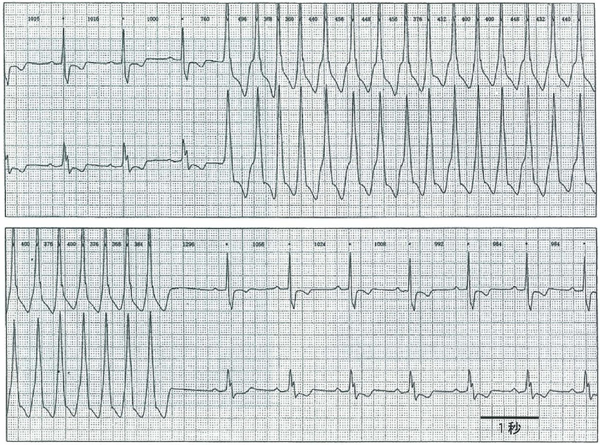
ａ 酸素投与
ｂ 強心薬投与
ｃ β遮断薬投与
ｄ 抗不整脈薬投与
ｅ 植え込み型除細動器移植術
✅
ｂ 強心薬投与
EF 20%（重度心機能低下）＋VT（頻拍）→心原性ショック合併のリスク高→ドブタミン等の強心薬で血行動態安定化が優先。
❤️ 重度心機能低下患者のVT管理
EF 20%（重度心機能低下）：心拍出量↓→VTが続けば心原性ショックへ移行血行動態安定のVT（EF低下）：強心薬（ドブタミン）で心機能サポート+アミオダロン（III群：VTを抑制）
β遮断薬：心機能低下時は慎重（陰性変力）
抗不整脈薬：アミオダロン（EF低下患者のVTに安全性高い）
ICD適応：今回の急性期後に検討（EF≤35%→一次予防ICD）
🎯 国試ポイント
EF 20%+VT→心原性ショックリスク→強心薬（ドブタミン）+アミオダロン。β遮断薬は急性期心不全悪化時には禁忌。ICD植込みは急性期安定後に検討（二次予防+EF低下→一次予防適応）。酸素投与は補助的（VT自体には直接効果なし）。🔍 選択肢解説
陳旧性心筋梗塞＋EF20％＋心室頻拍。a 酸素投与：適切。
b 強心薬投与：催不整脈作用でVTを悪化させ不適。✓
c β遮断薬投与：適切。
d 抗不整脈薬投与：適切。
e 植え込み型除細動器移植術：低EF＋VTで適切。